MINISTERO
DELL’INTERNO
DIPARTIMENTO PER GLI AFFARI INTERNI E TERRITORIALI
DIREZIONE CENTRALE DEI SERVIZI ELETTORALI
Parlamento europeo
Pubblicazione n. 2
Elezione dei membri
del Parlamento europeo
spettanti all’Italia
di domenica 26 maggio 2019
Istruzioni
per la presentazione
e l’ammissione
delle candidature
MINISTERO
DELL’INTERNO
DIPARTIMENTO PER GLI AFFARI INTERNI E TERRITORIALI
DIREZIONE CENTRALE DEI SERVIZI ELETTORALI
Parlamento europeo
Pubblicazione n. 2
Elezione dei membri
del Parlamento europeo
spettanti all’Italia
di domenica 26 maggio 2019
Istruzioni
per la presentazione
e l’ammissione
delle candidature
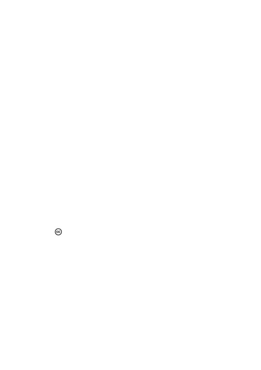
S
INDICE GENERALE
Pagina
AVVERTENZE
3
ISTRUZIONI PER LA PRESENTAZIONE E L’AM-
MISSIONE DELLE CANDIDATURE
10
MODULISTICA
111
DISPOSIZIONI NORMATIVE
133
GIURISPRUDENZA
203
Elenco cronologico delle sentenze riportate nella «Giurisprudenza»
261
Marzo 2019
A cura del
2
Premessa
Le istruzioni contenute nella presente pubblicazione, rielabora-
ta tenuto conto anche dei riflessi innovativi recati dalla legge
3 novembre 2017, n. 165
(sul sistema di elezione delle Camere),
si propongono lo scopo di fornire a tutti i soggetti coinvolti nel pro-
cedimento elettorale preparatorio una guida puntuale nel compi-
mento dei vari passaggi operativi e degli adempimenti legati alla
presentazione dei contrassegni e delle liste dei candidati per l’ele-
zione dei membri del Parlamento europeo spettanti all’Italia.
In attuazione di quanto previsto dall’articolo 20, nono comma,
del testo unico di cui al d.P.R. 30 marzo 1957, n. 361, inserito dalla
citata legge n. 165/2017, sono stati predisposti i fac-simile dei
moduli da pubblicare sul sito del Ministero dell’interno, che si ripor-
tano anche in appendice alle presenti istruzioni.
3
INDICE
Pagina
Introduzione
11
1.
Deposito dei contrassegni di lista presso il Ministero dell’interno
1.1.
Gli adempimenti dei partiti / gruppi politici
15
1.2.
Caratteristiche del contrassegno di lista
16
1.2.1. Divieto di contrassegni che fanno riferimento a ideologie di stampo
fascista o nazista
17
1.2.2. Disposizioni dell’Unione europea su eventuali collegamenti e affiliazioni
tra partiti e gruppi politici europei e nazionali
18
1.3.
Termini per il deposito dei contrassegni presso il Ministero dell’interno . . .
20
1.4.
Modalità per il deposito dei contrassegni
20
1.5.
Esame dei contrassegni da parte del Ministero dell’interno
23
1.6.
Opposizioni contro le decisioni relative ai contrassegni
24
1.7.
Decisioni dell’Ufficio elettorale nazionale sulle opposizioni
25
1.8.
Comunicazioni relative al procedimento elettorale preparatorio effettuate dal
Ministero dell’interno agli Uffici elettorali circoscrizionali
25
1.9.
Indicazione, da parte di colui che deposita il contrassegno, del soggetto incari-
cato di effettuare la comunicazione dei curriculum vitae e dei certificati penali
dei candidati ammessi
26
Decreto del Ministro dell’interno 20 marzo 2019
Pubblicazione sul sito internet del Ministero dell’interno dei curriculum vitae
e dei certificati penali dei candidati in occasione delle elezioni europee e
politiche
26
Allegato A - Specifiche delle regole tecniche per la comunicazione telema-
tica al Ministero dell’interno del curriculum vitae e del certificato penale del
candidato
29
2. Deposito dello statuto o della dichiarazione di trasparenza
presso il Ministero dell’interno
2.1. La modifica normativa
34
2.2. Termine per il deposito dello statuto o della dichiarazione di trasparenza presso
il Ministero dell’interno
34
2.3. Modalità per il deposito dello statuto o della dichiarazione di trasparenza . .
35
4
Pagina
2.4. Esame delle dichiarazioni di trasparenza da parte del Ministero dell’interno . .
36
2.5. Opposizioni contro le decisioni relative alla dichiarazione di trasparenza . . .
36
2.6. Decisioni dell’Ufficio elettorale nazionale sulle opposizioni
37
3. Designazione, presso il Ministero dell’interno, del rappresen-
tante effettivo e supplente incaricato di effettuare il
deposito delle liste dei candidati
3.1. I rappresentanti incaricati
38
3.2. Modalità e termini per la presentazione delle designazione dei rappresentanti .
38
3.3. Comunicazione delle designazioni dei rappresentanti, da parte del Ministero
dell’interno, agli Uffici elettorali circoscrizionali
39
4. Designazione, presso il Ministero dell’interno, dei delegati
dei partiti o gruppi politici per ciascuno degli altri Stati
membri dell’Unione europea
4.1. Designazione dei delegati dei partiti o gruppi politici presso gli altri Stati
membri dell’Unione europea
41
4.2. Termini entro i quali devono essere presentate le designazioni dei delegati e
adempimenti successivi
42
5. Formazione delle liste dei candidati
5.1. Elenco dei documenti necessari per presentare una lista di candidati presso
ciascun Ufficio elettorale circoscrizionale
43
5.2. Liste dei candidati
44
5.3. Dichiarazione di presentazione di una lista di candidati
46
5.3.1. Numero di coloro che devono sottoscrivere la lista dei candidati - Casi
in cui è previsto l’esonero dall’obbligo di raccogliere le sottoscrizioni
48
5.3.2. Sottoscrizione della dicharazione di presentazione di una lista di
candidati
51
5.3.3. Autenticazione delle firme dei sottoscrittori della lista
(per le liste che
devono raccogliere le sottoscrizioni)
52
5.3.4. Indicazione del contrassegno della lista dei candidati
54
5.3.5. Indicazione dei delegati di lista
55
5.3.6. Mandatario elettorale
56
5.4. Liste di candidati espressione di una minoranza linguistica
- Dichiarazione di
collegamento con un’altra lista
56
5.5. Certificati attestanti che i presentatori della lista sono elettori della cir-
coscrizione
57
5.6. Dichiarazione di accettazione della candidatura da parte di ogni candidato . .
59
5
Pagina
5.7. Dichiarazione sostitutiva di ogni candidato con cui si attesta l’insussistenza del-
la condizione di incandidabilità
60
5.8. Certificati attestanti che i candidati che fanno parte della lista sono elettori di
un qualsiasi comune della Repubblica
63
5.9. Candidature di cittadini di altro Stato UE residenti nel nostro Paese all’elezione
dei membri del Parlamento europeo spettanti l’Italia
63
5.10. Esenzione dal pagamento dell’imposta di bollo
64
6. Presentazione delle liste dei candidati presso gli Uffici elet-
torali circoscrizionali
6.1. Modalità di presentazione delle liste dei candidati
66
6.2. Termini di presentazione delle liste dei candidati
66
6.3. Adempimenti della cancelleria della Corte d’appello sede dell’Ufficio elettorale
circoscrizionale nel momento della presentazione delle liste dei candidati . .
66
7.
L’Ufficio elettorale circoscrizionale e le operazioni relative
all’esame delle liste dei candidati
7.1.
Composizione dell’Ufficio elettorale circoscrizionale
69
7.2.
Termini per le operazioni dell’Ufficio elettorale circoscrizionale relative all’esa-
me delle liste dei candidati presentate
69
7.3.
Operazioni dell’Ufficio elettorale circoscrizionale relative all’esame delle liste
dei candidati presentate
70
7.3.1. Accertamento dell’identità della persona che deposita la lista di candidati
70
7.3.2. Verifica dell’avvenuto deposito dello statuto/dichiarazione di traspa-
renza
70
7.3.3. Controllo del contrassegno della lista dei candidati
71
7.3.4. Accertamento della data di presentazione della lista dei candidati. . .
71
7.3.5. Verifica del numero delle sottoscrizioni dei presentatori della lista dei
candidati
72
7.3.6. Esame della lista e della posizione dei singoli candidati
74
7.3.6.1. Controllo del numero dei candidati che compongono la lista e
del rispetto delle quote di genere
74
7.3.6.2. Controllo, per ogni candidato, dell’eventuale sussistenza della
situazione di incandidabilità ai sensi del d.lgs. 31 dicembre
2012, n. 235
76
7.3.6.3. Controllo delle dichiarazioni di accettazione della candidatura
da parte dei singoli candidati
79
7.3.6.4. Controllo del possesso, da parte di ciascun candidato, del requi-
sito dell’età prescritta per poter essere eletti alla carica di mem-
bro del Parlamento europeo spettante all’Italia
80
6
Pagina
7.3.6.5. Controllo del certificato elettorale di iscrizione di ciascun candi-
dato nelle liste elettorali di un comune della Repubblica . . .
80
7.3.6.6. Controllo sulle candidature plurime nella stessa circoscrizione
81
7.3.6.7. Verifiche da compiere in relazione ai candidati che siano citta-
dini di un altro Stato membro dell’Unione europea
81
7.3.6.8. Operazioni conclusive inerenti alle liste e ai candidati
83
7.3.7. Esame delle dichiarazioni di collegamento - Condizioni di reciprocità .
84
7.4. Decisioni dell’Ufficio elettorale circoscrizonale in relazione alle liste ammesse -
Eventuale ammissione di nuovi documenti
85
7.5. Comunicazione delle decisioni dell’Ufficio elettorale circoscrizionale ai delegati
delle liste
85
7.6. Sospensione delle operazioni dell’Ufficio elettorale circoscrizionale
86
8. Operazioni dell’Ufficio elettorale circoscrizionale in seguito
alle decisioni sui ricorsi o dopo la scadenza del termine
per ricorrere
8.1. Operazioni dell’Ufficio elettorale circoscrizionale in ordine alle liste dei
candidati
87
8.2. Stampa dei manifesti con le liste dei candidati della circoscrizione
- Stampa delle schede di votazione
88
a) Stampa del manifesto con le liste dei candidati della circoscrizione . . .
88
b) Stampa della scheda di votazione con i simboli delle liste dei candidati
della circoscrizione
88
8.3. Comunicazione delle liste ammesse alle giunte comunali ai fini dell’assegnazio-
ne degli spazi da destinare alle affissioni di propaganda elettorale
89
9. Ricorsi all’Ufficio elettorale nazionale
9.1. Decisioni degli Uffici elettorali circoscrizionali che possono essere impugnate
con ricorso all’Ufficio elettorale nazionale
90
9.2. Soggetti interessati a ricorrere
90
9.3. Termine e modalità per presentare i ricorsi contro le decisioni dell’Ufficio elet-
torale circoscrizionale
90
9.4. Invio dei ricorsi all’Ufficio elettorale nazionale
91
9.5. Decisioni dell’Ufficio elettorale nazionale sui ricorsi
- Comunicazione delle
decisioni
91
10. Contenzioso giurisdizionale in materia di presentazione
delle candidature
10.1. Impugnazione dei provvedimenti di esclusione di liste o candidati dal procedi-
mento elettorale
92
7
Pagina
10.2. Termini e modalità di presentazione dei ricorsi contro le decisioni al Tribunale
amministrativo regionale e relativa discussione e decisione
92
10.3. Termini e modalità di presentazione dei ricorsi in appello al Consiglio di Stato
e relativa discussione e decisione
94
10.4. Inapplicabilità della sospensione dei termini processuali nel periodo feriale
95
10.5. Diverso termine di impugnazione dei provvedimenti che non hanno determi-
nato l’esclusione di liste o candidati
95
11. Designazione dei rappresentanti delle liste dei candidati
presso gli uffici elettorali di sezione, gli Uffici elettorali
provinciali e gli Uffici elettorali circoscrizionali
11.1. Attribuzioni dei delegati di ciascuna lista di candidati
96
11.2. Modalità di presentazione delle designazioni dei rappresentanti di lista da parte
dei delegati
96
11.3. Organi ai quali deve essere diretta la designazione dei rappresentanti di lista
presso gli uffici elettorali di sezione, gli Uffici elettorali provinciali e gli Uffici
elettorali circoscrizionali
- Termini
98
11.3.1. Rappresentanti di lista presso gli uffici elettorali di sezione
98
11.3.2. Rappresentanti di lista presso gli Uffici elettorali provinciali costituiti
presso i Tribunali dei capoluoghi di provincia
99
11.3.3. Rappresentanti di lista presso gli Uffici elettorali circoscrizionali costi-
tuiti presso la Corte d’appello del capoluogo di circoscrizione
99
11.4. Requisiti dei rappresentanti di lista
99
12. Designazione
• dei rappresentanti dei partiti o gruppi politici presso ogni
circoscrizione consolare avente sede negli altri Stati mem-
bri dell’Unione europea e
• dei rappresentanti di lista presso gli uffici elettorali di
sezione istituiti nel territorio dell’Unione
12.1. Attribuzioni dei delegati dei partiti o gruppi politici per gli altri Stati membri
dell’Unione europea
101
12.2. Modalità di presentazione delle designazioni dei rappresentanti del partito o
gruppo politico e dei rappresentanti di lista da parte dei delegati per gli altri
Stati membri dell’Unione europea
102
12.3. Organi ai quali deve essere diretta la designazione dei rappresentanti
103
12.3.1. Rappresentanti del partito o gruppo politico presso le circoscrizioni con-
solari degli altri Stati membri dell’Unione europea
103
12.3.2. Rappresentanti della lista di candidati presso gli uffici elettorali di sezio-
ne istituiti nel territorio degli altri Stati membri dell’Unione europea . .
103
8
Pagina
12.4. Requisiti
• dei rappresentanti dei partiti o gruppi politici presso ciascuna circoscrizione
consolare avente sede nel territorio degli altri Stati membri dell’Unione
europea e
• dei rappresentanti di lista presso gli uffici elettorali di sezione istituiti nei
medesimi
104
MODULISTICA
Pagina
ALLEGATO
1
Modello di mandato, rilasciato dal presidente o segretario o rappresentante legale di un
partito / gruppo / movimento politico, per il deposito del contrassegno e degli atti
relativi presso il Ministero dell’interno
109
ALLEGATO
2
Modello di dichiarazione di deposito diretto, da parte del presidente o segretario o rap-
presentante legale di un partito / gruppo / movimento politico, del contrassegno e
degli atti relativi presso il Ministero dell’interno
115
ALLEGATO
3
Modello di dichiarazione di trasparenza del partito / gruppo / movimento politico
121
ALLEGATO
4
Modello di dichiarazione di consenso all’utilizzo del proprio (nome e) cognome in un con-
trassegno di lista
125
ALLEGATO
5
Modello di dichiarazione in cui si indica il soggetto incaricato di comunicare alla piattafor-
ma informatica del Ministero dell’interno il curriculum vitae e il certificato penale di
ciascun candidato
129
ALLEGATO
6
Modello di dichiarazione di presentazione di una lista di candidati che non ha l’obbligo
di raccogliere le sottoscrizioni
133
ALLEGATO
7
Modello di dichiarazione di presentazione di una lista di candidati che ha l’obbligo di
raccogliere le sottoscrizioni - Atto principale
139
9
Pagina
ALLEGATO
7-BIS
Modello di dichiarazione di presentazione di una lista di candidati che ha l’obbligo di
raccogliere le sottoscrizioni - Atto separato
147
ALLEGATO
8
Modello di dichiarazione di accettazione della candidatura da parte del candidato . . .
155
ALLEGATO
8-BIS
Modello di dichiarazione del candidato di altro Stato UE residente in Italia
159
ALLEGATO
9
Modello di dichiarazione sostitutiva del candidato attestante l’insussistenza della condi-
zione di incandidatilità
163
ALLEGATO
10
Modello di verbale di ricevuta della presentazione delle liste dei candidati presso la can-
celleria della Corte d’appello capoluogo di circoscrizione in cui ha sede l’Ufficio
elettorale circoscrizionale
167
ALLEGATO
11
Modello di manifesto con le liste dei candidati della circoscrizione
171
ALLEGATO
12
Modello di ricevuta della designazione dei rappresentanti effettivo e supplente di una lista
di candidati presso gli uffici elettorali di sezione di un medesimo comune . .
175
ALLEGATO
13
Modello di ricevuta della designazione dei rappresentanti effettivo e supplente di una lista
di candidati presso l’Ufficio elettorale provinciale costituito presso il Tribunale del ca-
capoluogo di provincia
179
ALLEGATO
14
Modello di ricevuta della designazione dei rappresentanti effettivo e supplente di una lista
di candidati presso l’Ufficio elettorale circoscrizionale
183
ALLEGATO
15
Modello di designazione del mandatario elettorale da parte del candidato
187
10
Introduzione
L’elezione dei membri del Parlamento europeo spettanti all’Italia
è disciplinata dalla legge 24 gennaio 1979, n. 18, dal decreto-legge
24 giugno 1994, n. 408, convertito, con modificazioni, dalla legge 3
agosto 1994, n. 483, nonché, per quanto da essi non previsto espres-
samente, dalle norme contenute nel testo unico delle leggi per l’ele-
zione della Camera dei deputati di cui al d.P.R. 30 marzo 1957, n. 361.
Pertanto
- anche alla luce delle disposizioni introdotte dalla
legge 3 novembre 2017, n. 165, che hanno apportato modifiche al
procedimento elettorale preparatorio della Camera dei deputati e
del Senato della Repubblica - le operazioni preliminari relative alla
presentazione e all’ammissione delle liste dei candidati per l’elezione
dei membri del Parlamento europeo spettanti all’italia si attuano
attraverso il deposito dei seguenti documenti presso il Ministero
dell’Interno:
1) il contrassegno di lista;
￫ Articolo 11, primo comma, della legge n. 18/1979,
￫ Articolo 14, primo comma, del testo unico di cui al d.P.R. n. 361/1957
2) lo statuto del partito o gruppo politico organizzato qualora
questo risulti iscritto nel registro dei partiti politici previsto dal-
l’articolo 4 del decreto-legge 28 dicembre 2013, n. 149, conver-
tito, con modificazioni, dalla legge 21 febbraio 2014, n. 13, o, in
mancanza dell’iscrizione, di una dichiarazione che indichi gli ele-
menti minimi di trasparenza;
￫ Articolo 14, primo comma, del testo unico di cui al d.P.R. n. 361/1957
3) le designazioni dei soggetti che saranno incaricati di presen-
tare le liste dei candidati presso gli Uffici elettorali circoscrizio-
nali costituiti presso le Corti d’appello di Milano, Venezia, Roma,
Napoli e Palermo;
￫ Articolo 11, quarto comma, lettera a), della legge n. 18/1979
4) le designazioni dei delegati, per ciascuno degli altri Stati
membri dell’Unione europea, con l’incarico, a loro volta, di de-
11
signare i rappresentanti del partito o gruppo politico presso le
singole circoscrizioni consolari e i rappresentanti di lista presso
ciascun ufficio elettorale di sezione istituito nel territorio degli
Stati predetti;
￫ Articolo 11, quarto comma, lettera b), della legge n. 18/1979
Il deposito del contrassegno, dello statuto (o della dichiara-
zione di trasparenza), delle designazioni dei rappresentanti
e dei delegati deve essere effettuato contestualmente presso
il Ministero dell’interno dalle ore 8 alle ore 20 del 49º giorno
(domenica 7 aprile) e dalle ore 8 alle ore 16 del 48º giorno
(lunedì 8 aprile) precedente quello della votazione.
￫ Articolo 11, primo comma, della legge n. 18/1979,
￫ Articolo 15, primo comma, del testo unico di cui al d.P.R. n. 361/1957
Il mancato deposito del contrassegno presso il Ministero del-
l’interno o la sua ricusazione comporteranno l’impossibilità di pre-
sentare liste di candidati nelle circoscrizioni elettorali.
La mancata presentazione dello statuto ovvero della dichiara-
zione di trasparenza comporterà la notifica al depositante, da parte
del Ministero dell’interno, di una comunicazione nella quale si dà atto
che la legge prevede, all’articolo 22, primo comma, numero 1-bis),
del d.P.R. n. 361/1957, la ricusazione delle liste eventualmente pre-
sentate da partiti politici o gruppi politici che non abbiano deposi-
tato lo statuto o la dichiarazione di trasparenza.
Attesa la competenza degli Uffici elettorali circoscrizionali in or-
dine alla ricusazione di tali liste, il Ministero dell’interno provvederà,
comunque, a inviare a detti Uffici l’elenco dei rappresentanti even-
tualmente designati.
La mancata designazione dei rappresentanti effettivi e sup-
plenti comporterà la notifica al depositante, da parte del Ministero
dell’interno, della comunicazione dell’impossibilità di presentare liste
in assenza di rappresentanti che possano depositarle.
La mancata indicazione dei delegati di cui al punto 4) avrà
come conseguenza, per i partiti o gruppi politici, l’impossibilità di
procedere alle designazioni sopradescritte.
Da qui la necessità che i partiti o gruppi politici osservino scru-
polosamente le norme che regolano queste delicate operazioni.
12
Elezioni trasparenti
L’articolo 4 della legge n. 165 / 2017 dispone che, in un’ap-
posita sezione del sito internet del Ministero dell’interno,
denominata «Elezioni trasparenti», entro dieci giorni dalla
scadenza del termine per il deposito dei contrassegni di cui
all’articolo 11, primo comma, della legge n. 18/1979, per cia-
scun partito, movimento e gruppo politico che ha presentato liste
di candidati, sono pubblicati in maniera facilmente accessi-
bile:
a) il contrassegno depositato, con l’indicazione del soggetto
che ha conferito il mandato per il deposito ai sensi dell’ar-
ticolo 15, primo comma, del d.P.R. n. 361/1957;
b) lo statuto ovvero la dichiarazione di trasparenza, depo-
sitati a norma dell’articolo 14, primo comma, del d.P.R.
n. 361/1957, come modificato dall’articolo 1 della legge
n. 165/2017.
Nella medesima sezione sono pubblicate, entro dieci
giorni dalla scadenza del termine di presentazione delle liste
dei candidati, per ciascun partito, movimento e gruppo poli-
tico, le liste di candidati presentate per ogni circoscrizione.
Legge 9 gennaio 2019, n. 3
Pubblicazione del curriculum vitae e del certificato pe-
nale di ciascun candidato
L’articolo 1, commi 14 e 15, della legge 9 gennaio 2019,
n. 3, ha stabilito che - in occasione dello svolgimento delle
competizioni elettorali di qualunque genere (escluse le
elezioni amministrative per i comuni sotto i 15.000 abitanti),
l’obbligo per i partiti, movimenti politici e liste che si pre-
sentino alle elezioni, di pubblicare sul proprio sito internet
il curriculum vitae fornito dai propri candidati e il relativo
certificato penale, rilasciato dal casellario giudiziale.
L’obbligo di pubblicazione deve essere adempiuto entro
13
il 14º giorno antecedente la data delle elezioni (domenica
12 maggio) per le elezioni europee.
Non è richiesto il consenso espresso degli interessati.
Il certificato penale deve essere rilasciato dal casellario
giudiziario non prima di 90 giorni dalla data fissata per la
consultazione elettorale, cioè in una data non anteriore al
25 febbraio.
Se la richiesta del certificato penale è effettuata per ottem-
perare a tale obbligo, le imposte di bollo e le altre spese sono
ridotte della metà.
Ai sensi dell’ultimo periodo del comma 15 del suddetto
articolo 1, il Ministro dell’interno ha emanato il decreto 20
marzo 2019, riportato a pagina 26 con il relativo allegato tec-
nico.
Ed invero, i documenti informatici contenenti i curricu-
lum vitae e i certificati penali devono poi essere comuni-
cati all’apposita piattaforma informatica del Ministero
dell’interno, seguendo le prescrizioni di cui al suddetto
decreto con l’allegato tecnico, ai fini della successiva pubbli-
cazione anche sul sito del Ministero dell’interno.
14
1. Deposito dei contrassegni di lista presso
il Ministero dell’interno
1.1. Gli adempimenti dei partiti / gruppi politici
I partiti o i gruppi politici, che intendono presentare liste di can-
didati nelle circoscrizioni , devono depositare presso il Ministero del-
l’interno il contrassegno con il quale dichiarano di voler distinguere
le liste medesime nelle singole circoscrizioni.
￫ Articolo 11, primo comma, della legge n. 18/1979,
￫ Articolo 14, primo comma, del testo unico di cui al d.P.R. n. 361/1957
Il testo unico delle leggi recanti norme per l’elezione della Ca-
mera dei deputati di cui al d.P.R. n. 361/1957, come, da ultimo, mo-
dificato dalla legge n. 165/2017, prevede obblighi e divieti per il
deposito dei contrassegni di lista presso il Ministero dell’interno da
parte dei partiti o gruppi politici che partecipano all’elezione dei rap-
presentanti italiani nel Parlamento europeo:
• l’obbligo del deposito del contrassegno di lista;
• l’obbligo, per i partiti che notoriamente fanno uso di un determi-
nato simbolo, di presentare un contrassegno che riproduca tale
simbolo;
• l’obbligo, per il partito o gruppo politico che deposita il contrasse-
gno, di indicare con esattezza la propria denominazione nella di-
chiarazione di deposito;
• il divieto di utilizzare contrassegni identici o confondibili:
◎ con contrassegni presentati in precedenza,
◎ con contrassegni che riproducono simboli utilizzati tradizio-
nalmente da altri partiti,
◎ con contrassegni che riproducono simboli, elementi o dici-
ture, o solo alcuni di essi, utilizzati tradizionalmente da par-
titi presenti in Parlamento;
• il divieto di presentare contrassegni che riproducono immagini o
soggetti religiosi.
15
1.2. Caratteristiche del contrassegno di lista
Le modalità e i termini per depositare il contrassegno di lista da
parte dei partiti o gruppi politici, che intendano presentare liste di
candidati, sono regolati dall’articolo 11 della legge n. 18/1979 che
richiama espressamente gli articoli 14, 15 e 16 del testo unico di cui
al d.P.R. n. 361/1957.
La normativa elettorale ha dettato una tutela sempre più rigorosa
dei contrassegni utilizzati tradizionalmente dai partiti politici; la di-
sciplina della materia può essere riassunta come segue.
È obbligatorio il deposito del contrassegno di lista da parte di
tutti i partiti o gruppi politici che intendano partecipare alla compe-
tizione elettorale.
I partiti che notoriamente fanno uso di un determinato simbolo
sono tenuti a presentare le loro liste con un contrassegno che
riproduca quel simbolo.
￫ Articolo 14, secondo comma, del testo unico di cui al d.P.R. n. 361/1957
La norma anzidetta cita solo i partiti: da tale obbligo, quindi,
sono esclusi i gruppi politici, che sono formazioni occasionali nelle
quali confluiscono correnti politiche diverse e non hanno un con-
trassegno tradizionale.
Nel caso in cui più partiti o gruppi politici intendano presentare
un’unica lista di candidati, essi possono depositare, a tal fine, un con-
trassegno composito che riproduca tutto o in parte il loro contras-
segno insieme a quello di un altro o di altri partiti o gruppi.
Ai partiti che non abbiano un simbolo tradizionale e ai gruppi
politici è fatto assoluto divieto di presentare contrassegni identici
o confondibili con quelli che riproducono simboli utilizzati tra-
dizionalmente da altri partiti, ovvero che riproducono simboli,
elementi e diciture, o solo alcuni di essi, o elementi caratteriz-
zanti simboli che, per essere usati tradizionalmente da partiti
presenti in Parlamento, possono trarre in errore l’elettore.
￫ Articolo
14, commi terzo e sesto, del testo unico di cui al d.P.R.
n. 361/1957
Per quanto concerne i contrassegni non tradizionali - ferma re-
stando la necessità che non siano confondibili con quelli tradizional-
mente usati da partiti presenti in Parlamento
- la priorità nella
presentazione dei contrassegni presso il Ministero dell’interno
16
costituisce titolo; quindi sarà rivolto invito a sostituire i contrassegni
che risulteranno identici o confondibili con quelli presentati in
precedenza.
￫ Articolo 14, terzo comma, del testo unico di cui al d.P.R. n. 361/1957
Per quanto riguarda il concetto di « confondibilità », l’articolo 14 ci-
tato precisa che costituiscono « elementi di confondibilità » - con-
giuntamente o isolatamente considerati:
• la rappresentazione grafica e cromatica generale;
• i simboli riprodotti;
• i singoli dati grafici;
• le espressioni letterali;
• le parole o le effigi costituenti elementi di qualificazione degli
orientamenti o delle finalità politiche connesse al partito o alla
forza politica di riferimento anche se in diversa composizione o
rappresentazione grafica.
￫ Articolo 14, quarto comma, del testo unico di cui al d.P.R. n. 361/1957
Tra l’altro, non è ammessa la presentazione di contrassegni
effettuata con il solo scopo di precludere surrettiziamente l’uso
del contrassegno ad altri soggetti politici interessati a utilizzarlo.
￫ Articolo 14, quinto comma, del testo unico di cui al d.P.R. n. 361/1957
È fatto divieto di presentare:
• contrassegni nei quali siano riprodotti immagini o soggetti reli-
giosi
￫ Articolo 14, settimo comma, del testo unico di cui al d.P.R. n. 361/1957
• contrassegni che utilizzano denominazioni e/o simboli o
marchi di società (anche calcistiche) senza apposita autoriz-
zazione all’uso da parte di dette società, con firma del rappre-
sentante legale autenticata da uno dei soggetti di cui all’articolo 14
della legge 21 marzo 1990, n. 53.
1.2.1. Divieto di contrassegni che fanno riferimento a
ideologie di stampo fascista o nazista
Sono TASSATIVAMENTE vietati i contrassegni in cui siano con-
tenute parole, espressioni, immagini, disegni o raffigurazioni
che facciano riferimento a ideologie autoritarie: per esempio,
le parole «fascismo», «nazismo», «nazionalsocialismo» e si-
mili, nonché qualunque simbologia che richiami anche indiret-
17
tamente tali ideologie. Infatti, la presentazione dei contrassegni
che contengono, anche in parte, tali elementi, parole o simboli deve
considerarsi vietata a norma della XII disposizione transitoria e finale,
primo comma, della Costituzione e dalla legge 20 giugno 1952,
n. 645, e successive modificazioni. Su tali fattispecie devono richia-
marsi le sentenze del Consiglio di Stato, Quinta Sezione, 6 marzo
2013, n. 1354 e n. 1355.
1.2.2. Disposizioni dell’Unione europea su eventuali
collegamenti e affiliazioni tra partiti e gruppi
politici europei e nazionali
Già nel 2013 l’Unione europea ha invitato gli Stati membri non-
ché i partiti politici nazionali a informare i cittadini sull’«affiliazione»
dei partiti nazionali nei confronti dei partiti politici europei nonché
sul candidato alla presidenza della Commissione europea sostenuto
da ciascun partito e al relativo programma.
I partiti possono, ovviamente, rendere pubbliche tali indicazioni
su tutto il materiale utilizzato nella campagna elettorale, nelle comu-
nicazioni e nelle trasmissioni radiotelevisive di argomento politico.
In particolare, gli Stati membri e i partiti nazionali sono stati esor-
tati a promuovere e semplificare la diffusione, tra l’elettorato, delle
informazioni sui «collegamenti» tra partiti nazionali ed europei, an-
che «permettendo e incoraggiando» l’indicazione di tali «collega-
menti» o «affiliazioni» sulle schede elettorali.
In tali sensi, deve ritenersi pienamente legittimo l’inserimento del
nome completo o dell’acronimo o anche del simbolo del partito po-
litico europeo all’interno del contrassegno depositato da ogni partito
o movimento politico nazionale, anche nell’ipotesi di contrassegni
compositi.
￫ Raccomandazione della Commissione europea del 12 marzo 2013
(2013/142/UE) sul rafforzare l’efficienza e la democrazia nello svolgi-
mento delle elezioni del Parlamento europeo
￫ Risoluzione del Parlamento europeo 4 luglio 2013 [2013/2102 (INI)] sul
miglioramento delle modalità pratiche per lo svolgimento delle elezioni
europee del 2014
Ora, la Commissione europea, in vista delle elezioni del corrente
anno e con un invito rivolto ai partiti europei e nazionali, ha nuova-
mente ribadito la necessità che i cittadini dell’Unione europea ven-
18
gano sensibilizzati sul sostegno dato dalle forze politiche a un can-
didato alla carica di presidente della Commissione europea nonché
sulle affiliazioni tra partiti nazionali e partiti politici europei.
￫ Raccomandazione della Commissione europea del 14 febbraio 2018
(2018/234/UE) sul rafforzare la natura europea e l’efficienza nello svol-
gimento delle elezioni del parlamento europeo del 2019
In particolare, con la suddetta raccomandazione, la Commissione
europea ha testualmente affermato:
«Gli Stati membri dovrebbero promuovere e semplificare la dif-
fusione all’elettorato delle informazioni sulle affiliazioni tra partiti
nazionali e partiti politici europei, nonché sui candidati capilista,
prima e durante le elezioni del Parlamento europeo, anche permet-
tendo e incoraggiando l’indicazione dell’affiliazione sul materiale
usato nella campagna elettorale, nei siti web dei partiti membri
nazionali e regionali e, ove possibile, sulle schede elettorali.».
Inoltre, con decisione (UE, Euratom) 2018/994 del Consiglio del
13 luglio 2018, è stato modificato l’atto relativo all’elezione dei mem-
bri del Parlamento europeo a suffragio universale diretto, allegato
alla decisione 76/787/CECA, CEE, Euratom del Consiglio del 20 set-
tembre 1976, inserendovi l’articolo 3 - ter, che prevede testualmente:
«Gli Stati membri possono consentire l’apposizione, sulle schede
elettorali, del nome o del logo del partito politico europeo al quale
è affiliato il partito politico nazionale o il singolo candidato.».
Pertanto, i partiti o gruppi politici possono inserire, nel contras-
segno che intendono presentare, simboli e/o denominazioni di par-
titi europei, fornendo la relativa documentazione sulla legittimità
all’uso.
Ed invero, il partito nazionale, che depositerà, all’interno del
proprio contrassegno, anche quello ( e / o la denominazione ) di un
partito politico europeo «affiliato», dovrà produrre l’attestazio-
ne/dichiarazione del presidente, segretario o altro rappresentante
legale del partito europeo di riferimento che affermi l’esistenza di un
«collegamento» (o affiliazione/associazione) con detto partito na-
zionale e la conseguente legittimazione all’utilizzo del simbolo e/o
della denominazione del partito o gruppo politico europeo all’in-
terno del contrassegno che il medesimo partito nazionale deposita
al Ministero dell’interno.
Tale attestazione o dichiarazione dovrà essere autenticata da uno
19
dei soggetti di cui all’articolo 14 della legge n. 53/1990 o da un’au-
torità diplomatica o consolare italiana.
In tale ottica, risulta anche possibile inserire, nel contrassegno
depositato, il nome del proprio candidato alla carica di presidente
della Commissione europea, producendo un’apposita dichiarazione
di consenso da parte dell’interessato, con firma autenticata da uno
dei soggetti indicati nell’articolo 14 della legge n. 53/1990 o da
un’autorità diplomatica o consolare italiana.
Ovviamente, se il partito o gruppo politico non riterrà di inserire,
nel proprio contrassegno, riferimenti al partito politico europeo di
«affiliazione», tale contrassegno non potrà certamente essere ricu-
sato per tale motivo; il medesimo verrà, quindi, ammesso se sarà ri-
conosciuto regolare sotto ogni altro aspetto.
1.3. Termini per il deposito dei contrassegni presso il
Ministero dell’interno
Il deposito dei contrassegni deve essere effettuato presso il Mi-
nistero dell’interno non prima delle ore 8 del 49º giorno (dome-
nica 7 aprile) e non oltre le ore 16 del 48º giorno (lunedì 8 aprile)
precedente quello della votazione.
￫ Articolo 11, primo comma, della legge n. 18/1979
Ai fini del deposito, l’apposito ufficio del Ministero dell’interno re-
sterà aperto, anche nei giorni festivi, dalle ore 8 alle ore 20 nel primo
giorno e dalle ore 8 alle ore 16 il secondo giorno.
￫ Articolo 11, primo comma, della legge n. 18/1979
￫ Articolo 15, secondo comma, del testo unico di cui al d.P.R. n. 361/1957
1.4. Modalità per il deposito dei contrassegni
All’atto del deposito del contrassegno deve essere indicata la
denominazione del partito o del gruppo politico.
￫ Articolo 14, primo comma, del testo unico di cui al d.P.R. n. 361/1957
Il deposito del contrassegno di lista, unitamente a
quello dello statuto o della dichiarazione di trasparenza,
deve essere effettuato da una persona MUNITA DI MAN-
20
DATO AUTENTICATO DA UN NOTAIO e rilasciato dal presi-
dente o dal segretario del partito o gruppo politico.
￫ Articolo 15, primo comma, del testo unico di cui al d.P.R.
n. 361/1957
La persona incaricata di depositare il contrassegno presso il Mi-
nistero dell’interno deve eleggere domicilio in Roma per poter rice-
vere le comunicazioni e le notificazioni previste dall’articolo 16 del
testo unico di cui al d.P.R. n. 361/1957.
￫ Articolo 11, secondo comma, della legge n. 18/1979
Qualora venga depositato un contrassegno composito
- cioè formato, al suo interno, da due o più simboli
-
è necessario che la persona sia munita di un MANDATO
AUTENTICATO DA UN NOTAIO e rilasciato dai presidenti o
segretari dei partiti o gruppi politici ai quali apparten-
gono tutti i simboli della composizione
(in pratica, un
mandato congiunto o, in alternativa, tanti mandati quanti
sono i partiti/gruppi politici cui appartengono i simboli
all’interno del contrassegno).
Qualora il contrassegno contenga uno o più nominativi di
persone diverse dal mandante o dal depositante, è necessario pre-
sentare, contestualmente al contrassegno, un espresso consenso al-
l’utilizzazione di tale o tali nominativi da parte degli interessati con
firma autenticata da uno dei soggetti previsti dall’articolo 14 della
legge n. 53/1990 o da un’autorità diplomatica o consolare italiana
(allegato 4).
Inoltre, avendo il presidente o segretario del partito/grup-
po politico il potere, per legge, di conferire un mandato per il
deposito, ove egli non intenda delegare nessuno per svolgere
tale compito, si ritiene che possa direttamente procedere al
21
deposito del contrassegno; ciò vale anche per il deposito
dello statuto e della restante documentazione, salvo quanto
previsto per la dichiarazione di trasparenza, per la quale
la legge impone la firma del rappresentante legale auten-
ticata da notaio.
In ogni caso, il deposito deve essere fatto personalmente da
colui che ha ricevuto il mandato: costui non può subdelegare altre
persone.
Al fine di agevolare le relative operazioni, in allegato alle presenti
istruzioni viene inserita la modulistica per la presentazione del con-
trassegno e di tutta la documentazione correlata. In particolare, è
stato predisposto un modello di mandato a depositare [allegato 1]
e, in alternativa, un modello che prevede il deposito effettuato diret-
tamente dal presidente o segretario [allegato 2].
In ogni caso si tenga presente che:
1) Non è ammesso il deposito di più di un contrassegno da parte
della medesima persona.
￫ Articolo 1, comma 1, del d.P.R. n. 14/1994
2) Non può essere conferito mandato da una medesima persona
a depositare più di un contrassegno.
￫ Articolo 1, comma 2, del d.P.R. n. 14/1994
3) Pertanto, una medesima persona non può conferire mandato
a depositare un contrassegno e poi depositarne un altro per
la medesima consultazione.
Il contrassegno può essere anche figurato e deve essere comun-
que depositato in tre esemplari.
￫ Articolo 15, terzo comma, del testo unico di cui al d.P.R. n. 361/1957
Per evitare inconvenienti e difficoltà per l’esatta riproduzione dei
contrassegni che saranno presentati, è preferibile che i contrassegni
siano disegnati su carta lucida a inchiostro di china o tipografico.
Qualora i contrassegni vengano presentati a colori, per consentire la
loro più fedele riproduzione sulle schede di votazione e sui manifesti
recanti le liste dei candidati, è opportuno che i contrassegni mede-
22
simi siano disegnati su carta bianca del tipo patinata opaca e possi-
bilmente anche in fotocolor.
È opportuno, inoltre, che i contrassegni vengano depositati in
DUE MISURE diverse:
• UNA MISURA DEL CONTRASSEGNO, in tre esemplari, circoscritto da un
cerchio DEL DIAMETRO DI 10 CM, da utilizzare per la sua riprodu-
zione sui manifesti recanti le liste dei candidati;
• UN’ALTRA MISURA DELLO STESSO CONTRASSEGNO, anch’esso in tre
esemplari, circoscritto da un cerchio DEL DIAMETRO DI 3 CM da
utilizzare per la sua riproduzione sulle schede di votazione.
￫ Articolo 15, terzo comma, e articolo 31, comma 1, ultimo periodo, del
testo unico di cui al d.P.R. n. 361/1957
In tal modo i partiti o gruppi politici potranno avere una cogni-
zione esatta e immediata di come risulterà il loro contrassegno sui
manifesti con le liste dei candidati e sulle schede di votazione.
Dovranno risultare racchiuse nel cerchio che racchiude il contras-
segno tutte le raffigurazioni e le espressioni che fanno parte del con-
trassegno stesso.
Le due dimensioni (10 cm e 3 cm) dovranno contenere lo
stesso identico contrassegno, in modo da evitare dubbi su quale
dei due disegni siano state riprodotte le caratteristiche esatte del
simbolo del partito o gruppo politico.
1.5. Esame dei contrassegni da parte del Ministero del-
l’interno
Scaduto il termine per il deposito dei contrassegni presso
il Ministero dell’interno
(ore 16 del 48º giorno - lunedì 8 aprile -
precedente quello della votazione), quest’ultimo esaminerà i con-
trassegni depositati in base alle norme di cui agli articoli 11 della
legge n. 18/1979 e 14, 15 e 16 del testo unico di cui al d.P.R.
n. 361/1957.
Compiuto tale esame, il Ministero - per i contrassegni risultati
regolari
- nei due giorni successivi a quello in cui è scaduto
il termine per il deposito, cioè entro le ore 24 del 46° giorno
(mercoledì 10 aprile) antecedente la votazione, restituirà, al
domicilio eletto in Roma del depositante, un esemplare del
23
contrassegno con l’attestazione dell’avvenuto deposito e della
sua regolarità.
￫ Articolo 16, primo comma, del testo unico di cui al d.P.R. n. 361/1957
Qualora, viceversa, il contrassegno risulti in contrasto con le
norme sopra illustrate, il Ministero inviterà il depositante alla sosti-
tuzione, entro 48 ore dalla notifica del relativo avviso ministe-
riale, con la presentazione di un nuovo contrassegno che non
riproduca in alcun modo gli elementi ritenuti dal Ministero in con-
trasto con le disposizioni di legge e che sia regolare per ogni altro
verso. In caso contrario, non verrà accolta la sostituzione del contras-
segno originariamente presentato.
￫ Articolo 16, secondo comma, del testo unico di cui al d.P.R. n. 361/1957
Si ribadisce che, nel caso in cui non vengano designati i rappre-
sentanti dei partiti o gruppi politici o non venga presentato lo sta-
tuto/dichiarazione di trasparenza, il deposito del contrassegno non
consentirà la presentazione di liste.
1.6. Opposizione contro le decisioni relative ai contras-
segni
Le decisioni del Ministero dell’interno relative all’ammissione o
all’invito a sostituire i contrassegni di lista non sono definitive. Con-
tro le decisioni medesime è ammessa opposizione all’Ufficio eletto-
rale nazionale costituito presso la Corte suprema di cassazione.
￫ Articolo 16, terzo comma, primo periodo, del testo unico di cui al d.P.R.
n. 361/1957
Possono presentare opposizione sia coloro che abbiano ricevuto
l’invito a sostituire il proprio contrassegno, sia gli altri depositanti
quando ritengano che uno dei contrassegni ammessi sia confondi-
bile con il contrassegno da loro depositato.
Per mettere gli interessati in grado di conoscere i contrassegni
depositati, il Ministero dell’interno esporrà, in apposita bacheca pub-
blica, tutti i simboli presentati.
Le opposizioni all’Ufficio elettorale nazionale presso la Corte su-
prema di cassazione devono essere presentate al Ministero dell’in-
terno entro 48 ore dalla sua decisione.
￫ Articolo 16, quarto comma, primo periodo, del testo unico di cui al d.P.R.
n. 361/1957
24
Per le opposizioni contro l’invito a sostituire il proprio contrasse-
gno o a integrare la dichiarazione di trasparenza, i termini decorrono
dall’ora in cui è avvenuta la comunicazione che il Ministero è tenuto
a fare ai sensi dell’articolo 16 citato, primo o secondo comma.
Per le opposizioni contro l’ammissione di altri contrassegni, le
48 ore decorrono dal momento in cui il Ministero dell’Interno rende
note le sue decisioni attraverso l’affissione dei contrassegni stessi,
nell’apposita bacheca pubblica, tra i contrassegni «ammessi».
￫ Articolo 16, quarto comma, primo periodo, del testo unico di cui al d.P.R.
n. 361/1957
Le opposizioni devono essere redatte in carta libera e notificate
ai depositanti dei contrassegni che vi abbiano interesse entro lo
stesso termine previsto per presentare opposizione.
La prova dell’avvenuta notificazione deve essere allegata all’atto
di opposizione o può essere prodotta direttamente all’Ufficio elet-
torale nazionale.
1.7. Decisioni dell’Ufficio elettorale nazionale sulle
opposizioni
Il Ministero dell’interno farà pervenire le opposizioni all’Ufficio
elettorale nazionale presso la Corte suprema di Cassazione man
mano che le stesse saranno presentate.
Il suddetto Ufficio deciderà entro 48 ore dalla ricezione, sentiti
i depositanti dei contrassegni che vi abbiano interesse.
￫ Articolo 16, quarto comma, secondo periodo, del testo unico di cui al
d.P.R. n. 361/1957
L’Ufficio elettorale nazionale, appena adottate le proprie deci-
sioni, le comunicherà agli interessati e al Ministero dell’interno.
Qualora venga respinta un’opposizione avverso l’invito del Mini-
stero a sostituire il contrassegno, quello ricusato non può essere più
sostituito.
￫ Articolo 11, terzo comma, della legge n. 18/1979
1.8. Comunicazioni relative al procedimento elettorale
preparatorio effettuate dal Ministero dell’interno agli
Uffici elettorali circoscrizionali
25
Il Ministero dell’interno, appena adotterà le proprie decisioni:
• trasmetterà ai singoli Uffici elettorali circoscrizionali, per gli ulte-
riori provvedimenti di competenza, la riproduzione tipografica di
tutti i contrassegni di lista regolarmente ammessi;
• invierà agli stessi Uffici - ai fini dell’ammissione delle liste a norma
dell’articolo 22, primo comma, numero 1-bis), del testo unico di cui
al d.P.R. n. 361/1957 - le eventuali comunicazioni relative al man-
cato deposito della prescritta documentazione costituita dagli sta-
tuti (o dalle dichiarazioni di trasparenza).
1.9. Indicazione, da parte di colui che deposita il contras-
segno, del soggetto incaricato di effettuare la comu-
nicazione dei curriculum vitae e dei certificati penali
dei candidati ammessi
In occasione del deposito del contrassegno, il depositante, ai
sensi dell’articolo 1, comma 3, del decreto del Ministro dell’interno
20 marzo 2019, deve anche rilasciare una dichiarazione, su apposito
modulo predisposto dalla Direzione centrale dei servizi elettorali
(allegato 5), indicando
- tra il presidente o il segretario o il rappre-
sentante della lista - il soggetto incaricato di effettuare la comuni-
cazione, per ciascun candidato, dei curriculum vitae e dei certificati
penali rilasciati dal casellario giudiziale, con la rispettiva casella di
posta elettronica certificata (PEC) o di posta elettronica ordinaria.
Al fine di agevolare tale comunicazione, entro il 20º giorno
antecedente la votazione, il Ministero dell’interno invierà, al sud-
detto indirizzo di posta elettronica, le credenziali necessarie per
l’accesso alla piattaforma informatica « Trasparenza » .
Si riportano qui di seguito il testo del decreto e l’allegato tecnico.
Articolo 1
(Destinatari e procedimento di pubblicazione)
1. In occasione delle elezioni del Parlamento nazionale e
delle elezioni dei membri del Parlamento europeo spettanti al-
l’Italia, sono pubblicati, per ciascun candidato ammesso, all’in-
26
terno della sezione denominata «Elezioni trasparenti» del sito
internet del Ministero dell’interno istituita dall’articolo 4 della
legge 3 novembre 2017, n. 165, il curriculum vitae ed il certificato
penale rilasciato dal casellario giudiziale, già pubblicati sul sito
internet del partito, movimento politico o lista, ai sensi dell’arti-
colo 1, comma 14, della legge 9 gennaio 2019, n. 3.
2. I presidenti o segretari o rappresentanti dei partiti o mo-
vimenti politici o delle liste e i candidati ad esse collegati, che
partecipano alle elezioni politiche ed a quelle europee, comuni-
cano all’apposita piattaforma informatica denominata «Traspa-
renza » i documenti di cui al comma 1.
3. A tal fine, contestualmente al deposito dei contrassegni
presso il Ministero dell’interno in occasione delle elezioni euro-
pee e di quelle politiche, il depositante del contrassegno rilascia
una dichiarazione su apposito modulo in cui indica il soggetto
incaricato di effettuare la comunicazione di cui al comma 2 non-
ché la rispettiva casella di posta elettronica certificata o di posta
elettronica ordinaria, alla quale il Ministero dell’interno invia,
entro il ventesimo giorno antecedente la data di votazione, le
necessarie credenziali di accesso alla piattaforma informatica
« Trasparenza » .
4. Il soggetto incaricato, con le modalità tecniche ed ope-
rative indicate nell’Allegato A, che costituisce parte integrante
del presente decreto, comunica alla piattaforma «Trasparenza»
i documenti di cui al comma 1 entro e non oltre il decimo giorno
antecedente la data di votazione, per le verifiche tecniche fina-
lizzate alla loro pubblicazione.
5. Contestualmente alla comunicazione, il soggetto incari-
cato attesta la conformità di ciascuno dei documenti informatici
comunicati alla piattaforma rispetto a quelli già pubblicati sul
sito internet del partito, movimento politico, lista o candidato
collegato, garantendo, per ogni documento, l’accessibilità se-
condo la normativa vigente.
Articolo 2
(Mancato rispetto delle prescrizioni tecniche)
1. I documenti informatici che non rispettano le prescrizioni
27
tecniche di cui all’Allegato A sono, con la specifica indicazione di
errore, direttamente segnalati dalla piattaforma informatica al
soggetto incaricato, ai fini del necessario adeguamento. In tal
caso, il soggetto incaricato comunica alla piattaforma i docu-
menti rispondenti alle prescrizioni tecniche, entro l’ottavo giorno
antecedente la votazione.
Articolo 3
(Finalità)
1. Il sito internet del Ministero dell’interno, nella sezione
«Elezioni trasparenti», consente al cittadino di accedere agevol-
mente alle informazioni e ai documenti ivi pubblicati attraverso
la ricerca per cognome e nome di ciascun candidato ammesso,
per denominazione del partito, del movimento politico o della
lista nonché per circoscrizione in occasione delle elezioni euro-
pee ed anche per collegio in caso di elezioni politiche.
Articolo 4
(Disposizioni finali)
1. Le disposizioni di cui al presente decreto non com-
portano nuovi o maggiori oneri a carico della finanza pubblica.
Il Ministero dell’interno vi provvede con le risorse umane, stru-
mentali e finanziarie disponibili a legislazione vigente.
Il presente decreto è pubblicato nella Gazzetta ufficiale della
Repubblica Italiana.
Roma, 20 marzo 2019
Il Ministro: SALVINI
28
Allegato A
SPECIFICHE DELLE REGOLE TECNICHE
PER LA COMUNICAZIONE TELEMATICA
AL MINISTERO DELL’ INTERNO
DEL CURRICULUM VITAE
E DEL CERTIFICATO PENALE
DEL CANDIDATO
SOMMARIO
1.
INTRODUZIONE
2.
MODALITÀ DI PREDISPOSIZIONE DEI DOCUMENTI INFORMATICI
2.1. Caratteristiche dei files contenenti i documenti da comunicare alla
piattaforma
3.
MODALITÀ DI RILASCIO DELLE CREDENZIALI AL SOGGETTO INCARICATO
4.
MODALITÀ DI COMUNICAZIONE DEI DOCUMENTI INFORMATICI ALLA PIATTAFORMA
4.1.
«Servizio Web»
5.
CONTROLLI EFFETTUATI DALLA PIATTAFORMA
1. INTRODUZIONE
Il presente Allegato riporta le specifiche tecniche relative alla
predisposizione ed alla comunicazione dei documenti informa-
tici contenenti il curriculum vitae e il certificato penale di ogni
candidato ammesso alle elezioni del Parlamento nazionale o a
29
quelle dei membri del Parlamento europeo spettanti all’Italia
nonché le modalità idonee a garantire l’accesso alla piattaforma
informatica «Trasparenza», di seguito «piattaforma».
I suddetti documenti informatici sono comunicati alla
piattaforma dal soggetto appositamente incaricato in sede di
deposito del contrassegno al Ministero dell’interno, ai sensi del-
l’articolo 1, comma 3, del decreto, di seguito « soggetto incari-
cato».
La piattaforma pubblica i documenti informatici di ogni can-
didato nella sezione denominata «Elezioni trasparenti» del sito
internet del Ministero dell’interno.
A seguito di evoluzioni tecnologiche, potranno essere con-
seguentemente adeguate le modalità tecnico-operative, previa
informazione ai soggetti incaricati in sede di rilascio delle cre-
denziali di accesso alla piattaforma.
2. MODALITÀ DI PREDISPOSIZIONE DEI DOCUMENTI INFORMATICI
I documenti informatici contenenti il curriculum vitae e
il certificato penale sono rispondenti ai requisiti tecnici di
accessibilità di cui all’allegato A del decreto del Ministro del-
l’istruzione, dell’università e della ricerca in data 20 marzo 2013
(«Modifiche all’allegato A del decreto 8 luglio 2005 del Ministro
per l’innovazione e le tecnologie, recante: “Requisiti tecnici e i
diversi livelli per l’accessibilità agli strumenti informatici » " ), pub-
blicato sulla Gazzetta Ufficiale della Repubblica Italiana 16 set-
tembre 2013, n. 217.
2.1. Caratteristiche dei files contenenti i documenti da
comunicare alla piattaforma
Il curriculum vitae e il certificato penale vanno convertiti in
distinti files PDF/A-1a, di seguito «file PDF/A» - con inclusi, in
ognuno, i caratteri tipografici
(fonts) utilizzati per la composi-
zione del documento - privi sia di «macroistruzioni» ed ele-
menti che possano modificare il documento comunicato, sia di
30
riferimenti esterni (link), sia di password per la lettura.
Non è rispondente ai criteri di accessibilità previsti dalla
legge il file derivante da scansioni di documenti cartacei con
scanner, che generano i cosiddetti documenti-immagine non
leggibili dai lettori vocali
(screen readers); per eventuali imma-
gini presenti nel documento (ad esempio: un timbro) va creato
il testo alternativo prima di generare il file PDF/A.
Il file contenente il documento-immagine, prima di essere
convertito in file PDF/A, è reso accessibile utilizzando i pro-
grammi software dedicati al riconoscimento dei caratteri, detti
«ocr» (optical character recognition).
I documenti resi disponibili in formato digitale non utilizza-
bile con tecnologie compatibili con l’accessibilità vanno corre-
dati di sommario.
La piattaforma accetta esclusivamente file con formato
PDF/A.
3. MODALITÀ DI RILASCIO DELLE CREDENZIALI AL SOGGETTO
INCARICATO
Il soggetto incaricato riceve per via telematica, all’indirizzo
di posta elettronica indicato al Ministero dell’interno in occa-
sione del deposito del contrassegno:
a) le credenziali di accesso alla piattaforma, composte da un
identificativo
(«username») ed un codice alfanumerico
(«password»);
b) l’indirizzo web con cui raggiungere il servizio della piatta-
forma tramite il proprio programma di navigazione in internet
(browser).
Le credenziali di accesso sono generate automaticamente ed
in modo univoco dalla piattaforma; esse sono strettamente per-
sonali ed incedibili a terzi.
Pertanto, il soggetto incaricato, titolare delle credenziali,
è responsabile del loro uso e di ogni accesso indebito alla
piattaforma.
31
4. MODALITÀ DI COMUNICAZIONE DEI DOCUMENTI INFORMATICI
ALLA PIATTAFORMA
La comunicazione dei files PDF/A è effettuata unicamente
attraverso l’interfaccia web di fruizione del servizio di acquisi-
zione dei documenti, di seguito «ServizioWeb».
4.1.
«ServizioWeb»
Il soggetto incaricato si collega alla piattaforma tramite la di-
gitazione dell’indirizzo web, ricevuto per posta elettronica, nella
barra degli indirizzi del proprio browser.
La piattaforma richiede di inserire le necessarie credenziali
ricevute per l’accesso (username e password) e consente la vi-
sibilità dei candidati della lista per cui il soggetto incaricato ri-
sulta abilitato. Quest’ultimo, per ogni candidato, comunica i files
PDF/A relativi al curriculum vitae ed al certificato penale, atte-
stando, per ogni file PDF/A comunicato, la conformità a quello
già pubblicato sul sito internet del partito, movimento politico,
lista o candidato collegato.
Le funzionalità minime sono:
a) nuovo file PDF/A da comunicare;
b) sostituzione del file PDF/A;
c) cancellazione del file PDF/A;
d) monitoraggio dei files PDF/A comunicati alla piattaforma;
e) modifica della password per l’accesso alla piattaforma;
f) richiesta di nuove e ulteriori credenziali di accesso. Le cre-
denziali sono trasmesse all’indirizzo di posta elettronica già
indicato al Ministero dell’interno, ai sensi dell’articolo 1,
comma 3, del presente decreto;
g) stampa della notifica dei files PDF/A comunicati, con l’indica-
zione del relativo candidato nonché della data ed ora della
relativa comunicazione.
5. CONTROLLI EFFETTUATI DALLA PIATTAFORMA
La piattaforma, per ogni file PDF/A comunicato, effettua i ne-
32
cessari controlli di rispondenza alle regole tecniche.
Le tipologie di controllo concernono:
a) la verifica del file nel formato PDF/A;
b) l’integrità del file PDF/A;
c) l’assenza di password per la lettura;
d) l’assenza di virus informatici o malware;
e) l’assenza di link esterni;
f) la presenza della attestazione di conformità. ai sensi dell’arti-
colo 1, comma 5, del presente decreto.
Il file PDF/A che non supera le predette verifiche è automa-
ticamente rifiutato con la segnalazione del tipo di errore. In tale
ultimo caso, entro l’ottavo giorno antecedente la data della
votazione, il soggetto incaricato trasmette, con le medesime
modalità di cui al precedente punto 4, i files PDF/A rispondenti
alle prescrizioni tecniche.
Nessuna verifica da parte della piattaforma è effettuata, in-
vece, sul contenuto dei files PDF/A comunicati e sulla loro con-
formità rispetto a quelli già pubblicati nel sito internet del partito,
movimento politico, lista o candidato collegato.
Il mancato adempimento a quanto previsto dal suddetto decreto
non comporta sanzioni. Viceversa, si soggiunge che l’omessa pub-
blicazione dei documenti in questione sui propri siti internet - pur
non comportando l’esclusione delle liste o dei singoli candidati da
parte degli Uffici elettorali circoscrizionali - determina, nei confronti
dei partiti o movimenti politici inadempienti, l’applicazione della san-
zione amministrativa pecuniaria da euro 12.000 a euro 120.000, irro-
gata dalla Commissione per la trasparenza e il controllo dei
rendiconti dei partiti e dei movimenti politici, di cui all’articolo 9,
comma 3, della legge 6 luglio 2012, n. 96.
￫ Articolo 1, comma 23, della legge 9 gennaio 2019, n. 3
33
2. Deposito dello statuto o della dichiara-
zione di trasparenza presso il Ministero
dell’interno
2.1. La modifica normativa
Il nuovo testo dell’articolo 14, primo comma, secondo periodo,
del d.P.R. n. 361/1957 - come modificato dall’articolo 1, comma 6,
della legge n. 165/2017 - prevede che, ove iscritto nel registro dei
partiti politici, di cui all’articolo 4 del decreto-legge 28 dicembre
2013, n. 149, convertito, con modificazioni, dalla legge 21 febbraio
2014, n. 13, il partito o gruppo politico organizzato debba deposi-
tare il relativo statuto.
In mancanza di iscrizione nel suddetto registro, il partito o
gruppo politico ha l’obbligo di depositare una dichiarazione, con
la sottoscrizione del legale rappresentante AUTENTICATA DA NOTAIO,
che indica i seguenti elementi minimi di trasparenza previsti dalla
legge:
• il legale rappresentante del partito o gruppo politico;
• il soggetto che ha la titolarità del contrassegno;
• la sede legale nel territorio dello Stato;
• gli organi del partito o del gruppo politico, la loro composizione
e le rispettive attribuzioni, che devono essere esplicitate con la
necessaria chiarezza per ciascun organo.
￫ Articolo 11, primo comma, della legge n. 18/1979
￫ Articolo 14, primo comma, secondo periodo, del testo unico di cui al
d.P.R. n. 361/1957
2.2. Termine per il deposito dello statuto o della dichia-
razione di trasparenza presso il Ministero dell’in-
terno
34
Il deposito deve avvenire contestualmente a quello
del contrassegno di lista, dalle ore 8 alle ore 20 del 49º
giorno (domenica 7 aprile) e dalle ore 8 alle ore 16 del 48º
giorno (lunedì 8 aprile) precedente quello della votazione.
La mancata presentazione dello statuto o della dichiarazione
di trasparenza, entro i termini di legge, comporterà la notifica al
depositante, da parte del Ministero dell’interno, di una comunica-
zione nella quale si dà atto che la legge prevede, all’articolo 22,
comma 1-bis, del d.P.R. n. 361/1957, la ricusazione delle liste
- da
parte degli Uffici elettorali circoscrizionali - eventualmente presen-
tate da partiti politici o gruppi politici che si contraddistinguono con
un contrassegno per cui non è stato presentato lo statuto/dichiara-
zione di trasparenza.
2.3. Modalità per il deposito dello statuto o della dichia-
razione di trasparenza
Il deposito dello statuto del partito o gruppo politico, o della di-
chiarazione di trasparenza, deve essere effettuato personalmente
dalla persona che ha ricevuto il mandato autenticato da un notaio
per il deposito del contrassegno, che non può subdelegare ad altre
persone. Il deposito può anche essere effettuato dallo stesso presi-
dente o dal segretario del partito o gruppo politico.
￫ Articolo 14, primo comma, secondo periodo, del testo unico di cui al
d.P.R. n. 361/1957
Lo statuto depositato deve essere identico a quello presen-
tato ai fini dell’iscrizione nel registro dei partiti politici di cui al-
l’articolo 4 del decreto legge n. 149 / 2013, convertito nella legge
n. 13/2014.
Per la dichiarazione di trasparenza è richiesto, oltre al formato
cartaceo, anche quello digitale, in quanto necessario ai fini degli
adempimenti previsti dall’articolo 4, comma 1, della legge 3 novem-
bre 2017, n. 165, e dalla normativa sull’accessibilità dei documenti
informatici. Pertanto, dovrà essere consegnato anche un CD-ROM
contenente il file in formato accessibile (PDF/A) che riproduca (ov-
35
viamente, solo per i partiti non iscritti nel registro) la dichiarazione di
trasparenza completa di firma autentica.
2.4. Esame delle dichiarazioni di trasparenza da parte
del Ministero dell’interno
In sede di predisposizione della dichiarazione di trasparenza
si suggerisce di seguire l’apposito modello predisposto [allegato 3].
In caso di presentazione di un contrassegno composito, nel quale
sono presenti simboli di più partiti o gruppi politici, si ritiene che la
dichiarazione di trasparenza debba essere sottoscritta da tutti i legali
rappresentanti di tali partiti o gruppi politici o che, in alternativa,
ciascun partito o gruppo politico possa depositare una distinta
dichiarazione di trasparenza.
Qualora le dichiarazioni di trasparenza risultino incomplete, il
Ministero dell’Interno notificherà al depositante l’invito a integrarne
i contenuti di regolarità nel termine di 48 ore dalla notifica.
￫ Articolo 16, secondo comma, secondo periodo, del testo unico di cui al
d.P.R. n. 361/1957 come modificato dall’articolo 1, comma 8, della legge
n. 165/2017
2.5. Opposizione contro le decisioni relative alla dichia-
razione di trasparenza
Le decisioni del Ministero dell’interno con cui si invita ad inte-
grare la dichiarazione di trasparenza non sono definitive.
Ove il depositante non intenda accogliere l’invito del Ministero
dell’Interno ad integrare i contenuti di tale dichiarazione, può for-
mulare opposizione all’Ufficio elettorale nazionale costituito presso
la Corte suprema di cassazione.
￫ Articolo 16, terzo comma, secondo periodo, del testo unico di cui al d.P.R.
n. 361/1957
In base al tenore letterale della norma, l’unico legittimato ad
impugnare è il depositante.
￫ Articolo 16, terzo comma, primo perido, del testo unico di cui al d.P.R.
n. 361/1957
Le opposizioni devono essere presentate al Ministero dell’interno
entro 48 ore dalla notifica della sua decisione e, nello stesso ter-
36
mine, notificate ai depositanti delle liste che vi abbiano interesse.
￫ Articolo 16, quarto comma, primo periodo, del testo unico di cui al d.P.R.
n. 361/1957
Le opposizioni devono essere redatte in carta libera.
2.6. Decisioni dell’Ufficio centrale nazionale sulle oppo-
sizioni
Il Ministero dell’interno farà pervenire le opposizioni all’Ufficio
elettorale nazionale presso la Corte suprema di cassazione man
mano che le stesse saranno presentate.
Il suddetto Ufficio deciderà entro 48 ore dalla ricezione, sentiti
i depositanti delle dichiarazioni di trasparenza che vi abbiano
interesse.
￫ Articolo 16, quarto comma, secondo periodo, del testo unico di cui al
d.P.R. n. 361/1957
L’Ufficio elettorale nazionale, appena adottate le proprie deci-
sioni, le comunicherà agli interessati ed al Ministero dell’interno.
In caso di reiezione del gravame prodotto contro l’invito del Mi-
nistero dell’interno a integrare gli elementi minimi della dichiara-
zione di trasparenza, la documentazione a corredo del contrassegno,
rimanendo carente dei contenuti obbligatori, determinerà la ricusa-
zione del contrassegno.
37
3. Designazione, presso il Ministero dell’in-
terno, del rappresentante effettivo e sup-
plente incaricato di effettuare il deposito
delle liste dei candidati
3.1. I rappresentanti incaricati
Il deposito obbligatorio dell’unico contrassegno di lista presso il
Ministero dell’interno ha lo scopo di dare ai partiti e gruppi politici
- tenuto conto anche del particolare sistema previsto dalla legge 24
gennaio 1979, n. 18, per il riparto dei seggi in sede nazionale
- la
certezza di poter contraddistinguere le proprie liste dei candidati con
il contrassegno che hanno prescelto in tutte le circoscrizioni nelle
quali intendono presentarsi.
Allo stesso scopo - anche ai fini di tutela del contrassegno stesso
e per assicurare una stretta connessione tra il deposito del contras-
segno e la presentazione delle liste dei candidati nelle singole
circoscrizioni
- l’articolo 11, quarto comma, lettera a), della legge
n. 18/1979 dispone che i partiti o gruppi politici debbono espressa-
mente designare, presso il Ministero dell’interno, contemporanea-
mente al deposito del contrassegno, i nominativi di coloro che
saranno incaricati di depositare le liste dei candidati presso i singoli
Uffici elettorali circoscrizionali.
3.2. Modalità e termini per la presentazione delle
designazioni dei rappresentanti
L’articolo 11, quarto comma, della legge n. 18 / 1979 dispone che
la presentazione delle designazioni dei rappresentanti del partito
o gruppo politico, incaricati di depositare la lista dei candidati nelle
circoscrizioni e i relativi documenti presso i rispettivi Uffici elettorali
circoscrizionali, deve essere effettuata presso il Ministero dell’in-
terno contemporaneamente al deposito del contrassegno.
38
Per ogni circoscrizione dovranno essere designati un rappresen-
tante effettivo ed un rappresentante supplente del partito o gruppo
politico.
Di ogni rappresentante dovranno essere indicati, in modo chia-
ramente leggibile, nome, cognome, luogo e data di nascita.
La completezza e la precisione dei dati richiesti è necessaria per
evitare ogni possibile contestazione nel momento in cui saranno pre-
sentate le liste dei candidati presso i singoli Uffici.
La designazione dei rappresentanti deve essere fatta con un
unico atto per tutte le circoscrizioni. L’atto deve essere autenticato
da un notaio.
￫ Articolo 11, quarto comma, della legge n. 18/1979
In caso di liste esonerate dall’obbligo delle sottoscrizioni,
a tali rappresentanti può essere conferito, con le stesse modalità,
anche il mandato di sottoscrivere la dichiarazione di presenta-
zione delle liste o, in alternativa, tali liste possono essere sotto-
scritte direttamente dal presidente o segretario del partito o
gruppo politico.
￫ Articolo 12, quinto comma, della legge n. 18/1979
3.3. Comunicazione delle designazioni dei rappresen-
tanti, da parte del Ministero dell’interno, agli Uffici
elettorali circoscrizionali
Il Ministero dell’interno comunica ai singoli Uffici elettorali circo-
scrizionali le designazioni dei rappresentanti che i partiti o gruppi
politici hanno effettuato per la rispettiva circoscrizione, precisando
se la designazione dei rappresentanti comprende anche il mandato
di sottoscrivere la dichiarazione di presentazione delle liste.
La comunicazione viene effettuata ai predetti Uffici entro il 41º
giorno antecedente (lunedì 15 aprile) quello della votazione, in
tempo utile affinché gli Uffici elettorali circoscrizionali possano te-
nere presenti i nominativi dei designati al momento della presenta-
zione delle liste dei candidati.
￫ Articolo 11, quinto comma, della legge n. 18/1979
Si richiama la particolare attenzione dei partiti o gruppi politici
sulla circostanza che - contrariamente a quanto previsto dall’articolo
39
17, secondo comma, del d.P.R. n. 361/1957
- la specifica e detta-
gliata disciplina normativa per le elezioni europee, di cui all’ar-
ticolo 11, quarto comma, della legge n. 18/1979 non prevede -
e, quindi, non consente - la designazione di nuovi nominativi
di rappresentanti in sostituzione di quelli designati al Ministero
dell’interno in occasione del deposito del contrassegno.
40
4. Designazione, presso il Ministero del’in-
terno, dei delegati dei partiti o gruppi po-
litici per ciascuno degli altri Stati membri
dell’Unione europea
4.1. Designazione dei delegati dei partiti o gruppi poli-
tici presso gli altri Stati membri dell’Unione euro-
pea
Con lo stesso atto contenente le designazioni dei rappresentanti
incaricati di effettuare il deposito della lista in ciascuna circoscrizione
del territorio nazionale, i partiti o gruppi politici organizzati possono
designare anche un delegato effettivo e un delegato supplente per
ciascuno degli altri Stati membri dell’Unione europea, indicando con
chiarezza il relativo nome, cognome, luogo e data di nascita.
￫ Articolo 11, quarto comma, lettera b), della legge n. 18/1979
I predetti delegati - oppure una persona da essi autorizzata con
un atto autenticato da uno dei soggetti di cui all’articolo 14 della
legge n. 53/1990 o da un’autorità diplomatica o consolare italiana
- hanno diritto di designare un rappresentante effettivo e un rap-
presentante supplente del partito o gruppo politico per ciascuna
circoscrizione consolare dello Stato membro dell’Unione euro-
pea per il quale siano stati designati nonché un rappresentante ef-
fettivo e un rappresentante supplente della lista presso l’ufficio di
ciascuna sezione istituita nel territorio di detti Paesi, nell’ambito della
medesima circoscrizione consolare.
L’argomento è trattato in dettaglio nel capitolo 12.
In questa sede si rappresenta che l’indicazione dei delegati per
gli altri Stati membri dell’Unione europea non è obbligatoria.
La mancata indicazione importerà, come unica conseguenza per il
partito, l’impossibilità di procedere alle designazioni sopra specifi-
cate, rimanendo ovviamente impregiudicata la possibilità di presen-
tare liste di candidati presso le singole circoscrizioni elettorali in Italia.
41
4.2. Termini entro i quali debbono essere presentate le
designazioni dei delegati e adempimenti successivi
Le designazioni dei delegati dei partiti o gruppi politici per gli
altri Stati membri dell’Unione europea devono essere presentate
presso il Ministero dell’interno contemporaneamente al deposito
del contrassegno, vale a dire quindi dalle ore 8 alle ore 20 del 49°
giorno (domenica 7 aprile ) e dalle ore 8 alle ore 16 del 48° giorno
(lunedì 8 aprile) antecedente quello della votazione.
￫ Articolo 11, quarto comma, lettera b), della legge n. 18/1979
La relativa ricevuta - rilasciata dal Ministero dell’interno, ai sensi
dell’articolo 11, quinto comma, della legge n. 18/1979 - costituirà
il titolo di legittimazione per i delegati stessi a designare, a loro volta,
i rappresentanti della lista per ciascuna circoscrizione consolare e i
rappresentanti presso i singoli uffici elettorali di sezione istituiti nel
territorio della medesima circoscrizione consolare.
￫ Articolo 31 della legge n. 18/1979
42
5. Formazione delle liste dei candidati
5.1. Elenco dei documenti necessari per presentare una
lista di candidati presso ciascun Ufficio elettorale
circoscrizionale
Per presentare una lista di candidati in ogni circoscrizione la
legge richiede la produzione dei seguenti documenti:
a) dichiarazione di presentazione della lista di candidati
[para-
grafo 5.3];
b) certificato nel quale si attesta che i presentatori, cioè i sottoscrit-
tori della lista, sono elettori di comuni compresi nella circoscri-
zione (per le liste con obbligo di raccogliere le sottoscrizioni)
[paragrafo 5.4];
c) dichiarazione di accettazione della candidatura da parte di ogni
candidato [paragrafo 5.5];
d) dichiarazione sostitutiva di ogni candidato attestante l’insussi-
stenza della condizione di incandidabilità [paragrafo 5.6];
e) certificato nel quale si attesta che ogni candidato è iscritto nelle
liste elettorali di un comune della Repubblica [paragrafo 6.8].
Il contrassegno di lista deve essere stato preventivamente depo-
sitato presso il Ministero dell’interno e da questo ammesso e comu-
nicato a ciascun Ufficio elettorale circoscrizionale; il contrassegno
non deve essere, quindi, allegato agli atti relativi alle candidature;
nel momento in cui depositeranno la lista dei candidati, i partiti o
gruppi politici faranno riferimento, nella dichiarazione di presenta-
zione della lista, al contrassegno depositato presso il Ministero del-
l’interno e da questo ammesso.
In considerazione del carattere di specialità della normativa
elettorale, si ritiene opportuno soggiungere sin d’ora - come asse-
rito dal Consiglio di Stato con parere della prima sezione n. 283 / 2000
del 13 dicembre 2000 a proposito delle elezioni amministrative -
43
che non si applicano - nell’ambito del procedimento elettorale pre-
paratorio ed in particolare nella fase di presentazione delle candida-
ture
- i principi di semplificazione in materia di documentazione
amministrativa di cui al d.P.R. 28 dicembre 2000, n. 445.
Non sono, pertanto, ammesse:
• l’autocertificazione
[articolo 46 del d.P.R. n. 445/2000] per l’iscrizione
nelle liste elettorali;
• la dichiarazione sostitutiva dell’atto di notorietà [articolo 47 del d.P.R.
n. 445/2000];
• la proroga della validità del certificato di iscrizione nelle liste elet-
torali mediante autodichiarazione dell’interessato in calce al do-
cumento (l’articolo 41, comma 2, del citato d.P.R. n. 445/2000 si
riferisce ai soli certificati anagrafici e a quelli di stato civile, con
esclusione, quindi, dei certificati elettorali);
• la presentazione di documenti alla pubblica amministrazione
mediante fax o posta elettronica.
Si rappresenta, inoltre, che le disposizioni del d.lgs. 7 marzo 2005,
n. 82 [Codice dell’amministrazione digitale] - a norma dell’articolo
2, comma 6, primo periodo, del medesimo atto normativo - « non
si applicano limitatamente all’esercizio delle attività e funzioni di or-
dine e sicurezza pubblica, difesa e sicurezza nazionale, e consulta-
zioni elettorali.».
5.2. Liste dei candidati
L’iniziativa per formare le liste dei candidati spetta ai partiti o
gruppi politici che abbiano depositato regolarmente, presso il Mini-
stero dell’interno, il contrassegno di lista, lo statuto o la dichiarazione
di trasparenza e le designazioni dei rappresentanti del partito o
gruppo politico incaricati di depositare le liste dei candidati presso
gli Uffici elettorali circoscrizionali.
￫ Articolo 11 della legge n. 18/1979
￫ Articolo 14 del testo unico di cui al d.P.R. n. 361/1957
Ogni lista deve comprendere un numero di candidati - che ab-
biano compiuto 25 anni di età nel giorno fissato per le elezioni -
non inferiore a tre e non superiore al numero dei membri del Parla-
mento europeo assegnati alla circoscrizione.
￫ Articoli 4 e 12, ottavo comma, primo periodo, della legge n. 18/1979
44
Il numero dei membri del Parlamento europeo assegnati a ogni
circoscrizione è determinato con un apposito d.P.R., che viene pub-
blicato contemporaneamente al decreto di convocazione dei comizi
elettorali.
￫ Articolo 2, terzo comma, della legge n. 18/1979, come modificato dal-
l’articolo 1 della legge n. 61 / 1984
Ai sensi dell’articolo 3, paragrafo 1, della decisione (UE) 2018 / 937
del Consiglio europeo in data 28 giugno 2018, che stabilisce la com-
posizione del Parlamento europeo, il numero dei rappresentanti
eletti nello stesso Parlamento spettanti all’Italia è fissato in 76 per la
legislatura 2019-2024.
Ne consegue che, a ciascuna delle cinque circoscrizioni, spetta
il seguente numero di seggi in base ai risultati del 15º censimento
generale della popolazione approvati con d.P.R. 6 novembre 2012:
-
20 alla prima circoscrizione, Italia nord-occidentale;
-
15 alla seconda circoscrizione, Italia nord-orientale;
-
15 alla terza circoscrizione, Italia centrale;
-
18 alla quarta circoscrizione, Italia meridionale;
-
08 alla quinta circoscrizione, Italia insulare.
￫ Articolo 2, terzo comma, della legge n. 18/1979 e tabella A allegata al
medesimo atto normativo
Ai sensi dell’articolo 3, paragrafo 2, della predetta decisione (UE)
2018/937, nel caso in cui il Regno Unito sia ancora uno Stato mem-
bro dell’Unione all’inizio della legislatura 2019 - 2024, il numero dei
rappresentanti al Parlamento europeo eletti per l’Italia, che si inse-
dieranno inizialmente, sarà quello fissato dall’articolo 3 della deci-
sione 2013/312/UE del Consiglio europeo del 28 giugno 2013, cioè
73. In sede di proclamazione dei risultati ufficiali della consultazione,
l’individuazione dei tre seggi « supplementari » spettanti all’Italia -
risultanti dalla differenza tra i 76 di cui sopra e i 73 previsti per la le-
gislatura 2014-2019
- avverrà in base alle disposizioni vigenti in
materia di assegnazione dei seggi.
La legge 22 aprile 2014, n. 65, che ha modificato la legge 24 gen-
naio 1979, n. 18, ha previsto specifiche disposizioni per garantire
la rappresentanza di genere con applicazione differita alle elezioni
del 2019.
Pertanto, a partire dalle presenti consultazioni, all’atto della pre-
45
sentazione, in ciascuna lista i candidati dello stesso sesso non
possono eccedere la metà, con arrotondamento all’unità in caso
di cifra decimale (ad esempio, ove i candidati di una lista fossero
15, nessuno dei due sessi potrebbe essere rappresentato in misura
superiore a 8 candidati). Nell’ordine di lista, i primi due candidati de-
vono essere, in ogni caso, di sesso diverso.
￫ Articolo 12, ottavo comma, secondo e terzo periodo, della legge
n. 18/1979, come modificato dall’articolo 1, comma 2, lettera a), della
legge n. 65/2014
La lista deve riportare, per ciascuno dei candidati che la
compongono, il nome, il cognome, il luogo e la data di nascita ed
il codice fiscale. Per le donne coniugate o vedove può essere
aggiunto anche il cognome del marito.
￫ Articolo 51 della legge n. 18/1979
￫ Articolo 18-bis, comma 2-bis, del testo unico di cui al d.P.R. n. 361/
1957, come inserito dall’articolo 1, comma 10, lettera c), della legge
n. 165/2017
Nessun candidato può essere compreso in liste recanti contras-
segni diversi, pena la nullità della sua elezione.
￫ Articolo 12, sesto comma, della legge n. 18/1979
5.3. Dichiarazione di presentazione di una lista di candi-
dati
La lista dei candidati deve essere ovviamente presentata con
un’apposita dichiarazione scritta.
Non sono prescritte particolari formulazioni per tale dichiara-
zione: è quindi sufficiente che essa contenga i requisiti sostanziali
richiesti dalla legge.
A tal riguardo, la legge 3 novembre 2017, n. 165, aggiungendo il
nono comma all’articolo 20 del d.P.R n. 361/1957 - ed ufficializ-
zando una prassi ormai consolidata - ha previsto che il Ministero
dell’interno, entro il 45° giorno
(giovedì 11 aprile) antecedente
quello della votazione, metta a disposizione nel proprio sito
internet il fac-simile dei moduli per il deposito delle liste, delle
dichiarazioni e degli altri documenti di cui ai commi precedenti.
Si allegano, pertanto, appositi modelli/schemi di dichiarazione,
che i presentatori potranno prendere a modello:
• uno per il caso in cui la lista sia esonerata dall’obbligo di racco-
46
gliere le sottoscrizioni [allegato 6];
• l’altro da utilizzare nel caso in cui la lista sia tenuta a raccogliere
le sottoscrizioni
[allegati 7, 7-bis, diviso in un «Atto principale» e in un
«Atto separato»].
RESTA FERMA, COMUNQUE, LA NON OBBLIGATORIETÀ
DELL’UTILIZZAZIONE DI TALI MODELLI MINISTERIALI,
BEN POTENDO LE FORZE POLITICHE UTILIZZARE ALTRA
MODULISTICA, PURCHÉ IN LINEA CON TUTTE LE PRESCRI-
ZIONI DI LEGGE.
La dichiarazione di presentazione della lista dei candidati, per
essere regolare, oltre alle generalità dei candidati, deve contenere
i seguenti requisiti essenziali richiesti dalla normativa:
a) firme dei sottoscrittori (salvo che la lista abbia diritto all’esonero)
[paragrafo 5.3.1];
b) per le liste aventi diritto all’esonero, sottoscrizione della dichia-
razione di presentazione della lista di candidati da parte del
presidente o segretario del partito ovvero del rappresentante cui
è conferito espressamente tale potere [articolo 12, quinto comma, della
legge n. 18/1979] [paragrafo 5.3.2];
c) autenticazione delle firme dei sottoscrittori della lista
[paragrafo
5.3.3];
d) stampa e descrizione del contrassegno della lista di candidati [pa-
ragrafo 5.3.4].
Con l’occasione, si raccomanda ai partiti politici e ai gruppi politici
organizzati la più scrupolosa osservanza, nel contesto elettorale e,
soprattutto, al momento della raccolta delle firme, delle disposizioni
contenute nel regolamento (UE) n. 2016/679 del Parlamento euro-
peo e del Consiglio (regolamento generale sulla protezione dei dati),
del 27 aprile 2016 e nel decreto legislativo 30 giugno 2003, n. 196
(codice in materia di protezione dei dati personali), come modificato
dal d.lgs. 10 agosto 2018, n. 101.
In particolare, va assicurato il rispetto dei principi di trattamento
corretto e trasparente dei dati, in applicazione dei quali le persone
devono essere informate dell’esistenza del trattamento e delle sue
finalità.
Dalla normativa europea e nazionale discendono obblighi a ca-
47
rico dei titolari del trattamento: costoro sono tenuti a informare le
persone sui principali aspetti in cui si svolge il trattamento dei loro
dati personali, tra i quali:
• l’identità del titolare e le finalità del trattamento;
• i destinatari dei dati personali;
• l’esistenza di un processo decisionale automatizzato;
• ogni altra informazione necessaria per assicurare che il trattamento
avvenga in maniera corretta e trasparente.
5.3.1. Numero di coloro che devono sottoscrivere la lista
dei candidati
- Casi in cui è previsto l’esonero
dall’obbligo di raccogliere le sottoscrizioni
La dichiarazione di presentazione della lista dei candidati per
ogni singola circoscrizione deve essere sottoscritta, pena la sua
invalidità, da almeno 30.000 e da non più di 35.000 elettori
iscritti nelle liste elettorali di comuni della circoscrizione medesima;
almeno il 10% del predetto numero minimo (corrispondente ad al-
meno 3.000 elettori) deve risultare iscritto nelle liste elettorali di
ognuna delle regioni che fa parte della circoscrizione, pena la nullità
della lista.
￫ Articolo 12, secondo e terzo comma, della legge n. 18/1979
Le sottoscrizioni sono nulle se anteriori al 180° giorno antece-
dente il termine finale fissate per la presentazione delle candidature.
￫ Articolo 14, comma 3, della legge n. 53/1990
È stato chiesto se, fra i sottoscrittori delle liste con obbligo di rac-
colta delle firme, possano figurare gli stessi candidati.
Si ritiene di confermare l’orientamento negativo: ciò, per la logica
incompatibilità tra la qualità di candidato e quella di sottoscrittore
della propria candidatura.
Nessun elettore può partecipare alla presentazione di più di una
lista di candidati [ammenda da 200 euro a 1.000 euro].
￫ Articoli 20, sesto comma, e 106 del testo unico di cui al d.P.R. n. 361/1957
Si sottolinea l’importanza delle seguenti disposizioni, contenute
nell’articolo 12, quarto comma, della legge n. 18/1979 che stabili-
scono espressamente i casi in cui le liste sono esonerate dalla rac-
colta delle sottoscrizioni:
48
•
NESSUNA SOTTOSCRIZIONE È RICHIESTA per i partiti o gruppi
politici costituiti in gruppo parlamentare anche in una sola
delle Camere nella legislatura in corso al momento della
convocazione dei comizi elettorali per le elezioni europee o
che, nelle ultime elezioni politiche, hanno presentato candida-
ture con proprio contrassegno e hanno ottenuto almeno
un seggio in una delle due Camere.
￫ Articolo 12, quarto comma, primo periodo, della legge n. 18/1979
•
NESSUNA SOTTOSCRIZIONE È RICHIESTA altresì per i partiti o
gruppi politici che, nell’ultima elezione della Camera dei
deputati, abbiano presentato liste per l’attribuzione dei seggi
in ragione proporzionale con le quali si sia collegato un candi-
dato risultato eletto in un collegio uninominale.
￫ Articolo 12, quarto comma, secondo periodo, della legge n. 18/1979
•
NESSUNA SOTTOSCRIZIONE È RICHIESTA per i partiti o gruppi
politici che, nell’ultima elezione dei membri del Parlamento
europeo spettanti all’Italia, hanno presentato candidature con
proprio contrassegno e hanno ottenuto almeno un seggio tra
i membri del Parlamento europeo spettanti all’Italia.
￫ Articolo 12, quarto comma, terzo periodo, della legge n. 18/1979
•
NESSUNA SOTTOSCRIZIONE È ALTRESÌ RICHIESTA nel caso in cui
la lista di candidati sia contraddistinta da un contrassegno
composito nel quale sia contenuto quello di un partito o
gruppo politico esente da tale onere.
￫ Articolo 12, quarto comma, quarto periodo, della legge n. 18/1979
Peraltro, alla luce delle decisioni dell’Ufficio elettorale nazionale
del 18 aprile 2014, n. 2 e n. 6 e del 21 aprile 2014, n. 9, n. 13 e n. 17,
risultano inoltre esenti dall’onere di allegare sottoscrizioni alle
proprie liste i partiti o gruppi politici nazionali per i quali risulti
dimostrato, attraverso una serie di elementi, il collegamento concor-
dato (o affiliazione) con un partito politico europeo rappresentato
nel Parlamento europeo con un proprio gruppo parlamentare.
In dettaglio, per poter affermare la sussistenza del suddetto
diritto all’esonero, in virtù delle richiamate decisioni, devono ricor-
rere tutte le seguenti condizioni:
1) il contrassegno depositato dal partito o gruppo politico nazionale
deve contenere al proprio interno, per evidenziare il collega-
mento o l’affiliazione concordati, la denominazione del partito
o gruppo politico europeo che sia rappresentato al Parlamento
europeo;
49
2) il contrassegno depositato deve recare anche il simbolo utilizzato
dal partito europeo;
3) una dichiarazione a firma del segretario o del legale rappresen-
tante del partito o gruppo politico europeo che attesti l’esistenza
di un collegamento o di un’affiliazione con il partito o gruppo
politico nazionale, debitamente autenticata da uno dei soggetti
previsti dall’articolo 14 della legge n. 53 / 1990 o da un’autorità di-
plomatica o consolare italiana;
4) la documentazione attestante il pagamento, da parte della forza
politica nazionale, delle quote associative al partito o gruppo po-
litico europeo.
￫ Ufficio elettorale nazionale, decisioni del 18 aprile 2014, n. 2 e n. 6, e del
21 aprile 2014, n. 9, n. 13 e n. 17
Come anticipato nel paragrafo 1.2.2, la documentazione che
comprova la sussistenza del diritto all’esonero non va presentata al
Ministero dell’interno in sede di deposito del contrassegno, ma andrà
prodotta al competente Ufficio elettorale circoscrizionale all’atto
della presentazione della lista.
I partiti o gruppi politici che, in base alle suddette disposizioni e
decisioni, hanno diritto all’esonero dalle sottoscrizioni conservano
tale diritto anche se apportano modifiche al proprio contrassegno
tradizionalmente utilizzato.
In tutti i casi di esonero dalla raccolta delle sottoscrizioni, la
presentazione della lista deve essere sottoscritta dal presidente o dal
segretario del partito o gruppo politico ovvero da un loro rappresen-
tante specificamente da loro incaricato con mandato autenticato da
un notaio. La sottoscrizione, può essere effettuata altresì dai rappre-
sentanti incaricati del deposito della lista, qualora siano stati espres-
samente autorizzati anche per tale incombenza, al momento della
loro designazione.
￫ Articolo 12, quinto comma, della legge n. 18/1979
Poiché i rappresentanti ricevono il loro incarico dai partiti attra-
verso i loro organi dirigenziali, si ritiene che la dichiarazione di pre-
sentazione della lista esonerata dall’obbligo della raccolta delle firme
possa essere, in ogni caso, sottoscritta, in alternativa alla firma dei
rappresentanti medesimi, dal presidente o dal segretario del partito
che li ha designati, il quale, entro il termine previsto per la presenta-
zione delle liste stesse, può sempre avocare a sé il relativo potere di
50
sottoscrizione.
La firma dei sottoscrittori della dichiarazione di presenta-
zione della lista esonerata dall’obbligo di raccogliere le sottoscri-
zioni deve essere autenticata da uno dei soggetti indicati
nell’articolo 14 della legge n. 53/1990.
Per fornire utili elementi agli Uffici elettorali circoscrizionali in or-
dine alla verifica del diritto all’esonero dalle sottoscrizioni, il Ministero
dell’interno trasmetterà a tali Uffici le comunicazioni delle Camere
relative alla denominazione e composizione dei partiti o gruppi po-
litici costituiti in gruppo parlamentare nella corrente legislatura
anche in una sola delle Camere o sui partiti o gruppi politici che,
nell’ultima elezione, abbiano presentato candidature con proprio
contrassegno e abbiano ottenuto almeno un seggio in uno dei rami
del Parlamento. Lo stesso Ministero comunicherà altresì, giusta ver-
bale dell’Ufficio elettorale nazionale presso la Corte suprema di cas-
sazione, l’elenco dei partiti e gruppi politici che hanno presentato
all’elezione dei membri del Parlamento europeo spettanti all’Italia
del 25 maggio 2014 candidature con proprio contrassegno e hanno
ottenuto almeno un seggio di membro del Parlamento europeo
spettante all’Italia.
5.3.2. Sottoscrizione della dichiarazione di presenta-
zione di una lista di candidati
PER LE LISTE CON OBBLIGO DI SOTTOSCRIZIONI, per sottoscrivere
una dichiarazione di presentazione di una lista di candidati da parte
degli elettori valgono le norme di cui agli articoli 12 della legge
n. 18/1979 e 20 del testo unico di cui al d.P.R. n. 361/1957.
Le firme della dichiarazione di presentazione di una lista di
candidati devono essere apposte su appositi moduli che do-
vranno riportare:
• il contrassegno di lista;
• il nome, cognome, luogo e data di nascita e codice fiscale di
ciascuno dei candidati nella circoscrizione;
• il nome, cognome, luogo e data di nascita di ognuno dei sotto-
scrittori;
• l’indicazione del comune nelle cui liste l’elettore dichiara di
essere iscritto.
51
￫ Articolo 20, quinto comma, del testo unico di cui al d.P.R. n. 361/1957
Per agevolare il lavoro dell’Ufficio elettorale circoscrizionale in
fase di verifica del numero complessivo dei sottoscrittori della dichia-
razione di presentazione della lista e della circostanza che sia stata
rispettata, per ogni regione, la percentuale dei sottoscrittori stessi
nella misura precisata nel paragrafo 5.3.1, è necessario che i presen-
tatori pongano molta attenzione e cura affinché l’apposizione delle
firme avvenga separatamente per ciascuna regione.
La sottoscrizione della dichiarazione di presentazione della lista
da parte di coloro che, eventualmente, non sappiano o non siano in
grado, anche temporaneamente, di sottoscrivere a causa di un im-
pedimento fisico potrà essere effettuata con le modalità stabilite
dall’articolo 28, quarto comma, del testo unico delle leggi per la com-
posizione e l’elezione degli organi delle amministrazioni comunali,
approvato con decreto del Presidente della Repubblica 16 maggio
1960, n. 570.
5.3.3. Autenticazione delle firme dei sottoscrittori della
lista
(per le liste che devono raccogliere le sotto-
scrizioni)
Le firme degli elettori che sottoscrivono la dichiarazione di
presentazione della lista dei candidati devono essere autenticate
da uno dei soggetti espressamente indicati nell’articolo 14, comma
1, della legge n. 53/1990.
L’articolo 6, comma 6, della legge n. 165 / 2017 ha aggiunto, a
regime, nel novero dei soggetti già abilitati a eseguire le autentiche
delle sottoscrizioni, i sindaci metropolitani, i componenti della
conferenza metropolitana e i consiglieri metropolitani.
In base al testo attuale dell’articolo 14 della legge n. 53/1990,
sono competenti ad eseguire le autenticazioni - che non siano
attribuite esclusivamente ai notai e che siano previste da leggi elet-
torali o referendarie nazionali:
• i notai stessi;
• i giudici di pace;
• i cancellieri e i collaboratori delle cancellerie delle corti d’appello,
dei tribunali e delle sezioni distaccate dei tribunali;
• i segretari delle procure della Repubblica;
52
•
i presidenti delle province;
•
i sindaci metropolitani;
•
i sindaci;
•
gli assessori comunali;
•
gli assessori provinciali;
•
i componenti della conferenza metropolitana;
•
i presidenti dei consigli comunali;
•
i presidenti dei consigli provinciali;
•
i consiglieri provinciali che abbiano comunicato la propria dispo-
nibilità al presidente della provincia;
•
i consiglieri metropolitani;
•
i consiglieri comunali che abbiano comunicato la propria disponi-
bilità al sindaco;
•
i presidenti dei consigli circoscrizionali;
•
i vicepresidenti dei consigli circoscrizionali;
•
i segretari comunali;
•
i segretari provinciali;
•
i funzionari incaricati dal sindaco;
•
i funzionari incaricati dal presidente della provincia.
￫ Articolo 20, quinto comma, del testo unico di cui al d.P.R. n. 361/1957
￫ Articolo 14, comma 1, della legge n. 53/1990
Il Ministero della giustizia ha chiarito che i pubblici ufficiali pre-
visti dal citato articolo 14, ai quali è espressamente attribuita la com-
petenza ad eseguire le autenticazioni delle firme dei sottoscrittori,
dispongono del potere di autenticare le sottoscrizioni esclusiva-
mente nel territorio di competenza dell’ufficio di cui sono titolari.
Pertanto, a titolo esemplificativo, i sindaci metropolitani, i com-
ponenti della conferenza metropolitana ed i consiglieri metropolitani
potranno autenticare le firme in tutto il territorio della città metro-
politana.
Si precisa, comunque, che tutti i suddetti pubblici ufficiali pos-
sono autenticare, purché all’interno del territorio di competenza
dell’ufficio di cui sono titolari, le sottoscrizioni previste dal proce-
dimento elettorale
(che non siano espressamente attribuite dalla
legge alla competenza autenticatoria solo del notaio) per candidati
53
e liste di qualsiasi circoscrizione.
A norma dell’articolo 14, comma 2, della legge n. 53/1990, l’au-
tenticazione deve essere compiuta con le modalità seguenti stabilite
dall’articolo 21, comma 2, del d.P.R. 28 dicembre 2000, n. 445:
• l’autenticazione deve essere redatta di seguito alla sottoscrizione
e consiste nell’attestazione, da parte del pubblico ufficiale, che la
sottoscrizione stessa è stata apposta in sua presenza previo accer-
tamento dell’identità della persona che sottoscrive;
• il pubblico ufficiale che autentica deve indicare le modalità di iden-
tificazione, la data e il luogo dell’autenticazione, il proprio nome e
cognome, la qualifica rivestita nonché apporre la propria firma per
esteso e il timbro dell’ufficio.
Per l’autenticazione è dovuto dai richiedenti, al notaio o al can-
celliere, l’onorario di 0,05 euro [già lire 100] per ogni sottoscrizione
autenticata.
￫ Articolo 51 della legge n. 18/1979
￫ Articolo 20, quinto comma, secondo periodo, del testo unico di cui al
d.P.R. n. 361/1957
Per i cittadini residenti all’estero, l’autenticazione della firma può
essere richiesta ad un ufficio diplomatico o consolare.
￫ Articolo 51 della legge n. 18/1979
￫ Articolo 18-bis, comma 1, sesto periodo, del testo unico di cui al d.P.R.
n. 361/1957
5.3.4. Indicazione del contrassegno della lista dei
candidati
Nella dichiarazione di presentazione della lista e nei relativi atti
separati [allegati n. 6, n. 7 e n. 7-bis] deve essere indicato il contrassegno
con il quale s’intende contraddistinguere la lista medesima; il con-
trassegno può essere soltanto quello depositato presso il Ministero
dell’interno dal partito o gruppo politico che presenta la lista e am-
messo dal Ministero medesimo.
￫ Articolo 51 della legge n. 18/1979
￫ Articolo 20, settimo comma, del testo unico di cui al d.P.R. n. 361/1957
Il contrassegno deve essere stampato sulla dichiarazione ed
anche descritto con precisione in modo che l’Ufficio elettorale circo-
scrizionale possa individuarlo senza equivoci tra quelli che sono stati
ammessi e comunicati dal Ministero dell’interno.
54
Si ribadisce che i partiti e i gruppi politici che non abbiano depo-
sitato regolarmente il proprio contrassegno presso il Ministero del-
l’interno non possono partecipare alla presentazione delle liste dei
candidati.
Qualora, nella dichiarazione di presentazione della lista dei can-
didati, sia indicato un contrassegno diverso da quello depositato dal
partito o gruppo politico presso il Ministero dell’interno ed ammesso,
la lista non potrà che essere ricusata dall’Ufficio elettorale circoscri-
zionale.
Saranno, ovviamente, considerati validi gli atti e le sottoscri-
zioni raccolte su moduli riportanti il contrassegno sostituito su
invito del Ministero dell’interno purché il nuovo contrassegno
sia stato ammesso dal medesimo Ministero.
5.3.5. Indicazione dei delegati di lista
La dichiarazione di presentazione della lista deve anche indicare
un delegato effettivo e un delegato supplente della lista medesima,
autorizzati:
• a designare i rappresentanti di lista presso gli uffici elettorali di se-
zione, presso gli Uffici elettorali provinciali e presso l’Ufficio elet-
torale circoscrizionale;
￫ Articolo 12, undicesimo comma, della legge n. 18/1979
• a prendere cognizione delle contestazioni fatte dall’Ufficio eletto-
rale circoscrizionale e delle modificazioni da questo apportate alla
lista;
• a ricevere le comunicazioni;
• a proporre i ricorsi di cui all’articolo 13 della legge n. 18/1979;
• ad assistere alle operazioni di sorteggio delle liste.
Nulla vieta che vengano designati come delegati di lista alcuni
sottoscrittori oppure i candidati o i rappresentanti di cui all’arti-
colo 11, quarto comma, della legge n. 18/1979.
L’indicazione dei delegati di lista non è un requisito essenziale
della dichiarazione di presentazione della lista.
Un’eventuale mancata indicazione di tali delegati non compor-
terà la nullità della dichiarazione; avrà, come conseguenza, l’impos-
sibilità, per il partito o gruppo politico presentatore della lista, di
nominare propri rappresentanti presso gli uffici elettorali di sezione,
55
presso gli Uffici elettorali provinciali e presso l’Ufficio elettorale
circoscrizionale nonché di presentare ricorsi contro le decisioni di
eliminazione della lista o di suoi candidati e di assistere alle opera-
zioni di sorteggio del numero d’ordine da assegnare alle liste.
5.3.6. Mandatario elettorale
A norma del combinato disposto dell’articolo 14, comma 2, della
legge 6 luglio 2012, n. 96, e dell’articolo 7, comma 3, della legge 10
dicembre 1993, n. 515, coloro che intendano candidarsi all’elezione
dei membri del Parlamento europeo spettanti all’Italia, dal giorno
successivo a quello di indizione delle elezioni, possono raccogliere
fondi per il finanziamento della propria campagna elettorale esclu-
sivamente per il tramite di un mandatario elettorale.
Il candidato dichiara per iscritto al Collegio regionale di garanzia
elettorale costituito presso la Corte d’appello o, in mancanza, del Tri-
bunale del capoluogo di regione, previsto dall’articolo 13 della legge
n. 515/1993, il nominativo del mandatario elettorale da lui designato
[allegato 15].
Nessun candidato può designare alla raccolta dei fondi più di un
mandatario, che a sua volta non può assumere l’incarico per più di
un candidato.
5.4. Liste di candidati espressione di una minoranza
linguistica
- Dichiarazione di collegamento con
un’altra lista
L’articolo 12, nono comma, della legge n. 18 / 1979 prevede la fa-
coltà che i partiti o gruppi politici espressione delle minoranze lin-
guistiche francese della Valle d’Aosta, tedesca della Provincia
autonoma di Bolzano e slovena del Friuli-Venezia Giulia si colleghino
con un’altra lista della stessa circoscrizione presentata da un partito
o gruppo politico presente, con lo stesso contrassegno, in tutte e cin-
que le circoscrizioni elettorali.
A tal fine è richiesta anche l’effettiva reciprocità della dichiara-
zione di collegamento tra la lista che sia espressione della minoranza
linguistica e quella presente in tutte le circoscrizioni.
56
Ove non si verifichino tutte e due le condizioni previste dalla
norma (presenza della lista, con la quale si collega la formazione po-
litica di minoranza linguistica, in tutte le circoscrizioni elettorali e re-
ciprocità delle dichiarazioni di collegamento) il competente Ufficio
elettorale circoscrizionale
[tale fattispecie riguarda le circoscrizioni
I, Italia nord-occidentale e II, Italia nord-orientale] dichiarerà inam-
missibile il collegamento tra le liste medesime.
Nei modelli di dichiarazione di presentazione delle liste [allegati
6, 7 e 7-bis] contenuti in appendice alla presenti istruzioni è stata pre-
vista anche l’ipotesi del collegamento.
5.5. Certificati attestanti che i presentatori della lista sono
elettori della circoscrizione
Preliminarmente, si ritiene opportuno fornire chiarimenti sull’ap-
plicabilità, ai procedimenti elettorali, delle disposizioni introdotte
per finalità di semplificazione dall’articolo 15 della legge 12 novem-
bre 2011, n. 183 (Legge di stabilità 2012), nella normativa generale
in materia di documentazione amministrativa.
In particolare, l’articolo 40, comma 01, del testo unico di cui al
d.P.R. 28 dicembre 2000, n. 445
(come inserito dall’articolo 15,
comma 1, della legge n. 183 del 2011), prevede testualmente che:
« Le certificazioni rilasciate dalla pubblica amministrazione in or-
dine a stati, qualità personali e fatti sono valide e utilizzabili solo nei
rapporti fra privati. Nei rapporti con gli organi della pubblica ammi-
nistrazione e i gestori di pubblici servizi, i certificati e gli atti di no-
torietà sono sempre sostituiti dalle dichiarazioni di cui agli articoli
46 e 47.».
Inoltre, il comma 02 del citato articolo 40 dispone che, sulle cer-
tificazioni da produrre ai soggetti privati, sia apposta, a pena di nul-
lità, la dicitura:
« Il presente certificato non può essere prodotto agli organi
della pubblica amministrazione o ai privati gestori di pubblici
servizi.».
Tuttavia, le disposizioni richiamate in materia di semplificazione
documentale e procedimentale per i procedimenti elettorali - rela-
tivamente alla presentazione delle liste e all’accettazione delle can-
57
didature ed anche in base alla consolidata giurisprudenza - non
sono con essi compatibili.
È noto che i procedimenti elettorali sono disciplinati da una
normativa ‘speciale’ la quale non può essere derogata da dispo-
sizioni di carattere generale che non apportino, quindi, una
espressa modifica alla specifica normativa.
La tesi è stata già affermata dal Consiglio di Stato, Prima Sezione,
con parere n. 283/2000 del 13 dicembre 2000 in tema di elezioni
amministrative.
Rimane, pertanto, confermato il presente indirizzo interpretativo
secondo il quale le anzidette disposizioni in materia di «autodichia-
razioni» non possono trovare applicazione alle certificazioni rila-
sciate dalle pubbliche amministrazioni a soggetti privati concernenti
l’accertamento dell’iscrizione nelle liste elettorali ai fini dell’esercizio
del diritto di elettorato attivo e passivo.
Ne consegue che risulta necessario produrre i certificati di
iscrizione nelle liste elettorali, i quali devono perciò considerarsi
legittimamente esibiti e del tutto validi.
Per garantire l’esistenza della condizione di elettore di un comune
compreso nella circoscrizione è necessario che la lista dei candidati
sia corredata dei certificati comprovanti, nei sottoscrittori, il possesso
del requisito indicato.
Tali certificati potranno essere anche collettivi, redatti cioè in un
unico atto, e dovranno essere rilasciati entro 24 ore dalla richiesta
dai sindaci dei singoli comuni, ai quali appartengano i sottoscrittori,
che ne attestino l’iscrizione nelle rispettive liste elettorali.
￫ Articolo 20, terzo comma, del testo unico di cui al d.P.R. n. 361/1957
La certificazione rilasciata da una delle due Camere, nella
quale si attesta che il candidato o il sottoscrittore è un parla-
mentare in carica, è equipollente al certificato elettorale in
quanto il possesso di tale qualifica presuppone la perma-
nenza del diritto di voto in capo all’interessato
￫ Corte suprema di Cassazione, Ufficio centrale nazionale, deci-
sione 26 febbraio 1994
58
La legge prevede la sanzione della reclusione da sei mesi a un
anno a carico del sindaco inadempiente; se l’inadempimento non è
doloso, la pena è diminuita della metà.
￫ Articolo 105 del testo unico di cui al d.P.R. n. 361/1957]
Ogni ritardo da parte dei sindaci nel rilasciare tali certificati
recherebbe pregiudizio alla presentazione delle liste nei termini
prescritti; pertanto ciò deve essere evitato con l’uso tempestivo dei
mezzi che la legge pone a disposizione dell’autorità governativa.
I Prefetti dovranno, quindi, avvalersi, nel caso, della facoltà
loro concessa dall’articolo 54, comma 11, del d.lgs. 18 agosto 2000,
n. 267, per inviare un commissario presso il comune inadempiente
appena se ne manifestasse la necessità, per l’immediato rilascio dei
certificati.
5.6. Dichiarazione di accettazione della candidatura
da parte di ogni candidato
Altro documento da allegare alla lista è la dichiarazione di
accettazione della candidatura da parte di ogni candidato della
lista medesima.
￫ Articolo 51 della legge n. 18/1979
￫ Articolo 20, secondo comma, del testo unico di cui al d.P.R. n. 361/1957
Per compilare la dichiarazione di accettazione della candidatura
in una lista di candidati non è richiesta alcuna formalità particolare:
anche per tale dichiarazione, comunque, il Ministero dell’interno
mette a disposizione il fac-simile del relativo modulo [allegato 8].
È evidente, però, che tale atto dovrà essere singolo e non collet-
tivo e che non potrà contenere condizioni o riserve in contrasto con
la legge, o anche tali da rendere dubbia la volontà di accettare, sic et
simpliciter, la candidatura.
L’accettazione della candidatura da parte dei singoli candidati
della lista è richiesta al momento in cui avviene la presentazione
della lista medesima.
Pertanto, la dichiarazione di presentazione di una lista di candi-
dati e/o le firme a corredo delle liste che rechino, eventualmente,
una data anteriore all’accettazione della candidatura devono rite-
nersi assolutamente regolari, in linea con l’indirizzo giurisprudenziale
59
formatosi su analoga questione sorta nelle elezioni amministrative.
￫ Consiglio di Stato, Sezione quinta, decisioni 3 maggio 1983, n. 134, e 6
luglio 1994, n. 732
Il candidato può accettare la candidatura in una o in più circo-
scrizioni ovvero in tutte, ma non può essere compreso in liste che
abbiano contrassegni diversi, pena la nullità della sua elezione.
￫ Articolo 12, sesto comma, della legge n. 18/1979
Nella dichiarazione di accettazione della candidatura, il candidato
medesimo deve aver cura di indicare esplicitamente se egli abbia
accettato la candidatura in altre circoscrizioni e di precisare, in caso
affermativo, quali siano tali circoscrizioni.
￫ Articolo 12, settimo comma, della legge n. 18/1979
La dichiarazione di accettazione della candidatura deve
essere firmata dal candidato e autenticata da un sindaco, da un
notaio o da uno dei soggetti di cui all’articolo 14 della legge
n. 53/1990.
￫ Articolo 51 della legge n. 18/1979
￫ Articolo 18-bis, comma 1, quarto e quinto periodo, del testo unico di cui
al d.P.R. n. 361/1957
Per i candidati italiani residenti all’estero e per quelli che si trovino
eventualmente all’estero, l’autenticazione della firma può essere ri-
chiesta ad un ufficio diplomatico o consolare.
￫ Articolo 51 della legge n. 18/1979
￫ Articolo 18-bis, comma 1, sesto periodo, del testo unico di cui al d.P.R.
n. 361/1957
5.7. Dichiarazione sostitutiva di ogni candidato atte-
stante l’insussistenza della condizione di incandida-
bilità
Un altro documento da allegare alla lista è la DICHIARAZIONE
SOSTITUTIVA DI OGNI CANDIDATO NELLA QUALE SI ATTESTA CHE
IL CANDIDATO MEDESIMO NON SI TROVA IN ALCUNA CONDIZIONE
DI INCANDIDABILITÀ prevista dalla legge.
￫ Articoli 1, 4 e 5 del d.lgs. 31 dicembre 2012, n. 235
60
Si riportano gli articoli 1, 4 e 5 del d.lgs. 31 dicembre
2012, n. 235
(Testo unico delle disposizioni in materia di in-
candidabilità e di divieto di ricoprire cariche elettive e di governo
conseguenti a sentenze definitive di condanna per delitti non col-
posi).
« Articolo 1 - Incandidabilità alle elezioni della
Camera dei deputati e del Senato della
Repubblica.
« 1. Non possono essere candidati e non possono comun-
que ricoprire la carica di deputato e di senatore:
« a) coloro che hanno riportato condanne definitive a pene
superiori a due anni di reclusione per i delitti, consumati o ten-
tati, previsti dall’articolo 51, commi 3-bis e 3-quater, del codice
di procedura penale;
« b) coloro che hanno riportato condanne definitive a pene
superiori a due anni di reclusione per i delitti, consumati o ten-
tati, previsti nel libro II, titolo II, capo I, del codice penale;
« c) coloro che hanno riportato condanne definitive a pene
superiori a due anni di reclusione, per delitti non colposi, con-
sumati o tentati, per i quali sia prevista la pena della reclusione
non inferiore nel massimo a quattro anni, determinata ai sensi
dell’articolo 278 del codice di procedura penale.».
(Omissis)
« Articolo 4 - Incandidabilità alla carica di membro del
Parlamento europeo spettante all’Italia.
« 1. Non possono essere candidati e non possono co-
munque ricoprire la carica di membro del Parlamento eu-
ropeo spettante all’Italia coloro che si trovano nelle
condizioni di incandidabilità stabilite dall’articolo 1.».
« Articolo 5 - Accertamento ed operatività dell’incandi-
dabilità in occasione delle elezioni dei
membri del Parlamento europeo spet-
tanti all’Italia.
« 1. L’accertamento della condizione di incandidabilità alle
elezioni dei membri del Parlamento europeo spettanti all’Ita-
lia comporta la cancellazione dalla lista dei candidati.
61
« 2. L’accertamento dell’incandidabilità è svolto, in occa-
sione della presentazione delle liste dei candidati ed entro il
termine per la loro ammissione, dall’ufficio elettorale circo-
scrizionale, sulla base delle dichiarazioni sostitutive attestanti
l’insussistenza della condizione di incandidabilità di cui all’ar-
ticolo 1, rese da ciascun candidato ai sensi dell’articolo 46 del
testo unico delle disposizioni legislative e regolamentari in
materia di documentazione amministrativa, di cui al decreto
del Presidente della Repubblica 28 dicembre 2000, n. 445. Lo
stesso ufficio accerta la condizione soggettiva di incandida-
bilità sulla base di atti o documenti di cui venga comunque
in possesso comprovanti la condizione di limitazione del di-
ritto di elettorato passivo di cui all’articolo 1.
« 3. Per i ricorsi avverso le decisioni di cui al comma 2 trova
applicazione l’articolo 129 del decreto legislativo 2 luglio
2010, n. 104.
« 4. Qualora la condizione di incandidabilità sopravvenga o
sia accertata successivamente alle operazioni di cui al comma
2, l’ufficio elettorale circoscrizionale o l’ufficio elettorale
nazionale procedono alla dichiarazione di mancata proclama-
zione dei candidati per i quali è stata accertata l’incandi-
dabilità.
« 5. Qualora la condizione di incandidabilità sopravvenga o
sia accertata in epoca successiva alla data di proclamazione,
la condizione stessa viene rilevata dall’ufficio elettorale nazio-
nale, ai fini della relativa deliberazione di decadenza dalla ca-
rica. Di tale deliberazione, il Presidente dell’ufficio elettorale
nazionale dà immediata comunicazione alla segreteria del
Parlamento europeo.
« 6. Le sentenze definitive di condanna di cui all’articolo 1,
emesse nei confronti di membri del Parlamento europeo spet-
tanti all’Italia, sono immediatamente comunicate, a cura del
pubblico ministero presso il giudice indicato nell’articolo 665
del codice di procedura penale, all’ufficio elettorale nazionale,
ai fini della dichiarazione di decadenza.».
(Omissis)
62
La dichiarazione è resa da ciascun candidato ai sensi dell’arti-
colo 46 del testo unico delle disposizioni legislative e regolamentari
in materia di documentazione amministrativa, di cui al d.P.R.
n. 445/2000.
Per compilare la dichiarazione sostitutiva nella quale si attesta
l’insussistenza della condizione di incandidabilità non è richiesta al-
cuna formalità particolare. Un modello di dichiarazione è comunque
riportato ad ogni buon fine nell’allegato 9.
5.8. Certificati attestanti che i candidati che fanno parte
della lista sono elettori di un qualsiasi comune della
Repubblica
Per evitare che persone prive dell’elettorato attivo partecipino
alle elezioni in qualità di candidati e possano falsare i risultati della
consultazione, l’articolo 20, secondo comma, del testo unico di cui
al d.P.R. n. 361/1957 richiede esplicitamente che la dichiarazione di
presentazione della lista dei candidati sia corredata anche dei certi-
ficati nei quali si attesta che i candidati che fanno parte della
lista sono iscritti nelle liste elettorali di un qualsiasi comune
della Repubblica.
Per quanto riguarda il rilascio di tali certificati, valgono le moda-
lità e le garanzie richiamate nel paragrafo 5.5 per il rilascio degli ana-
loghi certificati per i presentatori delle liste dei candidati.
5.9. Candidature di cittadini di altro Stato UE residenti
nel nostro Paese all’elezione dei membri del Parla-
mento europeo spettanti all’Italia
Il d.lgs. 13 febbraio 2014, n. 11
- in attuazione della direttiva
2013/1/UE - ha modificato alcune disposizioni relative all’elezione
dei membri del Parlamento europeo spettanti all’Italia, semplifi-
cando l’esercizio del diritto di elettorato passivo per i cittadini del-
l’Unione che si presentino come candidati nello Stato UE di residenza
diverso da quello di cittadinanza.
A tal riguardo, la citata normativa prevede - ai fini della presen-
tazione della candidatura di tali cittadini - la sostituzione dell’atte-
stato rilasciato dalle Autorità competenti dello Stato di appartenenza
63
(comprovante il possesso del diritto di elettorato passivo all’estero)
con un’autodichiarazione di non aver perso il diritto di eleggibilità
nello Stato di origine, la cui veridicità deve essere accertata tramite
scambio di informazioni tra Stati membri.
Pertanto, i candidati che siano cittadini di un altro Stato membro
dell’Unione europea dovranno presentare - oltre alla documenta-
zione richiesta ai candidati cittadini italiani (quindi, oltre al certificato
di iscrizione nell’apposita lista elettorale aggiunta istituita presso il
comune ed alla prescritta dichiarazione di accettazione della candi-
datura, vedi allegato 8)
- anche una dichiarazione formale in cui
devono essere contenuti i seguenti elementi:
a) lo Stato membro di cui sono cittadini;
b) il luogo e la data di nascita;
c) l’ultimo indirizzo nello Stato membro di origine;
d) l’attuale indirizzo in Italia;
e) il comune o la circoscrizione dello Stato membro di origine nelle
cui liste l’elettore è iscritto;
f) la dichiarazione che non è candidato all’elezione dei membri del
Parlamento europeo in alcun altro Stato membro dell’Unione eu-
ropea e che non presenterà la propria candidatura per la stessa
elezione in altro Stato dell’Unione;
g) la dichiarazione che non è decaduto dal diritto di eleggibilità nello
Stato membro di origine per effetto di una decisione giudiziaria
individuale o di una decisione amministrativa, purché quest’ul-
tima possa essere oggetto di ricorso giurisdizionale.
In attesa che venga verificato il possesso, da parte del candidato
cittadino di un altro Stato membro dell’Unione residente in Italia, del
diritto di eleggibilità a parlamentare europeo secondo l’ordinamento
giuridico dello Stato membro di origine, la sua candidatura dovrà
essere ammessa con riserva.
L’allegato 8 - bis riporta il modello di dichiarazione suggerito dalla
Commissione europea, che potrà essere utilizzato dal candidato.
Se venga ricusata tale candidatura, l’interessato può ricorrere alle
forme di tutela giurisdizionale previste per i candidati italiani.
￫ Articolo 2, commi da 6 a 9-ter, del decreto-legge 24 giugno 1994, n. 408,
convertito, con modificazioni, dalla legge 3 agosto 1994, n. 483, succes-
sivamente modificato dall’articolo 1, comma 1, del d.lgs. 13 febbraio
64
2014, n. 11, che ha dato attuazione alla direttiva 2013/1/UE del Consiglio
in data 20 dicembre 2012, recante modifica della direttiva 93/109/CE
del 6 dicembre 1993.
5.10. Esenzione dal pagamento dell’imposta di bollo
Gli atti e i documenti richiesti dalla legge a corredo della presen-
tazione delle liste dei candidati sono esenti dal pagamento delle im-
poste di bollo.
65
6. Presentazione delle liste dei candidati
presso gli Uffici elettorali circoscrizionali
6.1. Modalità di presentazione delle liste dei candidati
La presentazione delle liste dei candidati è regolata dall’articolo
12 della legge n. 18/1979 e, per quanto non espressamente previsto,
dagli articoli 20 e 21 del testo unico di cui al d.P.R. n. 361/1957.
Le liste dei candidati devono essere presentate, per ciascuna
circoscrizione, presso la cancelleria della Corte d’appello del capo-
luogo di circoscrizione sede dell’Ufficio elettorale circoscrizionale
indicato nella tabella A allegata alla legge n. 18/1979 insieme agli
atti specificati nei capitoli precedenti.
La presentazione delle liste e della relativa documentazione
deve essere effettuata DA UNA DELLE PERSONE GIÀ DESIGNATE
DAL PARTITO O GRUPPO POLITICO PRESSO IL MINISTERO DELL’IN-
TERNO, ai sensi dell’articolo 11, quarto comma, lettera a), della legge
n. 18/1979 OPPURE DAL PRESIDENTE / SEGRETARIO DEL PARTITO O
LORO MANDATARIO.
6.2. Termini di presentazione delle liste dei candidati
La presentazione delle liste dei candidati deve avvenire TASSA-
TIVAMENTE dalle ore 8 alle ore 20 del 40º giorno (martedì 16 aprile)
e dalle ore 8 alle ore 20 del 39º giorno (mercoledì 17 aprile) ante-
cedente la data della votazione.
￫ Articolo 12, primo comma, della legge n. 18/1979
6.3. Adempimenti della cancelleria della Corte d’appello
sede dell’Ufficio elettorale circoscrizionale nel mo-
mento della presentazione delle liste dei candidati
La cancelleria della Corte d’appello avente sede nel capoluogo
66
di circoscrizione deve accertare - per ogni lista di candidati presen-
tata - l’identità della persona che effettua il deposito e verificare
che questa sia stata designata, per la medesima circoscrizione, dal
partito o gruppo politico presso il Ministero dell’interno, ai sensi
dell’articolo 21 del testo unico n. 361/1957.
￫ Articolo 51 della legge n. 18/1979
￫ Articolo 21, primo comma, del testo unico di cui al d.P.R. n. 361/1957
L’articolo 21, primo comma, dispone che - se la lista è depositata
da una persona diversa da quelle designate per la circoscrizione
presso il Ministero dell’interno, a norma dell’articolo 17 - la cancel-
leria della Corte d’appello deve menzionare espressamente la circo-
stanza nel verbale di ricevuta degli atti relativi alle liste [allegato 10].
Per evitare possibili controversie, si suggerisce di inserire a ver-
bale le risultanze dell’accertamento anzidetto anche quelle positive,
cioè anche nel caso in cui la persona che deposita la lista sia stata
regolarmente designata.
Pertanto, per le liste depositate, deve essere predisposto un
verbale di ricevuta degli atti che riguardano la sua presentazione
[allegato 10].
￫ Articolo 21, primo comma, del testo unico di cui al d.P.R. n. 361/1957]
Tale verbale di ricevuta deve essere redatto in due esemplari e
sottoscritto sia dal cancelliere sia dal presentatore:
• uno degli originali è consegnato immediatamente al presentatore;
• l’altro viene allegato agli atti relativi alla lista da trasmettere all’Uffi-
cio elettorale circoscrizionale.
La cancelleria attribuisce ad ogni lista di candidati un numero
progressivo secondo l’ordine in cui la lista è stata depositata: ciò ai
soli fini della verbalizzazione poiché tale numero è comunque inin-
fluente ai fini della riproduzione dei contrassegni sui manifesti e sulle
schede di votazione.
A norma dell’articolo 21, secondo comma, del testo unico di cui
al d.P.R. n. 361/1957, nel verbale di ricevuta degli atti relativi alla pre-
sentazione della lista deve essere fatta menzione delle liste presen-
tate, delle designazioni dei rappresentanti del partito o gruppo
politico, del contrassegno e del numero d’ordine progressivo attri-
buito a ciascuna lista al momento della presentazione.
Sarà bene specificare nel verbale il giorno e l’ora in cui la lista è
67
stata presentata.
Immediatamente dopo il ricevimento delle singole liste con i re-
lativi documenti, la cancelleria dovrà trasmetterle all’Ufficio eletto-
rale circoscrizionale per l’esame e le determinazioni di competenza.
68
7. L’Ufficio elettorale circoscrizionale e le
operazioni relative all’esame delle liste
dei candidati
7.1. Composizione dell’Ufficio elettorale circoscrizionale
L’Ufficio elettorale circoscrizionale è costituito presso la Corte
d’appello nella cui giurisdizione si trova il comune capoluogo della
circoscrizione (Milano, Venezia, Roma, Napoli, Palermo).
L’Ufficio è composto da tre magistrati, di cui uno presiede, nomi-
nati dal presidente della Corte d’appello, entro i cinque giorni suc-
cessivi a quello in cui è pubblicato, nella Gazzetta Ufficiale, il decreto
del Presidente della Repubblica con il quale sono convocati i comizi
elettorali.
Nel momento in cui viene costituito l’Ufficio, vengono nominati
anche membri supplenti - per il caso di assenza o impedimento dei
titolari
- in numero adeguato a giudizio del presidente.
Viene chiamato a svolgere le funzioni di segretario dell’ufficio un
cancelliere della Corte d’appello.
￫ Articolo 9 della legge n. 18/1979
7.2. Termini per le operazioni dell’Ufficio elettorale circo-
scrizionale relative all’esame delle liste dei candidati
presentate
Prima di illustrare le operazioni che l’Ufficio elettorale circoscri-
zionale devono compiere ai sensi della normativa vigente in materia
di ammissione delle liste dei candidati, si fa presente che le opera-
zioni devono essere ultimate entro il 36º giorno
(sabato 20
aprile) antecedente quello della votazione.
69
7.3. Operazioni dell’Ufficio elettorale circoscrizionale re-
lative all’esame delle liste dei candidati presentate
Le operazioni dell’Ufficio elettorale circoscrizionale, per quanto
riguarda l’esame delle liste dei candidati, sono illustrate nei successivi
paragrafi.
7.3.1. Accertamento dell’identità della persona che de-
posita la lista dei candidati
La prima operazione che l’Ufficio centrale circoscrizionale deve
compiere è quella di verificare se la lista dei candidati sia stata pre-
sentata da una delle persone designate al Ministero dell’interno dal
partito o gruppo politico al quale si riferisce la lista.
L’accertamento è compiuto sulla base di quanto attestato nel
verbale di ricevuta della lista medesima, redatto dalla cancelleria,
nonché sulla scorta delle comunicazioni dei nominativi delle persone
incaricate di presentare le liste, effettuate dal Ministero dell’interno
a norma dell’articolo 11, quinto comma, lettera a), della legge
n. 18/1979.
Qualora la lista sia stata depositata da una persona diversa da
una di quelle designate ai sensi del citato articolo 11, la lista deve
essere ricusata salvo che non vi sia la sottoscrizione del presidente o
segretario del partito o movimento o di un loro mandatario.
￫ Articolo 51 della legge n. 18/1979
￫ Articolo 22, primo comma, numero 1), del testo unico di cui al d.P.R.
n. 361/1957
7.3.2. Verifica dell’avvenuto deposito dello statuto/
dichiarazione di trasparenza
La seconda operazione consiste nella verifica dell’avvenuto de-
posito, presso il Ministero dell’interno, dello statuto o della dichiara-
zione di trasparenza
(ove il partito o gruppo politico non risulti
iscritto nel registro di cui all’articolo 4 del decreto-legge 28 dicembre
2013, n. 149, convertito, con modificazioni, dalla legge 21 febbraio
2014, n. 13).
Trattandosi di adempimenti che vengono espletati presso il
Ministero dell’interno, quest’ultimo provvederà a inviare agli Uffici
70
elettorali circoscrizionali le relative comunicazioni di avvenuto
deposito di tale documentazione.
Viceversa, nel caso in cui il Ministero dell’interno attesti la man-
cata presentazione degli atti di cui trattasi, i predetti Uffici provve-
deranno a ricusare le liste inadempienti.
￫ Articolo 51 della legge n. 18/1979
￫ Articolo 22, primo comma, numero 1-bis), del testo unico di cui al d.P.R.
n. 361/1957
7.3.3. Controllo del contrassegno della lista dei candi-
dati
Compiuto tale accertamento, l’Ufficio elettorale circoscrizionale
deve accertare - secondo la comunicazione ricevuta dal Ministero
dell’interno - se il contrassegno indicato nella dichiarazione di pre-
sentazione della lista corrisponda a quello depositato dal partito o
gruppo politico presso il Ministero e se sia stato da quest’ultimo am-
messo. Si tenga presente che devono considerarsi comunque validi
anche tutti gli atti, compresi i moduli di raccolta delle sottoscrizioni,
formati con il contrassegno presentato e poi sostituito presso il Mi-
nistero dell’interno, purché il nuovo contrassegno sia stato poi am-
messo dallo stesso Ministero.
Se l’accertamento ha esito negativo, l’Ufficio ricusa la lista dei
candidati.
￫ Articolo 51 della legge n. 18/1979
￫ Articolo 22, primo comma, numero 2), del testo unico di cui al d.P.R.
n. 361/1957
7.3.4. Accertamento della data di presentazione della
lista dei candidati
La quarta operazione che compie l’Ufficio eletorale circoscrizio-
nale è quella di verificare se ogni lista sia stata presentata nei termini,
cioè dalle ore 8 del 40º giorno (martedì 16 aprile) alle ore 20 del 39º
giorno (mercoledì 17 aprile) antecedente quello della votazione.
Qualora gli Uffici accertino che una lista sia stata presentata fuori
dei termini sopra indicati, la dichiarano non valida.
￫ Articolo 51 della legge n. 18/1979
￫ Articolo 22, primo comma, numero 3), del testo unico di cui al d.P.R.
n. 361/1957
71
7.3.5. Verifica del numero delle sottoscrizioni dei pre-
sentatori della lista dei candidati
PER LE LISTE CHE DEVONO RACCOGLIERE LE SOTTOSCRIZIONI,
l’Ufficio elettorale circoscrizionale verifica:
•
se il numero delle sottoscrizioni dei presentatori a corredo della
lista sia compreso nei limiti stabiliti dalla legge, cioè non meno di
30.000 e non più di 35.000 (paragrafo 5.3.1);
•
se gli stessi elettori sono iscritti, per almeno il 10 per cento del nu-
mero minimo (vale a dire almeno 3.000 sottoscrittori), nelle liste
elettorali di ciascuna regione della circoscrizione, a norma dell’ar-
ticolo 12, terzo comma, della legge n. 18/1979;
•
se le firme dei sottoscrittori, con la relativa autenticazione, non
siano anteriori al 180º giorno antecedente il termine finale fissato
per la presentazione delle candidature, a norma dell’articolo 14,
comma 3, della legge n. 53/1990.
A tale scopo l’Ufficio compie le seguenti verifiche:
•
la prima consiste nel contare le firme contenute nella dichiarazione
di presentazione di ciascuna lista e negli altri atti ad essa allegati
nonché le dichiarazioni di elettori eventualmente impossibilitati a
sottoscrivere;
•
la seconda consiste nell’accertare la regolarità, anche temporale,
delle firme e delle relative autenticazioni e se il possesso, da parte
dei sottoscrittori, del requisito di elettore di un comune della
circoscrizione sia documentato nelle forme richieste dalla legge
(paragrafo 5.5).
L’Ufficio elettorale circoscrizionale deve, pertanto, depennare
i nomi dei sottoscrittori:
• la cui firma non sia stata apposta nei termini prescritti;
• la cui firma non sia stata debitamente autenticata;
• il cui requisito di elettore non risulti documentato;
• che abbiano eventualmente sottoscritto la dichiarazione di pre-
sentazione di un’altra lista di candidati depositata in precedenza.
Se, compiute tali verifiche, la lista di candidati non risulti presen-
tata dal prescritto numero di elettori (che abbiano dimostrato tale
qualità e le cui firme siano state debitamente autenticate), essa verrà
ricusata.
72
PER LE LISTE CHE SONO ESONERATE DALL’OBBLIGO DI RACCO-
GLIERE LE SOTTOSCRIZIONI, l’Ufficio elettorale circoscrizionale:
•
riceve dal Ministero dell’interno le comunicazioni delle Camere
relative sia ai partiti o gruppi politici costituiti in gruppo parlamen-
tare nella corrente legislatura anche in una sola delle Camere,
sia ai partiti o gruppi politici che, nell’ultima elezione, abbiano
presentato candidature con proprio contrassegno e abbiano otte-
nuto almeno un seggio in uno dei rami del Parlamento o abbiano
presentato liste proporzionali collegate con candidati uninominali
eletti alla Camera dei deputati. Lo stesso Ministero comunica al-
tresì, giusta verbale dell’Ufficio elettorale nazionale presso la Corte
suprema di cassazione, l’elenco dei partiti e gruppi politici che
hanno presentato all’elezione dei membri del Parlamento europeo
spettanti all’Italia del 25 maggio 2014 candidature con proprio
contrassegno e hanno ottenuto almeno un seggio di membro del
Parlamento europeo spettante all’Italia;
•
verifica, in primo luogo, dalla documentazione in suo possesso, se
tale lista ha diritto all’esonero dall’obbligo di raccogliere le sotto-
scrizioni ai sensi dell’articolo
12, quarto comma, della legge
n. 18/1979.
Tra l’altro, alla luce delle decisioni dell’Ufficio elettorale nazionale
del 18 aprile 2014, n. 2 e n. 6 e del 21 aprile 2014, n. 9, n. 13 e n. 17,
risultano anche esenti dall’onere di allegare sottoscrizioni alle
proprie liste i partiti o gruppi politici nazionali per i quali risulti di-
mostrato, attraverso una serie di elementi, il collegamento concor-
dato (o affiliazione) con un partito politico europeo rappresentato
nel Parlamento europeo con un proprio gruppo parlamentare.
In dettaglio, per poter affermare la sussistenza del suddetto
diritto all’esonero, in virtù delle richiamate decisioni, devono
ricorrere tutte le seguenti condizioni:
1) il contrassegno depositato dal partito o gruppo politico nazio-
nale deve contenere al proprio interno, per evidenziare il
collegamento o l’affiliazione concordati, la denominazione del
partito o gruppo politico europeo che sia rappresentato al Par-
lamento europeo;
2) il contrassegno depositato deve recare anche il simbolo utiliz-
zato dal partito europeo;
3) una dichiarazione a firma del segretario o del legale rappresen-
73
tante del partito o gruppo politico europeo che attesti l’esi-
stenza di un collegamento o di un’affiliazione con il partito o
gruppo politico nazionale, debitamente autenticata da uno dei
soggetti previsti dall’articolo 14 della legge n. 53/1990 o da
un’autorità diplomatica o consolare italiana;
4) la documentazione attestante il pagamento, da parte della forza
politica nazionale, delle quote associative al partito o gruppo
politico europeo.
￫ Ufficio elettorale nazionale, decisioni del 18 aprile 2014, n. 2 e n. 6, e del
21 aprile 2014, n. 9, n. 13 e n. 17
Come anticipato nel paragrafo 1.2.2, si ribadisce che la documen-
tazione con cui si comprova la sussistenza del diritto all’esonero
deve essere consegnata all’Ufficio elettorale circoscrizionale al-
l’atto della presentazione della lista. In merito ai partiti o gruppi
politici aventi diritto a tale esonero, oltre a quanto qui rappresen-
tato, si richiama integralmente il paragrafo 5.3.1.
•
successivamente l’Ufficio verifica se la dichiarazione di pre-
sentazione della lista dei candidati sia sottoscritta dal presidente
o segretario del partito o gruppo politico ovvero da uno dei rap-
presentanti di cui all’articolo 17, primo comma, del testo unico
n. 361/1957 nel caso in cui il Ministero dell’interno, ai sensi dell’ar-
ticolo 11, quinto comma, della legge n. 18/1979, abbia altresì co-
municato che la designazione di tali rappresentanti comprende
anche il mandato di sottoscrivere la dichiarazione di presentazione
della lista;
•
verifica che la firma del sottoscrittore sia stata autenticata da uno
dei soggetti di cui all’articolo 14 della legge n. 53/1990.
7.3.6. Esame della lista e della posizione dei singoli
candidati
Successivamente l’Ufficio elettorale circoscrizionale esamina
la lista dei candidati e la posizione che in essa occupano i singoli
candidati.
7.3.6.1. Controllo del numero dei candidati che compongono
la lista e del rispetto delle quote di genere
Se la lista contiene un numero di candidati superiore al massimo
74
consentito, cioè superiore al numero dei candidati da eleggere nella
circoscrizione, l’Ufficio la riduce a tale numero cancellando gli ultimi
nomi della lista medesima.
Se, invece, tale lista contenga un numero di candidati inferiore
a quello minimo stabilito dalla legge, cioè inferiore a tre, l’Ufficio la
dichiara non valida.
￫ Articoli 12 e 51 della legge n. 18/1979
￫ Articolo 22, primo comma, numero 3), del testo unico di cui al d.P.R.
n. 361/1957
Altra funzione attribuita all’Ufficio elettorale circoscrizionale è la
verifica della presenza dei requisiti per garantire la rappresentanza
di genere.
￫ Articolo 13, primo comma, secondo, terzo e quarto periodo, della legge
n. 18/1979, come modificato dall’articolo 1, comma 2, lettera b), della
legge 22 aprile 2014, n. 65
A tal riguardo, verifica che nelle liste dei candidati sia osservato
quanto prescritto dall’articolo 12, ottavo comma, secondo periodo,
della legge n. 18/1979, cioè che, in ciascuna lista, i candidati dello
stesso sesso non eccedano la metà, con arrotondamento all’unità
quando si determina una cifra decimale nella divisione per due del
numero dei candidati della lista (ad esempio per una lista di 15 can-
didati: 15:2= 7,50; tale lista può avere 8 candidati di un genere e 7
candidati dell’altro sesso).
In caso contrario, riduce la lista cancellando i nomi dei candidati
appartenenti al genere più rappresentato, procedendo dall’ultimo
della lista, in modo da assicurare il rispetto della medesima disposi-
zione.
Qualora la lista, all’esito della cancellazione delle candidature ec-
cedenti, contenga un numero di candidati inferiore al minimo pre-
scritto, ricusa la lista.
Ad esempio, nel caso in cui una lista sia composta da tre candidati
(numero minimo previsto dall’articolo 12, ottavo comma, primo pe-
riodo, della legge n. 18/1979) tutti appartenenti allo stesso sesso,
l’applicazione di tali norme a tutela della rappresentanza di genere
determinerà l’esclusione della lista stessa, in quanto il rispetto del
rapporto percentuale tra candidati di genere diverso (non più della
metà di ognuno con arrotondamento all’unità) comporta la neces-
saria presenza di almeno un candidato di altro sesso.
75
L’Ufficio elettorale circoscrizionale verifica inoltre che nelle liste
dei candidati sia rispettato quanto prescritto dall’articolo 12, ottavo
comma, terzo periodo, della legge n. 18/1979, cioè che, nell’ordine
di lista, i primi due candidati devono essere di sesso diverso. In caso
contrario, modifica tale ordine collocando, dopo il capolista, il primo
di sesso diverso nell’ordine dei candidati della lista stessa.
7.3.6.2. Controllo, per ogni candidato, dell’eventuale sussi-
stenza della situazione di incandidabilità ai sensi del
d.lgs. 31 dicembre 2012, n. 235
L’articolo 4 del d.lgs. 31 dicembre 2012, n. 235 [Testo unico
delle disposizioni in materia di incandidabilità e di divieto di ricoprire
cariche elettive e di governo conseguenti a sentenze definitive di
condanna per delitti non colposi], stabilisce che non possono essere
candidati e non possono, comunque, ricoprire la carica di membro
del Parlamento europeo spettante all’Italia coloro che si trovano
nelle medesime condizioni stabilite di incandidabilità a deputato e
a senatore (articolo 1 del medesimo d.lgs.) e cioè:
• coloro che hanno riportato condanne definitive a pene supe-
riori a due anni di reclusione per i delitti, consumati o tentati,
previsti dall’articolo 51, commi 3-bis e 3-quater, del codice di
procedura penale;
• coloro che hanno riportato condanne definitive a pene supe-
riori a due anni di reclusione per i delitti, consumati o tentati,
previsti nel libro II, titolo II, capo I, del codice penale;
• coloro che hanno riportato condanne definitive a pene supe-
riori a due anni di reclusione, per delitti non colposi, consu-
mati o tentati, per i quali sia prevista la pena della reclusione
non inferiore nel massimo a quattro anni, determinata ai sensi
dell’articolo 278 del codice di procedura penale.
Con riferimento all’ACCERTAMENTO DELL’INCANDIDABILITÀ IN
OCCASIONE DELL’ELEZIONE DEI MEMBRI DEL PARLAMENTO EUROPEO
SPETTANTI ALL’ITALIA, l’articolo 5 del d.lgs. n. 235/2012 ha intro-
dotto le seguenti disposizioni:
• l’accertamento della condizione di incandidabilità all’elezione dei
membri del Parlamento europeo spettanti all’Italia comporta la
cancellazione dalla lista dei candidati;
76
•
l’accertamento dell’incandidabilità è svolto, in occasione della pre-
sentazione delle liste dei candidati ed entro il termine per la loro
ammissione, dall’Ufficio elettorale circoscrizionale sulla base delle
dichiarazioni sostitutive attestanti l’insussistenza della condizione
di incandidabilità di cui all’articolo 1, rese da ciascun candidato ai
sensi dell’articolo 46 del testo unico delle disposizioni legislative
e regolamentari in materia di documentazione amministrativa, di
cui al d.P.R. n. 445/2000;
•
la condizione di incandidabilità viene accertata d’ufficio anche
sulla base di atti o documenti di cui venga comunque in possesso
dell’Uficio elettorale circoscrizionale, comprovanti la condizione di
limitazione del diritto di elettorato passivo di cui agli articoli 1 e 4.
•
le decisioni dell’Ufficio in materia di incandidabilità sono, in ogni
caso, ricorribili in via amministrativa dinanzi all’Ufficio elettorale
nazionale presso la Corte di Cassazione; inoltre, ai sensi dell’arti-
colo 5, comma 3, del d.lgs. n. 235/2012, per i ricorsi avverso le de-
cisioni in materia di incandidabilità, trova applicazione anche
l’articolo 129 del codice del processo amministrativo di cui al d.lgs.
2 luglio 2010, n. 104;
•
qualora la condizione di incandidabilità sopravvenga o sia accer-
tata successivamente alle operazioni di cui al comma 2 e prima
della proclamazione degli eletti, l’Ufficio elettorale circoscrizionale
e l’Ufficio elettorale nazionale procedono alla dichiarazione di
mancata proclamazione nei confronti del soggetto incandidabile.
Inoltre l’articolo 13, comma 1, dell’indicato d.lgs. n. 235/2012 di-
spone che:
« 1. L’incandidabilità alla carica di deputato, senatore e membro
del Parlamento europeo spettante all’Italia, derivante da sentenza
definitiva di condanna per i delitti indicati all’articolo 1, decorre dalla
data del passaggio in giudicato della sentenza stessa ed ha effetto
per un periodo corrispondente al doppio della durata della pena ac-
cessoria dell’interdizione temporanea dai pubblici uffici comminata
dal giudice. In ogni caso l’incandidabilità, anche in assenza della pena
accessoria, non è inferiore a sei anni.».
L’articolo 15 dell’indicato d.lgs. n. 235 / 2012 stabilisce che:
« 1. L’incandidabilità di cui al presente testo unico opera anche nel
caso in cui la sentenza definitiva disponga l’applicazione della pena
77
su richiesta, ai sensi dell’articolo 444 del codice di procedura penale.
« 2. L’incandidabilità disciplinata dal presente testo unico produce
i suoi effetti indipendentemente dalla concomitanza con la limita-
zione del diritto di elettorato attivo e passivo derivante dall’applica-
zione della pena accessoria dell’interdizione temporanea dai pubblici
uffici o di una delle misure di prevenzione o di sicurezza di cui all’ar-
ticolo 2, lettere b) e c), del testo unico delle leggi per la disciplina
dell’elettorato attivo e per la tenuta e la revisione delle liste elettorali
di cui al decreto del Presidente della Repubblica 20 marzo 1967,
n. 223.
« 3. La sentenza di riabilitazione, ai sensi degli articoli 178 e se-
guenti del codice penale, è l’unica causa di estinzione anticipata del-
l’incandidabilità e ne comporta la cessazione per il periodo di tempo
residuo. La revoca della sentenza di riabilitazione comporta il ripri-
stino dell’incandidabilità per il periodo di tempo residuo.
« 4. (Omissis).».
L’articolo 16 dell’indicato d.lgs. n. 235 / 2012 stabilisce che, per le
incandidabilità di cui ai Capi I e II, e per quelle di cui ai Capi III e IV
non già rinvenibili nella disciplina previgente, la disposizione del
comma 1 dell’articolo 15 si applica alle sentenze previste dall’articolo
444 del codice di procedura penale pronunciate successivamente
alla data di entrata in vigore del presente testo unico.
Si ricorda che, ai sensi del citato articolo 16, comma 2, le disposi-
zioni del medesimo d.lgs. sull’accertamento dell’incandidabilità in
fase di ammissione delle candidature (con conseguente, eventuale
cancellazione dalle liste) nonché quelle per la mancata proclama-
zione si applicano anche all’incandidabilità non derivante da sen-
tenza penale di condanna, di cui all’articolo 248, comma 5, del d.lgs.
n. 267/2000.
All’Ufficio elettorale circoscrizionale spetta quindi il controllo
di eventuali situazioni di incandidabilità sulla base delle dichiarazioni
sostitutive attestanti l’insussistenza della condizione di incandidabi-
lità (che devono essere obbligatoriamente rese da ciascun candidato
a norma dell’articolo 2, comma 1, del d.lgs. n. 235/2012).
Pertanto, l’Ufficio:
a) verifica le prescritte dichiarazioni sostitutive attestanti che, per
ciascun candidato, non sussiste alcuna condizione di incandida-
78
bilità;
b) si attiva al fine di accertare d’ufficio la condizione di incandi-
dabilità anche sulla base di atti o documenti di cui l’Ufficio
venga comunque in possesso, e che comprovino la condizione
di limitazione del diritto di elettorato passivo dei candidati;
c) procede alla dichiarazione di mancata proclamazione nei
confronti dei soggetti incandidabili qualora la condizione di
incandidabilità sopravvenga o sia accertata successivamente alla
conclusione delle operazioni di ammissione delle candidature
e prima della proclamazione.
Qualora la predetta dichiarazione non sia stata resa o non risulti
completa né conforme a tutte le previsioni normative oppure venga
rilevata d’ufficio l’esistenza di una situazione di incandidabilità, l’Uffi-
cio dichiara l’invalidità della candidatura e cancella dalla lista i nomi-
nativi dei candidati per i quali ricorra la predetta situazione.
Nel caso in cui l’incandidabilità sopravvenga o sia accertata dopo
che siano scaduti i termini di conclusione delle operazioni di ammis-
sione delle candidature, l’Ufficio elettorale circoscrizionale e l’Ufficio
elettorale nazionale non proclamano comunque eletti i candidati per
i quali abbiano accertato la situazione di incandidabilità, procedendo
alla dichiarazione di mancata proclamazione nei confronti dell’incan-
didabile.
7.3.6.3. Controllo delle dichiarazioni di accettazione della
candidatura da parte dei singoli candidati
L’Ufficio elettorale circoscrizionale verifica se vi sia la prescritta
dichiarazione di accettazione della candidatura da parte di ogni can-
didato della lista, firmata dall’interessato e autenticata da uno dei
soggetti di cui all’articolo 14 della legge n. 53/1990 e con le stesse
modalità ivi specificate o, per i candidati italiani o di un altro Stato
membro dell’Unione europea che si trovino all’estero , da un’autorità
diplomatica o consolare italiana.
Le candidature per le quali manchino le prescritte accettazioni
saranno dichiarate non valide.
￫ Articolo 51 della legge n. 18/1979
￫ Articolo 22, primo comma, numero 4), del testo unico di cui al d.P.R.
n. 361/1957
Deve essere, inoltre, accertato che le generalità dei candidati,
79
contenute nelle dichiarazioni di accettazione della candidatura, cor-
rispondano esattamente a quelle indicate nella dichiarazione di pre-
sentazione della lista dei candidati; in caso di difformità, devono
essere disposti gli opportuni accertamenti per evitare dubbi
sull’identità dei candidati ed eventuali errori nella stampa delle loro
generalità sui manifesti recanti le candidature e sulle schede di
votazione.
7.3.6.4. Controllo del possesso, da parte di ciascun candidato,
del requisito dell’età prescritto per poter essere eletti
alla carica di membro del Parlamento europeo spet-
tante all’Italia
L’Ufficio elettorale circoscrizionale verifica se ogni candidato
abbia compiuto il 25º anno di età entro il giorno della votazione
￫ Articolo 4, primo comma, della legge n. 18/1979
Per i candidati che non abbiano raggiunto l’età richiesta, le can-
didature dovranno essere dichiarate non valide e i nominativi dei
candidati già compresi nelle liste dovranno essere cancellati dalle
liste medesime.
￫ Articolo 51 della legge n. 18/1979
￫ Articolo 22, primo comma, numero 5), del testo unico di cui al d.P.R.
n. 361/1957
7.3.6.5. Controllo del certificato elettorale di iscrizione di cia-
scun candidato nelle liste elettorali di un comune
della Repubblica
L’Ufficio elettorale circoscrizionale verifica se, per ciascun candi-
dato, sia stato presentato il certificato di iscrizione nelle liste elettorali
di un qualsiasi comune della Repubblica.
I candidati che non si trovino in possesso del predetto requisito
e quelli per i quali la documentazione richiesta non sia stata presen-
tata nei termini vanno incontro alle medesime conseguenze previste
nel precedente paragrafo 7.3.6.3 (invalidità della candidatura e can-
cellazione dalla lista).
80
La certificazione rilasciata da una delle due Camere, nella
quale si attesta che il candidato o il sottoscrittore è un parla-
mentare in carica, è equipollente al certificato elettorale in
quanto il possesso di tale qualifica presuppone la perma-
nenza del diritto di voto in capo all’interessato
￫ Corte suprema di Cassazione, Ufficio centrale nazionale, deci-
sione 26 febbraio 1994
7.3.6.6. Controllo sulle candidature plurime nella stessa circo-
scrizione
￫ Articolo 51 della legge n. 18/1979
￫ Articolo 22, primo comma, numero 6), del testo unico di cui
al d.P.R. n. 361/1957
L’operazione si rende necessaria per poter cancellare da una lista
i nominativi dei candidati compresi anche in un’altra lista con diverso
contrassegno, presentata e ammessa nella stessa circoscrizione.
7.3.6.7. Verifiche da compiere in relazione ai candidati che
siano cittadini di un altro Stato membro dell’Unione
europea
L’Ufficio verifica, per ciascun candidato cittadino di un altro Stato
membro dell’Unione europea, se sia stata presentata la dichiarazione
prevista dall’articolo 2, comma 6, del decreto-legge n. 408 / 1994 con-
vertito, con modificazioni, dalla legge n. 483 / 1994, come modificato
dall’articolo 1, comma 1, del d.lgs. n. 11/2014; l’allegato 8-bis riporta
il modello di dichiarazione suggerito dalla Commissione europea.
Il procedimento di controllo della veridicità della dichiarazione
- e in particolare del possesso del diritto di eleggibilità a parlamen-
tare europeo (secondo l’ordinamento dello Stato membro di origine)
del cittadino dell’Unione residente in Italia - è piuttosto complesso.
Di recente l’articolo 9-ter, paragrafi 1 e 2, dell’Atto relativo all’ele-
zione dei membri del Parlamento europeo a suffragio universale di-
retto, allegato alla decisione
76/787 CECA, CEE, Euratom del
Consiglio del 20 settembre 1976, come inserito dall’articolo 1, nu-
81
mero 6), della decisione UE 2018/994 del 13 luglio 2018, ha previsto
testualmente che:
«1. Ciascuno Stato membro designa un’autorità di contatto
responsabile dello scambio di dati concernenti gli elettori e i candi-
dati con le sue omologhe degli altri Stati membri.
2. Fatte salve le disposizioni nazionali relative all’iscrizione degli
elettori nelle liste elettorali e alla presentazione delle candidature,
l’autorità di cui al paragrafo 1 comincia a trasmettere alle sue omo-
loghe, conformemente al diritto dell’Unione applicabile in materia
di protezione dei dati personali, al più tardi sei settimane prima del
giorno iniziale del periodo elettorale di cui all’articolo 10, paragrafo
1, i dati indicati nella direttiva 93/109/CE del Consiglio riguardo ai
cittadini dell’Unione che sono stati iscritti nelle liste elettorali o che
si candidano in uno Stato membro di cui non sono cittadini.».
Tale autorità di contatto coincide con il referente di cui all’articolo
2, comma 9-ter, del decreto-legge n. 408/1994, come introdotto
dall’articolo 1, comma 1, lettera d), del d.lgs. n. 11/2014, incaricato
di ricevere e trasmettere tutte le informazioni necessarie per l’appli-
cazione delle disposizioni di cui ai commi 7 e 9-bis del suddetto de-
creto-legge n. 408 / 94.
Integrando l’articolo 2, comma 7, del decreto-legge n. 408/94,
lo stesso decreto legislativo n. 11/2014 prevede, anzitutto, che il
cittadino comunitario venga ammesso con riserva dal competente
Ufficio elettorale circoscrizionale.
Successivamente l’Ufficio
- all’apposito indirizzo di posta elet-
tronica certificata del Ministero dell’interno che sarà comunicato agli
Uffici elettorali circoscrizionali - deve trasmettere immediatamente
la dichiarazione in oggetto al suddetto referente incaricato, con de-
creto del Ministro dell’interno, di ricevere e trasmettere tutte le in-
formazioni necessarie per l’applicazione delle disposizioni del
predetto atto normativo.
Tale referente, utilizzando l’indirizzo di posta elettronica accredi-
tato presso la Commissione europea, provvede a inviare la dichiara-
zione del cittadino dell’Unione europea residente in Italia
all’omologa autorità di contatto dello Stato membro d’origine del di-
chiarante, per verificarne il diritto di eleggibilità a parlamentare eu-
ropeo secondo l’ordinamento interno di quello Stato. Il cittadino
82
dell’Unione non deve essere decaduto dal diritto di eleggibilità nello
Stato membro d’origine per effetto di una decisione giudiziaria indi-
viduale o di una decisione amministrativa, purché quest’ultima possa
essere oggetto di ricorso giurisdizionale.
La direttiva 2013/1/UE del 20 dicembre 2012 prevede un ter-
mine di cinque giorni per l’acquisizione delle informazioni sul pos-
sesso del diritto di eleggibilità.
Ricevute tali informazioni il referente le trasmette all’Ufficio elet-
torale circoscrizionale - sempre tramite posta elettronica certificata
- per l’eventuale ricusazione della candidatura, che può essere
pronunciata dall’Ufficio suddetto fino al 22º giorno antecedente la
votazione (sabato 4 maggio) al fine di consentire l’eventuale espe-
rimento del contenzioso ex articolo 129 del codice del processo am-
ministrativo di cui al d.lgs. n. 104/2010.
￫ Articolo 2, comma 9, del decreto-legge n. 408/1994 convertito, con mo-
dificazioni, dalla legge n. 483/1994, come modificato dall’articolo 1,
comma 1, lettera d), del d.lgs. n. 11/2014
Si prevede anche il caso in cui le informazioni, dalle quali si accerti
la decadenza del cittadino comunitario dal diritto di eleggibilità nello
Stato membro d’origine, pervengano all’Ufficio elettorale circoscri-
zionale dopo il suddetto termine del 22º giorno antecedente la vota-
zione: ciò comporterà, ove l’interessato riporti un numero di voti tale
da poter essere eletto, la dichiarazione della sua mancata proclama-
zione da parte dell’Ufficio medesimo.
Qualora la causa ostativa all’eleggibilità venga accertata succes-
sivamente alla data di proclamazione, la normativa stabilisce che
la decadenza dalla carica venga deliberata dall’Ufficio elettorale
nazionale.
￫ Articolo 2, comma 9, primo e secondo periodo, del decreto-legge
n. 408/1994 convertito, con modificazioni, dalla legge n. 483/1994,
come modificato dall’articolo 1, comma 1, lettera d), del d.lgs. n. 11 / 2014
7.3.6.8. Operazioni conclusive inerenti alle liste e ai candidati
Se, in conseguenza delle cancellazioni di cui ai paragrafi da 7.3.6.1
a 7.3.6.7, la lista si riduce al di sotto del numero minimo di candidati
prescritto, essa deve essere ricusata dall’Ufficio elettorale circoscri-
zionale.
83
La cancellazione dei nomi dalle liste che contengano un numero
di candidati superiore al limite massimo prescritto non sarà più ne-
cessaria qualora la lista si trovi già ridotta al limite stesso a causa di
eventuali cancellazioni compiute in base alle operazioni di controllo
descritte nei paragrafi indicati.
7.3.7. Esame delle dichiarazioni di collegamento - Con-
dizioni di reciprocità
L’articolo 12, nono comma, della legge n. 18 / 1979 prevede la fa-
coltà - per i partiti o gruppi politici che siano espressione della mi-
noranza di lingua francese della Valle d’Aosta, di quella di lingua
tedesca della Provincia autonoma di Bolzano e di quella di lingua slo-
vena del Friuli-Venezia Giulia - di collegarsi con altri partiti o gruppi
politici presenti con lo stesso contrassegno in tutte le circoscrizioni.
Gli Uffici elettorali circoscrizionali delle circoscrizioni prima (Italia
nord-occidentale con capoluogo a Milano) e seconda (Italia nord-
orientale con capoluogo a Venezia) debbono accertarsi se, nell’am-
bito della rispettiva circoscrizione, vi siano liste che abbiano utilizzato
tale facoltà.
In caso affermativo, si deve verificare se siano state soddisfatte le
condizioni previste dal citato articolo 12, nono e decimo comma,
della legge n. 18/1979, cioè:
• il collegamento con partiti o gruppi politici presenti in tutte e
cinque le circoscrizioni elettorali;
• l’effettiva reciprocità delle dichiarazioni di collegamento.
Per quanto riguarda la prima condizione, l’Ufficio deve verificare,
ai fini dell’ammissione del collegamento, se la lista del partito - con
la quale intenda collegarsi la lista che sia espressione di minoranze
linguistiche - sia stata ammessa con lo stesso contrassegno anche in
tutte le altre circoscrizioni elettorali.
Se anche una sola delle condizioni non si verifichi l’Ufficio deve
dichiarare inammissibile la dichiarazione di collegamento.
La legge non ha previsto esplicitamente quali siano i partiti o
gruppi politici che costituiscano espressione delle minoranze lingui-
stiche e che, quindi, possano presentare una propria lista ai fini del
collegamento.
84
Pertanto, in conformità alla prassi seguita in occasione di prece-
denti consultazioni, spetta ai presentatori precisare, nel momento
della presentazione della dichiarazione di collegamento, che la lista
viene presentata per conto di partiti che sono notoriamente espres-
sione della minoranza linguistica.
Nessun accertamento deve essere compiuto al riguardo da parte
dell’Ufficio elettorale circoscrizionale.
7.4. Decisioni dell’Ufficio elettorale circoscrizionale in
relazione alle liste ammesse - Eventuale ammissione
di nuovi documenti
I delegati di ciascuna lista di candidati possono prendere cogni-
zione, entro la stessa giornata, delle contestazioni fatte dall’Ufficio
elettorale circoscrizionale e delle modificazioni che questo abbia ap-
portato alla lista dei candidati.
￫ Articolo 51 della legge n. 18/1979
￫ Articolo 22, secondo comma, del testo unico di cui al d.P.R. n. 361/1957
L’Ufficio si riunisce nuovamente alle ore 12 del giorno successivo
a quello della decisione sulle liste, per sentire eventualmente i dele-
gati delle liste dei candidati contestate o modificate e per ammettere
nuovi documenti e apportare correzioni formali.
Un’eventuale rinuncia alla candidatura potrà essere presentata
entro la conclusione di tutti i lavori di controllo e prima della comu-
nicazione ai delegati delle conseguenti delibere finali sulle liste da
parte dell’Ufficio.
7.5. Comunicazione delle decisioni dell’Ufficio centrale
circoscrizionale ai delegati delle liste
Compiute le operazioni illustrate nei paragrafi precedenti (e co-
munque entro il 36º giorno antecedente quello della votazione, cioè
entro sabato 20 aprile), l’Ufficio elettorale circoscrizionale comu-
nica ai delegati le decisioni adottate in merito alla lista da essi rap-
presentata.
￫ Articolo 13, primo comma, della legge n. 18/1979
La comunicazione deve essere effettuata nello stesso giorno in
85
cui sono adottate le decisioni.
La comunicazione viene fatta ai fini di un’eventuale impugna-
zione delle decisioni di esclusione di liste: si ritiene che, malgrado la
legge nulla stabilisca in proposito, le decisioni dell’Ufficio, ove pos-
sibile, vengano notificate per mezzo di un ufficiale giudiziario.
￫ Articolo 51 della legge n. 18/1979
￫ Articolo 23, primo e secondo comma, del testo unico di cui al d.P.R.
n. 361/1957
7.6. Sospensione delle operazioni dell’Ufficio elettorale
circoscrizionale
Compiuti gli accertamenti illustrati nei paragrafi precedenti in re-
lazione a tutte le liste di candidati presentate nella circoscrizione,
l’Ufficio elettorale circoscrizionale sospende le proprie operazioni.
L’Ufficio proseguirà nell’adempimento dei compiti affidatigli dalla
legge una volta scaduti i termini di presentazione dei ricorsi.
Nel caso in cui siano stati presentati ricorsi contro le decisioni
relative all’ammissione o alla ricusazione di liste o di candidati, l’Uffi-
cio riprenderà le operazioni quando avrà ricevuto le decisioni sui
ricorsi medesimi.
86
8. Operazioni dell’Ufficio elettorale circoscri-
zionale in seguito alle decisioni sui ricorsi o
dopo la scadenza del termine per ricorrere
8.1. Operazioni dell’Ufficio elettorale circoscrizionale in
ordine alle liste dei candidati
Successivamente, l’Ufficio elettorale circoscrizionale compie le
seguenti operazioni:
1)
Numerazione progressiva delle liste dei candidati secondo
l’ordine risultato dai sorteggi.
Appena è scaduto il termine per la presentazione dei ricorsi e
tenuto conto di eventuali decisioni emanate dall’Ufficio centrale
nazionale a seguito di opposizione nonché di eventuali decisioni
del giudice amministrativo ai sensi dell’articolo 129 del codice
del processo amministrativo (d.lgs. 2 luglio 2010, n. 104, e suc-
cessive modificazioni e integrazioni), l’Ufficio elettorale circoscri-
zionale, alla presenza dei delegati di lista appositamente convocati,
assegna mediante sorteggio un numero progressivo a ciascuna
lista ammessa.
Le risultanze del sorteggio determinano l’ordine in cui le
liste sono riportate sul manifesto recante i contrassegni e le
liste dei candidati e sulle schede di votazione.
￫ Articolo 51 della legge n. 18/1979
￫ Articolo 24, secondo comma, del testo unico di cui al d.P.R. n. 361/1957
Le operazioni di sorteggio sono conclusive rispetto a quelle
previste per l’ammissione di ciascuna lista e vengono eseguite
dopo che tutti i rilievi siano stati fatti, dopo che tutti i motivi per
l’eventuale cancellazione dei candidati siano stati presi in esame
e dopo che siano stati decisi gli eventuali ricorsi contro l’esclu-
sione di liste.
87
2) Comunicazione ai delegati di lista delle determinazioni defi-
nitive adottate dall’Ufficio elettorale circoscrizionale.
L’Ufficio elettorale circoscrizionale comunica, quindi, ai delegati
le definitive decisioni adottate in merito alla rispettiva lista, cioè
il relativo numero d’ordine attribuito alla lista a seguito del
sorteggio e l’elenco dei candidati compresi nella lista medesima.
8.2. Stampa dei manifesti con le liste dei candidati della
circoscrizione - Stampa delle schede di votazione
Dopo aver espletato tutte le formalità relative all’esame delle liste
e alla loro ammissione, l’Ufficio elettorale circoscrizionale comunica
alla Prefettura avente sede nel capoluogo di circoscrizione le liste de-
finitivamente ammesse con l’indicazione del rispettivo contrassegno
e del numero d’ordine risultante dal sorteggio, affinché si provveda
ai seguenti adempimenti:
a)
Stampa del manifesto con le liste dei candidati della circo-
scrizione.
￫ Articolo 51 della legge n. 18/1979
￫ Articolo 24, primo comma, numero 5), del testo unico di cui al d.P.R.
n. 361/1957
Nel manifesto [allegato 11] sono riportate, nell’ordine definitivo
risultato dal sorteggio, le singole liste con il relativo contrasse-
gno e con il nome e cognome, luogo e data di nascita dei singoli
candidati.
Il manifesto viene stampato e distribuito alle Prefetture che, a
loro volta, lo distribuiscono ai sindaci dei comuni affinché ne cu-
rino la pubblicazione mediante AFFISSIONE da eseguire, IMPRO-
ROGABILMENTE, nell’albo pretorio e negli altri luoghi pubblici,
ENTRO E NON OLTRE L’ OTTAVO GIORNO ANTECEDENTE LA DATA
DELLA VOTAZIONE.
￫ Articolo 13, quarto comma, della legge n. 18/1979
b)
Stampa della scheda di votazione con i simboli delle liste dei
candidati della circoscrizione.
￫ Articoli 15 e 51 della legge n. 18/1979
￫ Articoli 24, primo comma, numero 4), del testo unico di cui al d.P.R.
n. 361/1957
88
Nella scheda di votazione relativa alla circoscrizione vengono
riprodotti, nell’ordine definitivo risultato dal sorteggio, i
contrassegni delle liste dei candidati ammesse, con gli stessi colori
dell’esemplare che ciascun partito o gruppo politico ha deposi-
tato presso il Ministero dell’interno.
La scheda reca i contrassegni delle liste ammesse secondo il pre-
detto ordine; accanto ad ogni contrassegno sono tracciate tre
linee orizzontali per i voti di preferenza che l’elettore ha facoltà di
esprimere per i candidati della lista votata (salvo per le liste di mi-
noranza linguistica la stampa di una sola riga, atteso che, per tali
liste, la legge prevede l’espressione di un’unica preferenza).
I contrassegni devono esssere riprodotti sulla scheda con
il diametro di 3 cm.
￫ Articolo 15 della legge n. 18/1979
Alle Prefetture - U.T.G. sono comunicate istruzioni per la stampa
delle schede di votazione e per l’ulteriore distribuzione ai comuni
ed agli uffici elettorali di sezione.
8.3. Comunicazione delle liste ammesse alle giunte comu-
nali ai fini dell’assegnazione degli spazî da destinare
alle affissioni di propaganda elettorale
Successivamente alle comunicazioni dell’Ufficio elettorale circo-
scrizionale relative alle liste definitivamente ammesse con il
rispettivo numero d’ordine definitivo risultante dal sorteggio,
le Prefetture della circoscrizione trasmettono tali liste alle giunte co-
munali per l’assegnazione degli spazi di propaganda elettorale alle
liste seguendo, per detti spazi, in base al sorteggio, lo stesso ordine
progressivo che verrà riportato sui manifesti e sulle schede.
￫ Articoli 1, 2 e 3 della legge 4 aprile 1956, n. 212
89
9. Ricorsi all’ Ufficio elettorale nazionale
9.1. Decisioni degli Uffici elettorali circoscrizionali che
possono essere impugnate con ricorso all’Ufficio
elettorale nazionale
La normativa vigente dà facoltà ai delegati di ogni lista di pro-
porre ricorso all’Ufficio elettorale nazionale contro le decisioni degli
Uffici elettorali circoscrizionali concernenti le decisioni di elimina-
zione di liste o di candidati.
Il legislatore ha voluto evitare che qualche lista o qualche candi-
dato possa essere escluso indebitamente dalla competizione eletto-
rale.
Non tutte le decisioni degli Uffici predetti possono essere impu-
gnate: le sole decisioni dell’Ufficio elettorale circoscrizionale contro
le quali può essere presentato ricorso sono quelle che hanno deter-
minato l’esclusione di liste o di candidati.
￫ Articolo 51 della legge n. 18/1979
￫ Articolo 23, secondo comma, del testo unico di cui al d.P.R. n. 361/1957
9.2. Soggetti interessati a ricorrere
I ricorsi possono essere presentati solo dai delegati di lista.
￫ Articolo 51 della legge n. 18/1979
￫ Articolo 23, secondo comma, del testo unico di cui al d.P.R. n. 361/1957
L’impugnativa è limitata alle sole decisioni di esclusione; per-
tanto gli unici legittimati a ricorrere sono i delegati della lista alla
quale la decisione di esclusione si riferisce.
9.3. Termine e modalità per presentare i ricorsi contro le
decisioni dell’Ufficio elettorale circoscrizionale
I ricorsi devono essere presentati entro 24 ore dall’avvenuta
notificazione della decisione dell’Ufficio elettorale circoscrizionale.
90
￫ Articolo 13, secondo comma, della legge n. 18/1979
La notificazione viene effettuata a mezzo di ufficiale giudiziario.
I ricorsi sono redatti in esenzione da bollo, come tutti gli atti ri-
guardanti il procedimento elettorale, e devono essere depositati, a
pena di decadenza, entro l’anzidetto termine di 24 ore dall’avve-
nuta notificazione, nella cancelleria della Corte d’appello sede del-
l’Ufficio elettorale circoscrizionale.
￫ Articolo 51 della legge n. 18/1979
￫ Articolo 23, terzo comma, del testo unico di cui al d.P.R. n. 361/1957
Il ricorso deve essere sottoscritto dal delegato di lista.
Nel caso in cui manchi il delegato effettivo, la firma dovrà essere
apposta dal delegato supplente.
9.4. Invio dei ricorsi all’Ufficio elettorale nazionale
I ricorsi presentati devono essere immediatamente esaminati dal-
l’Ufficio elettorale circoscrizionale ai fini della redazione delle proprie
deduzioni.
Compiuto l’anzidetto esame, i ricorsi - nella stessa giornata in
cui è avvenuto il deposito - sono corredati delle deduzioni dell’Uffi-
cio elettorale circoscrizionale e inviati, a mezzo di un corriere speciale
o tramite PEC, all’Ufficio elettorale nazionale costituito presso la Corte
suprema di Cassazione.
￫ Articolo 51 della legge n. 18/1979
￫ Articolo 23, quarto comma, del testo unico di cui al d.P.R. n. 361/1957
9.5. Decisioni dell’Ufficio centrale nazionale sui ricorsi -
Comunicazione delle decisioni
L’Ufficio elettorale nazionale decide sui ricorsi ad esso pervenuti
entro due giorni dalla loro ricezione.
￫ Articolo 51 della legge n. 18/1979
￫ Articolo 23, sesto comma, del testo unico di cui al d.P.R. n. 361/1957
Adottate le proprie decisioni, l’Ufficio elettorale nazionale le
comunica, nelle 24 ore successive, ai ricorrenti e agli Uffici elettorali
circoscrizionali.
￫ Articolo 51 della legge n. 18/1979
￫ Articolo 23, settimo comma, del testo unico di cui al d.P.R. n. 361/1957
91
10. Contenzioso giurisdizionale in materia di
presentazione delle candidature
10.1. Impugnazione dei provvedimenti di esclusione di
liste o candidati dal procedimento elettorale
L’articolo 129 del codice del processo amministrativo (d.lgs. 2 lu-
glio 2010, n. 104, come modificato dall’articolo 1, comma 1, lettera s),
del d.lgs. 14 settembre 2012, n. 160), ha previsto, anche nel proce-
dimento preparatorio delle elezioni per il rinnovo dei membri del
Parlamento europeo spettanti all’Italia, una forma di tutela anticipata
analoga a quella stabilita in materia di elezioni comunali, provinciali
e regionali.
Sono impugnabili innanzi al tribunale amministrativo regionale
competente per territorio, i «provvedimenti immediatamente lesivi
del diritto del ricorrente a partecipare al procedimento elettorale».
I provvedimenti per i quali si applica tale tutela «endoprocedi-
mentale» sono da intendersi esclusivamente quelli di esclusione di
liste o di singoli candidati dalla competizione elettorale.
Provvedimenti di natura ed efficacia diversa possono essere im-
pugnati solo a conclusione del procedimento elettorale unitamente
all’atto di proclamazione degli eletti.
I tribunali amministrativi regionali competenti devono intendersi
quelli nel cui ambito territoriale hanno sede gli Uffici elettorali circo-
scrizionali costituiti presso le Corti d’appello di Milano, Venezia,
Roma, Napoli e Palermo o l’Ufficio elettorale nazionale presso la
Corte suprema di cassazione a Roma.
10.2. Termini e modalità di presentazione dei ricorsi al
Tribunale amministrativo regionale e relativa di-
scussione e decisione
Il ricorso al Tribunale amministrativo regionale deve essere pre-
92
sentato entro tre giorni dalla pubblicazione, anche mediante affis-
sione, o dalla comunicazione, se prevista, del provvedimento impu-
gnato.
Entro il predetto termine, stabilito a pena di decadenza, il ricorso
deve essere:
a) notificato direttamente dal ricorrente o dal suo difensore, esclu-
sivamente mediante consegna diretta, posta elettronica certifi-
cata o fax, all’ufficio che ha emanato l’atto impugnato, alla
Prefettura - Ufficio territoriale del Governo e, ove possibile, agli
eventuali contro interessati.
L’ufficio che ha emanato l’atto impugnato rende pubblico il ri-
corso mediante affissione di una sua copia integrale in appositi
spazi a tale scopo destinati e sempre accessibili al pubblico: tale
pubblicazione ha valore di notifica per pubblici proclami per tutti
i controinteressati; in tal modo la notificazione si ha per avvenuta
il giorno stesso della predetta affissione;
b) depositato presso la segreteria del tribunale amministrativo re-
gionale adìto, che provvede a pubblicarlo sul sito internet della
giustizia amministrativa e ad affiggerlo in appositi spazi accessibili
al pubblico.
Le parti devono indicare, rispettivamente nel ricorso o negli atti
di costituzione, l’indirizzo di posta elettronica certificata o il numero
di fax da utilizzare per ogni eventuale comunicazione e notificazione.
L’udienza di discussione si celebra, anche in presenza di ricorso
incidentale, inderogabilmente nel termine di tre giorni dal deposito
del ricorso, senza avvisi.
Alla notificazione del ricorso incidentale si provvede con le forme
previste per il ricorso principale.
Il giudizio è deciso all’esito dell’udienza con sentenza in forma
semplificata, da pubblicarsi nello stesso giorno.
La relativa motivazione può consistere anche in un mero ri-
chiamo delle argomentazioni contenute negli scritti delle parti che
il giudice ha inteso accogliere e fare proprie.
La sentenza non appellata è comunicata senza indugio dalla
segreteria del Tribunale amministrativo regionale all’ufficio che ha
emanato l’atto impugnato.
93
10.3. Termini e modalità di presentazione dei ricorsi in
appello al Consiglio di Stato e relativa discussione
e decisione
Avverso la sentenza del tribunale amministrativo regionale, può
essere proposto ricorso in appello, innanzi al Consiglio di Stato, nel
termine di due giorni dalla pubblicazione della sentenza di primo
grado.
Entro il predetto termine, stabilito a pena di decadenza, il ricorso
deve essere:
a)
notificato direttamente dal ricorrente o dal suo difensore, esclu-
sivamente mediante consegna diretta, posta elettronica certifi-
cata o fax, all’ufficio che ha emanato l’atto impugnato, alla
Prefettura - Ufficio territoriale del Governo e, ove possibile, agli
eventuali contro interessati; in ogni caso, l’ufficio che ha emanato
l’atto impugnato rende pubblico il ricorso in appello mediante af-
fissione di una sua copia integrale in appositi spazi a tale scopo
destinati e sempre accessibili al pubblico e tale pubblicazione ha
valore di notifica per pubblici proclami per tutti i controinteressati;
la notificazione, in tal modo, si ha per avvenuta il giorno stesso
della predetta affissione; per le parti costituite nel giudizio di
primo grado la trasmissione si effettua presso l’indirizzo di posta
elettronica certificata o il numero di fax già indicato negli atti di-
fensivi;
b)
depositato in copia presso il tribunale amministrativo regionale
che ha emesso la sentenza di primo grado, il quale provvede a
pubblicarlo sul sito internet della giustizia amministrativa e ad af-
figgerlo in appositi spazi accessibili al pubblico;
c)
depositato presso la segreteria del Consiglio di Stato, che prov-
vede a pubblicarlo nel sito internet della giustizia amministrativa
e ad affiggerlo in appositi spazi accessibili al pubblico.
La sentenza del Consiglio di Stato interviene entro tre giorni.
￫ Articolo 129, comma 8, del codice del processo amministrativo (d.lgs.
n. 104/2010)
94
10.4. Inapplicabilità della sospensione dei termini
processuali nel periodo feriale
Ai giudizi di cui sopra non si applicano le disposizioni di cui agli
52, comma 5, e 54, commi 1 e 2, del codice del processo amministra-
tivo.
Pertanto:
• il giorno di sabato non è considerato festivo ai fini della decorrenza
dei termini di decadenza;
• la presentazione tardive di memorie e documenti non viene am-
messa neppure in casi eccezionali, quando la produzione nel ter-
mine di legge risulti estremamente difficile.
10.5. Diverso termine di impugnazione dei provedimenti
che non abbiano determinato l’esclusione di liste o
candidati
Al di fuori dei provvedimenti di esclusione di liste o di candidati,
ogni provvedimento relativo al procedimento elettorale, anche pre-
paratorio, è impugnabile soltanto a conclusione dello stesso proce-
dimento, unitamente all’atto di proclamazione degli eletti.
￫ Articolo 129, comma 2, del codice del processo amministrativo (d.lgs.
n. 104/2010)
95
11. Designazione dei rappresentanti delle
liste dei candidati presso gli uffici
elettorali di sezione, gli Uffici elettorali
provinciali e presso gli Uffici elettorali
circoscrizionali
11.1. Attribuzioni dei delegati di ciascuna lista di candi-
dati
La dichiarazione di presentazione di ogni lista di candidati deve
contenere anche l’indicazione di un delegato effettivo e di un dele-
gato supplente della lista medesima.
I delegati di lista sono autorizzati a designare, direttamente o tra-
mite persone da essi autorizzate in forma autentica, i rappresentanti
della lista medesima
- un rappresentante effettivo ed un rappre-
sentante supplente
- presso l’Ufficio elettorale circoscrizionale,
presso gli Uffici elettorali provinciali e presso ciascun ufficio eletto-
rale di sezione, scegliendoli fra gli elettori della circoscrizione che
sappiano leggere e scrivere.
￫ Articolo 12, undicesimo comma, della legge n. 18/1979
La designazione dei rappresentanti di lista non è obbligatoria ma
facoltativa, in quanto viene fatta nell’interesse della lista rappresen-
tata: i rappresentanti non fanno parte integrante, ad esempio, del-
l’ufficio elettorale di sezione, ma vigilano per tutelare gli interessi
della rispettiva lista contro eventuali irregolarità delle operazioni
elettorali.
11.2. Modalità di presentazione delle designazioni dei
rappresentanti di lista da parte dei delegati
La designazione dei rappresentanti di lista deve essere fatta - da
96
parte dei delegati della lista medesima - con una dichiarazione
scritta su carta libera e autenticata da uno dei soggetti espressa-
mente previsti dall’articolo 14, comma 1, della legge n. 53/1990.
￫ Articolo 51 della legge n. 18/1979
￫ Articolo 25, primo comma, del testo unico di cui al d.P.R. n. 361/1957
La designazione dei rappresentanti può essere fatta, dai delegati,
anche per mezzo di persone da loro espressamente a ciò autorizzate,
secondo la formulazione della legge, « in forma autentica ».
￫ Articolo 51 della legge n. 18/1979
￫ Articolo 25, primo comma, del testo unico di cui al d.P.R. n. 361/1957
Tale facoltà è stata prevista dal legislatore nella considerazione
del fatto che i delegati di lista non sono in grado di conoscere diret-
tamente le persone che potrebbero essere incaricate della funzione
di rappresentante presso le singole sezioni; i delegati potrebbero
quindi avvalersi, nei singoli comuni, di persone di propria fiducia che
possono effettuare la scelta dei rappresentanti in loro nome.
I delegati di lista, per svolgere i loro compiti, devono dimostrare
la loro qualifica, esibendo la copia del verbale di ricevuta rilasciata
dalla cancelleria della Corte d’appello all’atto del deposito della lista
dei candidati.
￫ Articolo 51 della legge n. 18/1979
￫ Articolo 25, terzo comma, primo periodo, del testo unico di cui al d.P.R.
n. 361/1957
Se, invece, alla designazione dei rappresentanti di lista provve-
dano delegati dei delegati, il notaio, nell’autenticare le firme apposte
in calce all’apposita delega, dà atto che i delegati gli hanno esibito il
predetto verbale di ricevuta.
￫ Articolo 51 della legge n. 18/1979
￫ Articolo 25, terzo comma, secondo periodo, del testo unico di cui al d.P.R.
n. 361/1957
La designazione può essere fatta per due rappresentanti di lista
per ciascun ufficio elettorale di sezione, uno effettivo e l’altro
supplente, in modo da assicurare la continuità nell’esercizio della
funzione.
97
11.3. Organi ai quali deve essere diretta la designazione
dei rappresentanti di lista presso gli uffici elettorali
di sezione, gli Uffici elettorali provinciali e gli Uffici
elettorali circoscrizionali - Termini
La designazione dei rappresentanti deve essere depositata in
uffici diversi a seconda degli uffici elettorali presso i quali i rappre-
sentanti dovranno svolgere le loro funzioni.
11.3.1. Rappresentanti di lista presso gli uffici elettorali
di sezione
La designazione dei rappresentanti presso gli uffici elettorali
di sezione istituiti nel territorio nazionale deve essere presentata al
segretario del comune entro il venerdì antecedente il giorno
in cui ha inizio la votazione.
￫ Articolo 51 della legge n. 18/1979
￫ Articolo 25, primo comma, secondo periodo, del testo unico di cui al
d.P.R. n. 361/1957
Il segretario del comune rilascia, a colui che presenta l’atto di
designazione, una ricevuta unica [allegato 12], nella quale si attesta
che la sua consegna è avvenuta nei termini e invia successivamente
le singole designazioni ai presidenti di seggio.
L’atto di designazione dei rappresentanti può essere presentato
anche direttamente ai singoli presidenti delle sezioni elettorali il
sabato pomeriggio oppure la mattina stessa in cui ha inizio la
votazione, purché prima che questa abbia inizio.
In tal caso, se la designazione è effettuata dal delegato del
delegato
(cosiddetto
« subdelegato »), il rappresentante di lista
dovrà esibire al presidente di seggio anche una fotocopia non
autenticata della suddetta delega a designare effettuata a favore
del subdelegato.
￫ Articolo 51 della legge n. 18/1979
￫ Articolo 25, primo comma, secondo periodo, del testo unico di cui al
d.P.R. n. 361/1957
Alla riunione della Commissione elettorale comunale per la no-
mina degli scrutatori il segretario comunale invita i rappresentanti
di lista designati per la prima sezione del comune
(sempre che la
98
loro designazione sia già avvenuta); ciò, per consentire alla Commis-
sione medesima di sentire i rappresentanti predetti.
11.3.2. Rappresentanti di lista presso gli Uffici elettorali
provinciali costituiti presso i Tribunali dei capo-
luoghi di provincia
La designazione dei rappresentanti presso gli Uffici elettorali pro-
vinciali deve essere presentata entro le ore 12 del giorno in cui av-
viene l’elezione presso la cancelleria del Tribunale nella cui
circoscrizione è compreso il comue capoluogo di provincia, la quale
ne rilascia ricevuta [allegato 13].
￫ Articolo 51 della legge n. 18/1979
￫ Articolo 25, secondo comma, del testo unico di cui al d.P.R. n. 361/1957
11.3.3. Rappresentanti di lista presso gli Uffici elettorali
circoscrizionali costituiti presso la Corte
d’appello del capoluogo di circoscrizione
La designazione dei rappresentanti presso gli Uffici elettorali cir-
coscrizionali deve essere presentata entro le ore 12 del giorno in
cui avviene l’elezione presso la cancelleria della Corte d’appello
avente sede nel capoluogo di ciascuna circoscrizione, la quale ne ri-
lascia ricevuta [allegato 14].
￫ Articolo 51 della legge n. 18/1979
￫ Articolo 25, secondo comma, del testo unico di cui al d.P.R. n. 361/1957
11.4. Requisiti dei rappresentanti di lista
Requisiti essenziali per poter adempiere alle funzioni di rappre-
sentante di lista presso gli uffici elettorali sono:
a) la qualità di elettore della circoscrizione;
b) l’alfabetismo.
￫ Articolo 51 della legge n. 18/1979
￫ Articolo 25, primo comma, primo periodo, del testo unico di cui al d.P.R.
n. 361/1957
L’accertamento del requisito sub a) può essere fatto direttamente
dal presidente di seggio, dato che il rappresentante vota nella se-
zione in cui esercita il suo ufficio e deve esibire la propria tessera elet-
99
torale personale come gli altri elettori, anche se è iscritto nella lista
elettorale di un’altra sezione.
￫ Articolo 51 della legge n. 18/1979
￫ Articolo 48, primo comma, secondo periodo, del testo unico di cui al
d.P.R. n. 361/1957
I rappresentanti di lista possono essere nominati e votano nella
sezione presso la quale esercitano le loro funzioni purché siano elet-
tori della circoscrizione.
￫ Articolo 51 della legge n. 18/1979
￫ Articolo 48, primo comma, secondo periodo, del testo unico di cui al
d.P.R. n. 361/1957
È opportuno che il presidente del seggio accerti, fin dall’atto della
costituzione dell’ufficio elettorale di sezione, che i rappresentanti di
lista posseggano tale requisito.
100
12. Designazione
• dei rappresentanti dei partiti o gruppi
politici presso ogni circoscrizione con-
solare avente sede negli altri Stati
membri dell’Unione europea e
• dei rappresentanti di lista presso gli uf-
fici elettorali di sezione istituiti nel ter-
ritorio dell’Unione europea
12.1. Attribuzioni dei delegati dei partiti o gruppi poli-
tici per gli altri Stati membri dell’Unione europea
I partiti o gruppi politici che intendano presentare liste di candi-
dati possono designare un delegato effettivo e un delegato sup-
plente per ciascuno degli altri Stati membri dell’Unione europea.
I delegati, quando i partiti o gruppi politici cui appartengono
abbiano avuto ammessa una lista in almeno in una circoscrizione
elettorale nazionale, sono incaricati di effettuare, a loro volta, diret-
tamente o tramite persone da essi autorizzate con atto autenticato,
le designazioni:
a) di un rappresentante effettivo e di un rappresentante supplente
del partito o gruppo politico presso ciascuna circoscrizione con-
solare dello Stato membro dell’Unione europea per il quale sono
stati designati;
b) di un rappresentante di lista effettivo e di un rappresentante di
lista supplente presso ciascun ufficio elettorale di sezione istituito
nel territorio della stessa circoscrizione consolare per il voto degli
elettori italiani ivi residenti.
101
12.2. Modalità di presentazione delle designazioni dei
rappresentanti del partito o gruppo politico e dei
rappresentanti di lista da parte dei delegati per gli
altri Stati membri dell’Unione europea
La designazione dei rappresentanti del partito o gruppo politico
e dei rappresentanti di lista deve essere fatta - da parte dei delegati
della lista medesima - con una dichiarazione scritta su carta libera
e autenticata da uno dei soggetti espressamente indicati nell’articolo
14, comma 1, della legge n. 53/1990 oppure da un’autorità diploma-
tica o consolare italiana.
￫ Articolo 31, primo comma, della legge n. 18/1979
La designazione dei rappresentanti può essere fatta, dai delegati,
anche per mezzo di persone da loro espressamente a ciò autorizzate,
con atto autenticato nei modi sopraindicati.
￫ Articolo 31, primo comma, della legge n. 18/1979
Tale facoltà è stata evidentemente prevista dal legislatore, in ana-
logia con le designazioni dei rappresentanti di lista per gli uffici e le
sezioni operanti nel territorio nazionale, nella considerazione del
fatto che i delegati di lista non sono in grado di conoscere diretta-
mente le persone che potrebbero essere incaricate della funzione di
rappresentante presso la circoscrizione consolare o presso le singole
sezioni istituite nel territorio degli altri Stati membri dell’Unione eu-
ropea; i delegati si avvarranno, allora, di persone di propria fiducia
che possono effettuare la scelta dei rappresentanti in loro nome.
I delegati di lista, per svolgere i loro compiti, debbono dimostrare
la loro qualifica, esibendo la copia della ricevuta rilasciata dal Mini-
stero dell’interno, a norma dell’articolo 11, ultimo comma, lettera b),
della legge n. 18/1979.
￫ Articolo 31, secondo comma, della legge n. 18/1979
Se, invece, alla designazione dei rappresentanti di lista provve-
dano delegati dei delegati, il notaio o un altro dei soggetti previsti
dall’articolo 14, comma 1, della legge n. 53/1990 o l’autorità diplo-
matica o consolare, nell’autenticare le firme apposte in calce all’ap-
posita delega, danno atto che i delegati gli hanno esibito la predetta
ricevuta.
￫ Articolo 31, terzo comma, della legge n. 18/1979
102
La designazione può essere fatta per due rappresentanti di lista,
uno effettivo e l’altro supplente, in modo da assicurare la continuità
nell’esercizio della funzione.
12.3. Organi ai quali deve essere diretta la designazione
dei rappresentanti - Termini
Per individuare gli organi destinatari delle designazioni si deve
tenere conto degli uffici elettorali presso i quali i rappresentanti sono
chiamati a svolgere le loro funzioni.
12.3.1. Rappresentanti del partito o gruppo politico
presso le circoscrizioni consolari degli altri Stati
membri dell’Unione europea
La designazione di un rappresentante effettivo e di un rappre-
sentante supplente del partito o gruppo politico presso ciascuna cir-
coscrizione consolare di ognuno degli altri Stati membri dell’Unione
europea deve essere presentata al rispettivo capo dell’Ufficio conso-
lare entro il 22° giorno antecedente quello della votazione nel
territorio nazionale (sabato 4 maggio).
￫ Articolo 31, terzo comma, della legge n. 18/1979
12.3.2. Rappresentanti della lista di candidati presso gli
uffici elettorali di sezione istituiti nel territorio
degli altri Stati membri dell’Unione europea
La designazione dei rappresentanti di ogni lista di candidati
presso gli uffici elettorali di sezione istituiti nel territorio degli altri
Stati membri dell’Unione europea deve essere presentata, sempre
al capo dell’Ufficio consolare, entro il giorno precedente il primo
giorno fissato per la votazione nel singolo Stato.
Il capo dell’Ufficio consolare cura la trasmissione delle designa-
zioni ai presidenti delle singole sezioni.
L’atto di designazione può essere presentato anche direttamente
ai presidenti di seggio istituiti negli altri Stati membri, purché prima
che abbia inizio la votazione.
￫ Articolo 31, terzo comma, della legge n. 18/1979
103
Ogni delegato ha diritto di designare un solo rappresentante di
lista effettivo e un solo rappresentante supplente presso l’ufficio di
ciascuna sezione, anche se il partito o gruppo politico abbia presen-
tato e avuto ammessa la propria lista in più di una circoscrizione elet-
torale del territorio nazionale.
12.4. Requisiti
• dei rappresentanti dei partiti o gruppi politici
presso ciascuna circoscrizione consolare avente
sede nel territorio di uno degli altri Stati membri
dell’Unione europea e
• dei rappresentanti di lista presso gli uffici eletto-
rali di sezione istituiti nei medesimi Stati membri
La legge non contiene alcuna disposizione sui requisiti dei rap-
presentanti dei partiti o gruppi politici presso ciascuna circoscrizione
consolare e dei rappresentanti di lista presso gli uffici elettorali di se-
zione istituiti negli altri Stati membri dell’Unione europea.
Analogamente a quanto disposto per i rappresentanti di lista
operanti presso gli uffici elettorali nazionali, si ritiene che essi, oltre
a saper leggere e scrivere, devono essere elettori, in quanto il proce-
dimento elettorale, nel suo complesso, è informato al principio della
titolarità dell’elettorato attivo da parte dei soggetti che vi prendono
parte.
I requisiti essenziali per poter adempiere alle funzioni di rappre-
sentante del partito o gruppo politico presso ciascuna circoscrizione
consolare e di rappresentante di lista presso le sezioni istituite nel
territorio degli altri Stati membri dell’Unione europea sono la qualità
di elettore e l’alfabetismo.
￫ Articolo 51 della legge n. 18/1979
￫ Articolo 25, primo comma, del testo unico di cui al d.P.R. n. 361/1957
Il requisito dell’iscrizione del rappresentante nelle liste elettorali
di un comune della Repubblica deve essere documentato.
A tale riguardo, si è dell’avviso che l’accertamento può essere
compiuto direttamente dal presidente di seggio dato che il rappre-
sentante di lista vota nella sezione dello Stato membro dell’Unione
europea in cui esercita il suo ufficio e, come gli altri elettori italiani
104
che esprimono il voto nel territorio dell’Unione europea, deve
esibire:
• o il certificato elettorale a lui spedito a cura della Direzione centrale
dei servizi elettorali, previsto dall’articolo 4, comma 6, del decreto-
legge n. 408/1994 convertito, con modificazioni, dalla legge
n. 483/1994,
• o la certificazione di ammissione al voto rilasciata dal capo dell’Uf-
ficio consolare, nei modi e previ accertamenti stabiliti dall’articolo
4, comma 8, che lo ammette al voto in una sezione istituita nel ter-
ritorio di un altro Stato membro dell’Unione europea, anche se in
un’altra sezione, rispetto a quella in cui svolge le funzioni di rap-
presentante di lista.
Ove tale rappresentante non sia residente nell’Unione europea,
potrà dimostrare di possedere il requisito di elettore esibendo la sua
tessera elettorale personale.
Sarà quindi opportuno che il presidente di seggio accerti, nel mo-
mento in cui sarà costituito il seggio elettorale, che i rappresentanti
di lista posseggano il requisito indicato.
Circa il secondo requisito - saper leggere e scrivere - non è ri-
chiesta dalla legge alcuna particolare formalità: sarà il presidente del
seggio ad accertarsene nel modo che riterrà più opportuno.
105
ALLEGATO
1
Elezione dei membri del Parlamento europeo spettanti all’Italia del 2019
MODELLO DI MANDATO,
RILASCIATO DAL PRESIDENTE O SEGRETARIO
O RAPPRESENTANTE LEGALE
DI UN PARTITO / GRUPPO / MOVIMENTO POLITICO,
PER IL DEPOSITO DEL CONTRASSEGNO
E DEGLI ATTI RELATIVI
PRESSO IL MINISTERO DELL’ INTERNO
(articolo 11 della legge 24 gennaio 1979, n. 18,
e articoli 14, 15, 16 e 17 del testo unico
di cui al d.P.R. 30 marzo 1957, n. 361)
109
ALLEGATO
1
Elezione dei membri del Parlamento europeo
spettanti all’Italia del 2019
Modello di mandato, rilasciato dal presidente o
segretario o legale rappresentante del partito / grup-
po / movimento politico, a depositare il contrasse-
gno e gli atti relativi presso il Ministero dell’interno
ELEZIONE DEI MEMBRI DEL PARLAMENTO EUROPEO SPETTANTI ALL’ ITALIA DEL 2019
DEPOSITO DEL CONTRASSEGNO E DEGLI ATTI RELATIVI
(Articolo 11 della legge 24 gennaio 1979, n. 18,
e articoli 14, 15, 16 e 17 del testo unico 30 marzo 1957, n. 361,
e successive modificazioni)
Il sottoscritto sig
,
nato a
il
,
in qualità di
(indicare se presidente, segretario, rappresentante
legale) del
(indicare se partito, gruppo o movimento politico)
denominato
,
domiciliato, per la carica, a
, in via
, n
DÀ MANDATO
al sig
, nato a
il
,
domiciliato, ai fini delle comunicazioni e delle notificazioni previste dall’artico-
lo 16 del d.P.R. 30 marzo 1957, n. 361, ai sensi dell’articolo 11, secondo comma,
della legge 24 gennaio 1979, n. 18, in Roma, via
, n
, presso
,
telefono
, cellulare
A DEPOSITARE
presso il Ministero dell’interno la seguente documentazione:
• Un contrassegno in triplice esemplare della misura, rispettivamente, di 10 cm
e di 3 cm di diametro così descritto: «
»,
con il quale dichiara di voler distinguere, all’elezione dei membri del Parlamen-
to europeo spettanti all’Italia che si svolgerà il 26 maggio 2019, le liste di candi-
dati nelle seguenti circoscrizioni elettorali:
110
I
- Italia nord-occidentale
(capoluogo della circoscrizione Milano)
(Piemonte - Valle d’Aosta - Liguria - Lombardia)
II
- Italia nord-orientale
(capoluogo della circoscrizione Venezia)
(Veneto - Trentino-Alto Adige - Friuli-Venezia Giulia - Emilia-Romagna)
III
- Italia centrale
(capoluogo della circoscrizione Roma)
(Toscana - Umbria - Marche - Lazio)
IV
- Italia meridionale
(capoluogo della circoscrizione Napoli)
(Abruzzo - Molise - Campania - Puglia - Basilicata - Calabria)
V
- Italia insulare
(capoluogo della circoscrizione Palermo)
(Sicilia - Sardegna)
• Statuto di cui all’articolo 3 del decreto-legge 28 dicembre 2013, n. 149, conver-
tito, con modificazioni, dalla legge 21 febbraio 2014, n. 13, del suddetto parti-
to/gruppo/movimento politico.
(nel caso in cui trattasi di partito iscritto nel registro di cui all’articolo 4 del
decreto-legge 28 dicembre 2013, n. 149, convertito, con modificazioni,
dalla legge 21 febbraio 2014, n. 13)
OPPURE, PER I PARTITI NON ISCRITTI NEL SUDDETTO REGISTRO
Dichiarazione di trasparenza, in formato cartaceo e digitale, contenente la
sottoscrizione del legale rappresentante, autenticata da notaio, e tutti gli ele-
menti minimi di trasparenza previsti dall’articolo 14, primo comma, secondo
periodo, del d.P.R. 361/1957, come modificato dalla legge 3 novembre 2017, n.
165 (vedi fac-simile modello 3):
AVVERTENZA
Il formato digitale, richiesto per la dichiarazione di trasparenza, è
necessario ai fini degli adempimenti previsti dall’articolo 4, comma 1, della
legge 3 novembre 2017, n. 165, e della normativa sull’accessibilità dei docu-
menti informatici.
Pertanto, contestualmente al deposito degli atti suddetti in formato
cartaceo, dovrà essere consegnato anche un CD-ROM contenente un file
in formato accessibile (PDF/A) che riproduce lo statuto e, per i partiti non
iscritti nel suddetto registro, la dichiarazione di trasparenza, completa di
firma autentica.
• Consenso (EVENTUALE) del sig
da produrre in caso di
uso del suo nome nel contrassegno depositato (vedi fac-simile modello 4).
(nel caso in cui il contrassegno contenga uno o più nominativi di persone
diverse dal mandante o dal depositante, è necessario presentare espresso
111
consenso con firma autenticata da uno dei soggetti di cui all’articolo 14
della legge 21 marzo 1990, n. 53, o da un’autorità diplomatica o consola-
re italiana)
• Le designazioni dei rappresentanti effettivi e supplenti, incaricati
£ di depositare
(nel caso di partiti, gruppi, movimenti politici tenuti a racco-
gliere le sottoscrizioni per la presentazione di liste e candidati)
oppure
£ di depositare e sottoscrivere (nel caso di partiti, gruppi, movimenti politici
aventi diritto all’esonero dalla raccolta delle sottoscrizioni per la presentazione
di liste e candidati),
le liste di candidati nelle circoscrizioni elettorali presso i rispettivi Uffici eletto-
rali circoscrizionali:
UFFICI ELETTORALI CIRCOSCRIZIONALI
I
- ITALIA NORD - OCCIDENTALE
(Capoluogo della circoscrizione MILANO)
Rappresentante effettivo: sig
nato a
il
Rappresentante supplente: sig
nato a
il
II
- ITALIA NORD - ORIENTALE
(Capoluogo della circoscrizione VENEZIA)
Rappresentante effettivo: sig
nato a
il
Rappresentante supplente: sig
nato a
il
III
- ITALIA CENTRALE
(Capoluogo della circoscrizione ROMA)
Rappresentante effettivo: sig
nato a
il
Rappresentante supplente: sig
nato a
il
IV
- ITALIA MERIDIONALE
(Capoluogo della circoscrizione NAPOLI)
Rappresentante effettivo: sig
nato a
il
Rappresentante supplente: sig
nato a
il
112
V
- ITALIA INSULARE
(Capoluogo della circoscrizione PALERMO)
Rappresentante effettivo: sig
nato a
il
Rappresentante supplente: sig
nato a
il
•
Le designazioni dei delegati effettivi e supplenti, per ciascuno Stato mem-
bro dell’Unione europea, incaricati di effettuare le designazioni previste dall’ar-
ticolo 31 della legge 24 gennaio 1979, n. 18:
STATO U.E
Delegato effettivo: sig
nato a
il
Delegato supplente: sig
nato a
il
STATO U.E
Delegato effettivo: sig
nato a
il
Delegato supplente: sig
nato a
il
STATO U.E
Delegato effettivo: sig
nato a
il
Delegato supplente: sig
nato a
il
(indicare i delegati effettivi e supplenti designati per ciascuno degli altri Stati
membri dell’Unione europea nei quali il partito o gruppo politico intende effet-
tuare tali designazioni)
Firma
AUTENTICAZIONE DELLA FIRMA
(Notaio) (1)
(1) L’articolo 15, primo comma, del d.P.R. n. 361 / 1957 e l’articolo 11, quarto comma,
della legge n. 18/1979 prescrivono espressamente che l’autenticazione della firma debba
essere effettuata dal notaio.
113
ALLEGATO
2
Elezione dei membri del Parlamento europeo spettanti all’Italia del 2019
MODELLO DI DICHIARAZIONE
DI DEPOSITO DIRETTO,
DA PARTE DEL PRESIDENTE O SEGRETARIO
O RAPPRESENTANTE LEGALE
DI UN PARTITO O GRUPPO POLITICO,
DEL CONTRASSEGNO E DEGLI ATTI RELATIVI
PRESSO IL MINISTERO DELL’ INTERNO
(articolo 11 della legge 24 gennaio 1979, n. 18,
e articoli 14, 15, 16 e 17 del testo unico
di cui al d.P.R. 30 marzo 1957, n. 361)
115
ALLEGATO
2
Elezione dei membri del Parlamento europeo
spettanti all’Italia del 2019
Modello di dichiarazione di deposito diretto, da
parte del presidente o segretario o legale rappresen-
tante del partito o gruppo politico, del contrassegno
e degli atti relativi presso il Ministero dell’interno
ELEZIONE DEI MEMBRI DEL PARLAMENTO EUROPEO SPETTANTI ALL’ ITALIA DEL 2019
DEPOSITO DEL CONTRASSEGNO E DEGLI ATTI RELATIVI
(Articolo 11 della legge 24 gennaio 1979, n. 18,
e articoli 14, 15, 16 e 17 del testo unico 30 marzo 1957, n. 361,
e successive modificazioni)
Il sottoscritto sig
,
nato a
il
,
in qualità di
(indicare se presidente, segretario, rappresentante
legale) del
(indicare se partito, gruppo o movimento politico)
denominato
,
domiciliato, per la carica, a
, in via
, n
DICHIARA
di depositare presso il Ministero dell’interno la seguente documentazione:
• Un contrassegno in triplice esemplare della misura, rispettivamente, di 10 cm
e di 3 cm di diametro così descritto: «
»,
con il quale dichiara di voler distinguere, all’elezione dei membri del Parlamen-
to europeo spettanti all’Italia che si svolgerà il 26 maggio 2019, le liste di candi-
dati nelle seguenti circoscrizioni elettorali:
I
- Italia nord-occidentale
(capoluogo della circoscrizione Milano)
(Piemonte - Valle d’Aosta - Liguria - Lombardia)
II
- Italia nord-orientale
(capoluogo della circoscrizione Venezia)
(Veneto - Trentino-Alto Adige - Friuli-Venezia Giulia - Emilia-Romagna)
III
- Italia centrale
(capoluogo della circoscrizione Roma)
(Toscana - Umbria - Marche - Lazio)
IV
- Italia meridionale
(capoluogo della circoscrizione Napoli)
(Abruzzo - Molise - Campania - Puglia - Basilicata - Calabria)
116
V
- Italia insulare
(capoluogo della circoscrizione Palermo)
(Sicilia - Sardegna)
• Statuto di cui all’articolo 3 del decreto-legge 28 dicembre 2013, n. 149, conver-
tito, con modificazioni, dalla legge 21 febbraio 2014, n. 13, del suddetto parti-
to/gruppo/movimento politico.
(nel caso in cui trattasi di partito iscritto nel registro di cui all’articolo 4 del
decreto-legge 28 dicembre 2013, n. 149, convertito, con modificazioni,
dalla legge 21 febbraio 2014, n. 13)
OPPURE, PER I PARTITI NON ISCRITTI NEL SUDDETTO REGISTRO
Dichiarazione di trasparenza, in formato cartaceo e digitale, contenente la
sottoscrizione del legale rappresentante, autenticata da notaio, e tutti gli ele-
menti minimi di trasparenza previsti dall’articolo 14, primo comma, secondo
periodo, del d.P.R. 361/1957, come modificato dalla legge 3 novembre 2017, n.
165 (vedi fac-simile modello 3).
AVVERTENZA
Il formato digitale, richiesto per la dichiarazione di trasparenza, è
necessario ai fini degli adempimenti previsti dall’articolo 4, comma 1, della
legge 3 novembre 2017, n. 165, e dalla normativa sull’accessibilità dei docu-
menti informatici.
Pertanto, contestualmente al deposito degli atti suddetti in formato
cartaceo, dovrà essere consegnato anche un CD-ROM contenente un file
in formato accessibile (PDF/A) che riproduce lo statuto e, per i partiti non
iscritti nel suddetto registro, la dichiarazione di trasparenza, completa di
firma autentica.
• Consenso (EVENTUALE) del sig
da produrre in caso di
uso del suo nome nel contrassegno depositato (vedi fac-simile modello 4).
(nel caso in cui il contrassegno contenga uno o più nominativi di persone
diverse dal mandante o dal depositante, è necessario presentare espresso
consenso con firma autenticata da uno dei soggetti di cui all’articolo 14
della legge 21 marzo 1990, n. 53, o da un’autorità diplomatica o consola-
re italiana)
• Le designazioni dei rappresentanti effettivi e supplenti, incaricati
£ di depositare
(nel caso di partiti, gruppi, movimenti politici tenuti a racco-
gliere le sottoscrizioni per la presentazione di liste e candidati)
oppure
£ di depositare e sottoscrivere (nel caso di partiti, gruppi, movimenti politici
aventi diritto all’esonero dalla raccolta delle sottoscrizioni per la presentazione
117
di liste e candidati),
le liste di candidati nelle circoscrizioni elettorali presso i rispettivi Uffici eletto-
rali circoscrizionali:
UFFICI ELETTORALI CIRCOSCRIZIONALI
I
- ITALIA NORD - OCCIDENTALE
(Capoluogo della circoscrizione MILANO)
Rappresentante effettivo: sig
nato a
il
Rappresentante supplente: sig
nato a
il
II
- ITALIA NORD - ORIENTALE
(Capoluogo della circoscrizione VENEZIA)
Rappresentante effettivo: sig
nato a
il
Rappresentante supplente: sig
nato a
il
III
- ITALIA CENTRALE
(Capoluogo della circoscrizione ROMA)
Rappresentante effettivo: sig
nato a
il
Rappresentante supplente: sig
nato a
il
IV
- ITALIA MERIDIONALE
(Capoluogo della circoscrizione NAPOLI)
Rappresentante effettivo: sig
nato a
il
Rappresentante supplente: sig
nato a
il
V
- ITALIA INSULARE
(Capoluogo della circoscrizione PALERMO)
Rappresentante effettivo: sig
nato a
il
Rappresentante supplente: sig
nato a
il
118
• Le designazioni dei delegati effettivi e supplenti, per ciascuno Stato mem-
bro dell’Unione europea, incaricati di effettuare le designazioni previste dall’ar-
ticolo 31 della legge 24 gennaio 1979, n. 18:
STATO U.E
(1)
Delegato effettivo: sig
nato a
il
Delegato supplente: sig
nato a
il
STATO U.E
(1)
Delegato effettivo: sig
nato a
il
Delegato supplente: sig
nato a
il
(indicare i delegati effettivi e supplenti designati per ciascuno degli altri Stati
membri dell’Unione europea nei quali il partito o gruppo politico intende effet-
tuare tali designazioni)
Ai fini delle comunicazioni e delle notificazioni previste dall’articolo 16 del
d.P.R. 30 marzo 1957, n. 361, ai sensi dell’articolo 11, secondo comma, della legge
24 gennaio 1979, n. 18, e dall’articolo 1 del d.P.R. 5 gennaio 1994, n. 14, il deposi-
tante sig
dichiara di eleggere domicilio in Roma,
via
, n
,
presso
, telefono
, cellulare
Firma
AUTENTICAZIONE DELLA FIRMA
A norma dell’articolo 21, comma 2, del d.P.R. 28 dicembre 2000, n. 445, certifico che
è vera e autentica la firma apposta in mia presenza dal sig
,
nato a
il
19
,
domiciliato in
,
da me identificato con il seguente documento:
n
Il sottoscrittore è stato preventivamente ammonito sulla responsabilità penale nella
quale può incorrere in caso di dichiarazione mendace.
, addì
20
Timbro
Firma leggibile (nome e cognome per esteso) e qualifica
del pubblico ufficiale che procede all’autenticazione
119
ALLEGATO
3
Elezione dei membri del Parlamento europeo spettanti all’Italia del 2019
MODELLO
DI DICHIARAZIONE DI TRASPARENZA
DEL PARTITO / GRUPPO / MOVIMENTO POLITICO
(articolo 14, primo comma, del testo unico di cui al d.P.R. 30 marzo 1957, n. 361,
come modificato dall’articolo 1, comma 6, lettera b),
della legge 3 novembre 2017, n. 165)
121
ALLEGATO
3
Elezione dei membri del Parlamento europeo
spettanti all’Italia del 2019
Modello di dichiarazione di trasparenza
del partito / gruppo / movimento politico
ELEZIONE DEI MEMBRI DEL PARLAMENTO EUROPEO SPETTANTI ALL’ ITALIA DEL 2019
DICHIARAZIONE DI TRASPARENZA
DEL PARTITO / GRUPPO / MOVIMENTO POLITICO
DENOMINATO
(Articolo 14 del testo unico 30 marzo 1957, n. 361, come modificato
dall’articolo 1, comma 6, lettera b), della legge 3 novembre 2017, n. 165)
•
Nome, cognome, luogo e data di nascita del rappresentante legale:
•
Nome, cognome, luogo e data di nascita del soggetto che ha la titolarità del
contrassegno depositato:
•
Sede legale del partito / gruppo / movimento politico nel territorio italiano:
Comune
Provincia
Via
•
Organi del partito / gruppo / movimento politico, composizione e attribuzioni:
- denominazione organo:
sua composizione:
relative attribuzioni:
- denominazione organo:
sua composizione:
122
relative attribuzioni:
- denominazione organo:
sua composizione:
relative attribuzioni:
- denominazione organo:
sua composizione:
relative attribuzioni:
•
Eventuali altri elementi di trasparenza che si intendono fornire:
Firma del rappresentante legale
AUTENTICAZIONE DELLA FIRMA
(Notaio) (1)
AVVERTENZA
Ai fini degli adempimenti previsti dall’articolo 4, comma 1, della legge
3 novembre 2017, n. 165, e dalla normativa sull’accessibilità dei documenti
informatici, la presente dichiarazione di trasparenza, oltre che in formato
cartaceo, deve essere depositata in formato digitale, consegnando conte-
stualmente il relativo CD-ROM contenente un file in formato accessibile
(PDF/A) che la riproduce completa di firma autentica.
(1) L’articolo 14, secondo comma, del d.P.R. n. 361 / 1957, come modificato dall’articolo
1, comma 6, della legge n. 165/2017, prescrive espressamente che l’autenticazione della
firma debba essere effettuata dal notaio.
123
ALLEGATO
4
Elezione dei membri del Parlamento europeo spettanti all’Italia del 2019
MODELLO DI DICHIARAZIONE DI CONSENSO
ALL’ UTILIZZO DEL PROPRIO (NOME E) COGNOME
IN UN CONTRASSEGNO DI LISTA
125
ALLEGATO
4
Elezione dei membri del Parlamento europeo
spettanti all’Italia del 2019
Modello di dichiarazione di consenso
all’utilizzo del proprio
(nome e) cognome
in contrassegno di lista elettorale
ELEZIONE DEI MEMBRI DEL PARLAMENTO EUROPEO SPETTANTI ALL’ ITALIA DEL 2019
DICHIARAZIONE DI CONSENSO
ALL’ UTILIZZO DEL PROPRIO (NOME E) COGNOME
IN UN CONTRASSEGNO DI LISTA
Il sottoscritto sig
,
nato a
il
,
domiciliato a
,
via
, n
,
DICHIARA
di prestare il consenso all’utilizzo del proprio
all’interno del contrassegno di lista che verrà depositato presso il Ministero
dell’Interno da parte del partito/gruppo/movimento politico denominato
per le consultazioni elettorali del 26 maggio 2019 per il rinnovo dei membri del
Parlamento europeo spettanti all’Italia.
Firma
AUTENTICAZIONE DELLA FIRMA
A norma dell’articolo 21, comma 2, del d.P.R. 28 dicembre 2000, n. 445, certifico che
è vera e autentica la firma apposta in mia presenza dal sig
,
nato a
il
19
,
domiciliato in
,
126
da me identificato con il seguente documento:
n
Il sottoscrittore è stato preventivamente ammonito sulla responsabilità penale nella
quale può incorrere in caso di dichiarazione mendace.
, addì
20
Timbro
Firma leggibile (nome e cognome per esteso) e qualifica
del pubblico ufficiale che procede all’autenticazione
127
ALLEGATO
5
Elezione dei membri del Parlamento europeo spettanti all’Italia del 2019
MODELLO DI DICHIARAZIONE
IN CUI SI INDICA IL SOGGETTO
INCARICATO DI COMUNICARE
ALLA PIATTAFORMA INFORMATICA
DEL MINISTERO DELL’ INTERNO
IL CURRICULUM VITAE E IL CERTIFICATO PENALE
DI CIASCUN CANDIDATO
(articolo 1, comma 15, della legge 9 gennaio 2019, n. 3
e articolo 1, comma 3, del decreto del Ministro dell’interno del 20 marzo 2019)
129
ALLEGATO
5
Elezione dei membri del Parlamento europeo
spettanti all’Italia del 2019
Modello di dichiarazione in cui si indica il soggetto
incaricato di comunicare alla piattaforma informatica
del Ministero dell’interno il curriculum vitae e il certifi-
cato penale di ciascun candidato
ELEZIONE DEI MEMBRI DEL PARLAMENTO EUROPEO SPETTANTI ALL’ ITALIA DEL 2019
DICHIARAZIONE IN CUI SI INDICA
IL SOGGETTO INCARICATO DI COMUNICARE
ALLA PIATTAFORMA INFORMATICA
DEL MINISTERO DELL’ INTERNO
IL CURRICULUM VITAE E IL CERTIFICATO PENALE
DI CIASCUN CANDIDATO
(Articolo 1, comma 15, della legge 9 gennaio 2019, n. 3,
e articolo 1, comma 3, del decreto del Ministro dell’interno 20 mar zo 2019)
Il sottoscritto sig
,
nato a
il
,
in qualità di depositante il contrassegno del partito / gruppo / movimento
politico denominato
,
depositato con il numero d’ordine
,
ai sensi dell’articolo 1, comma 3, del decreto del Ministro dell’interno del
20 marzo 2019,
DICHIARA
- che il soggetto incaricato di effettuare la comunicazione, all’apposita piat-
taforma informatica
«Trasparenza» del Ministero dell’interno, del curriculum
vitae e del certificato penale di ciascun candidato è il/ la sig./ sig.a
, codice fiscale
,
in qualità di
(1);
(1) Indicare se presidente o segretario o rappresentante del partito o movimento poli-
130
tico o della lista.
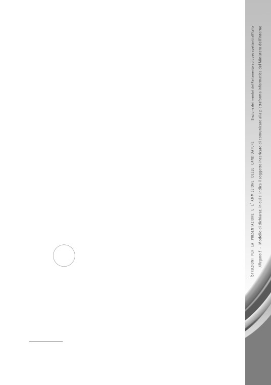
- che il predetto soggetto incaricato utilizza
- ai fini della ricezione delle
necessarie credenziali di accesso alla piattaforma informatica «Trasparenza» del
Ministero dell’interno - la seguente casella di posta elettronica certificata/ordi-
naria
;
- di essere a conoscenza che il soggetto incaricato è tenuto, entro il decimo
giorno antecedente la votazione, a comunicare, con le credenziali di accesso alla
piattaforma, il curriculum vitae e il certificato penale di ciascun candidato
-
già pubblicati sul sito del partito/movimento/lista
- rispettando le modalità
dettate del decreto del Ministro dell’interno del 20 marzo 2019, ivi comprese le
prescrizioni tecniche di cui al relativo Allegato A. Ciò, ai fini della successiva
pubblicazione dei documenti di cui sopra anche nella sezione «Elezioni traspa-
renti» del sito del Ministero dell’interno, ai sensi dell’articolo 1, comma 15, della
legge n. 3/2019.
Firma
AUTENTICAZIONE DELLA FIRMA
A norma dell’articolo 21, comma 2, del d.P.R. 28 dicembre 2000, n. 445, certifico che
è vera e autentica la firma apposta in mia presenza dal sig
,
nato a
il
19
,
domiciliato in
,
da me identificato con il seguente documento:
n
Il sottoscrittore è stato preventivamente ammonito sulla responsabilità penale nella
quale può incorrere in caso di dichiarazione mendace.
, addì
20
Timbro
Firma leggibile (nome e cognome per esteso) e qualifica
del pubblico ufficiale che procede all’autenticazione (2)
(2) Può autenticare la firma del sottoscrittore uno dei soggetti espressamente previsti
dall’articolo 14, comma 1, della legge 21 marzo 1990, n. 53.
131
ALLEGATO
6
Elezione dei membri del Parlamento europeo spettanti all’Italia del 2019
MODELLO DI DICHIARAZIONE
DI PRESENTAZIONE
DI UNA LISTA DI CANDIDATI
CHE NON HA L’ OBBLIGO
DI RACCOGLIERE LE SOTTOSCRIZIONI
(articolo 12, commi quarto, quinto, nono e decimo,
della legge 24 gennaio 1979, n. 18)
133
ALLEGATO
6
Elezione dei membri del Parlamento europeo
Contrassegno
spettanti all’Italia del 2019
della lista
dei candidati
Modello di dichiarazione di presentazione
di una lista di candidati che non ha l’obbligo
Diametro cm 3
di raccogliere le sottoscrizioni
ELEZIONE DEI MEMBRI DEL PARLAMENTO EUROPEO SPETTANTI ALL’ ITALIA DEL 2019
DICHIARAZIONE DI PRESENTAZIONE
DI UNA LISTA DI CANDIDATI
CHE NON HA L’ OBBLIGO
DI RACCOGLIERE LE SOTTOSCRIZIONI
Il sottoscritto
, nella qualità di
, (1)
dichiara di presentare,
per l’elezione dei membri del Parlamento europeo spettanti all’Italia che
si svolgerà nel 2019, nella circoscrizione
,
una lista di n
candidati, nelle persone e nell’ordine seguenti (2):
(1) Indicare se il soggetto che presenta la dichiarazione intende sottoscriverla:
• in qualità di presidente o segretario del partito o gruppo politico;
• come mandatario, incaricato con mandato autenticato da notaio, ai sensi dell’articolo 12,
quinto comma, primo periodo, della legge n. 18/1979;
• come rappresentante, incaricato presso il Ministero dell’interno di effettuare il deposito e
la sottoscrizione della lista, ai sensi dell’articolo 12, quinto comma, secondo periodo, della
legge n. 18/1979;
(2) Ciascuna lista deve comprendere un numero di candidati non inferiore a tre
e non maggiore del numero dei membri da eleggere nella circoscrizione (articolo 12,
ottavo comma, primo periodo, della legge n. 18/1979).
Il numero dei membri da eleggere in ogni circoscrizione viene determinato con il d.P.R.
emanato contemporaneamente a quello di convocazione dei comizi elettorali.
I candidati dello stesso sesso non possono eccedere la metà, con arrotondamento
all’unità; nell’ordine di lista, i primi due candidati devono essere di sesso diverso
(articolo
12, ottavo comma, secondo e terzo periodo, della legge 24 gennaio 1979, n. 18, come modificata
134
dall’articolo 1, comma 2, lettera a), della legge 22 aprile 2014, n. 65).
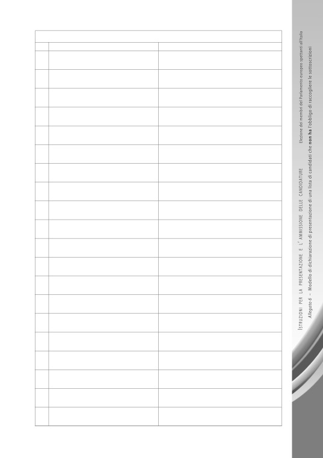
CANDIDATI DELLA LISTA
Nome e cognome
Luogo e data di nascita, codice fiscale
01
02
03
04
05
06
07
08
09
10
11
12
13
14
15
16
17
18
19
20
135
La lista è contraddistinta con il seguente contrassegno:
(3), depositato presso il Ministero dell’Interno.
Ai sensi e per gli effetti previsti dall’articolo 12, nono comma, della legge 24
gennaio 1979, n. 18, dichiara che la lista intende collegarsi con la lista espressione
della minoranza linguistica di lingua
, la quale ha il seguente contras-
segno:
(4).
oppure
Ai sensi e per gli effetti previsti dall’articolo 12, nono comma, della legge 24
gennaio 1979, n. 18, dichiara che la lista è espressione della minoranza linguistica
di lingua
, la quale intende collegarsi con la lista avente il seguente
contrassegno:
(4).
Il sottoscritto nomina:
• delegato effettivo il sig
,
nato a
il
19
,
domiciliato in
;
• delegato supplente il sig
,
nato a
il
19
,
domiciliato in
I predetti delegati possono assistere, su convocazione dell’Ufficio elettorale
circoscrizionale costituito presso la Corte d’appello del capoluogo di circoscrizio-
ne, alle operazioni di sorteggio del numero progressivo da assegnare a ciascuna
lista e hanno la facoltà di designare i rappresentanti della lista medesima presso
ogni ufficio elettorale di sezione, presso gli Uffici elettorali provinciali e presso
l’Ufficio elettorale circoscrizionale.
Alla presente dichiarazione unisce i seguenti documenti:
a) n
dichiarazioni di accettazione della candidatura da parte dei
singoli candidati, firmate ed autenticate;
b) n
dichiarazioni sostitutive attestanti l’insussistenza della situazione
di incandidabilità di ciascun candidato a norma degli articoli 1 e 4 del d.lgs. 31
dicembre 2012, n. 235;
c) n
certificati comprovanti l’iscrizione di ciascun candidato nelle liste
elettorali di un qualsiasi comune della Repubblica;
d) per i candidati che siano cittadini di un altro Stato membro dell’Unione euro-
(3) Descrivere dettagliatamente il contrassegno con il quale viene contraddistinta la
lista dei candidati, come viene riportato in testa a questo modello e come depositato pres-
so il Ministero dell’interno in occasione delle elezioni europee del 2019.
(4) Questo periodo deve essere contenuto nella dichiarazione di presentazione di una
136
lista di candidati soltanto se ricorre il caso.
pea, n
dichiarazioni formali contenenti l’indicazione:
- della cittadinanza;
- del luogo e data di nascita;
- dell’ultimo indirizzo nello Stato membro di origine;
- dell’attuale indirizzo in Italia;
- del Comune o circoscrizione dello Stato membro di origine, nelle cui liste
sono iscritti;
- che non è candidato e che non presenterà la propria candidatura per la stes-
sa elezione del Parlamento europeo in alcun altro Stato membro UE;
- che non è decaduto dal diritto di eleggibilità nello Stato membro di origine
per effetto di una decisione giudiziaria individuale o di una decisione ammi-
nistrativa, purché quest’ultima possa essere oggetto di ricorso giurisdizio-
nale.
Per eventuali comunicazioni da parte dell’Ufficio elettorale circoscrizionale,
il sottoscritto elegge domicilio presso
,
in
, addì
20
(5).
Firma leggibile (nome e cognome per esteso)
e qualifica del sottoscrittore della dichiarazione
di presentazione della lista dei candidati
AUTENTICAZIONE DELLA FIRMA
DEL PRESENTATORE DI UNA LISTA DI CANDIDATI
CHE NON HA L’OBBLIGO DI RACCOGLIERE LE SOTTOSCRIZIONI
A norma dell’articolo 21, del d.P.R. 28 dicembre 2000, n. 445, certifico che è
vera e autentica la firma, apposta in mia presenza dal sig
, da me identificato con il seguente documento :
n
,
nato a
il
19
,
addì
20
Timbro
Firma leggibile (nome e cognome per esteso) e qualifica (6)
del pubblico ufficiale che procede all’autenticazione
(5) Indicare la data in cui la presente dichiarazione viene depositata nella Cancelleria
della Corte d’appello.
(6) Può autenticare la firma del sottoscrittore della dichiarazione di presentazione
della lista uno dei soggetti espressamente previsti dall’articolo 14, comma 1, della legge 21
marzo 1990, n. 53.
137
ALLEGATO
7
Elezione dei membri del Parlamento europeo spettanti all’Italia del 2019
MODELLO DI DICHIARAZIONE
DI PRESENTAZIONE
DI UNA LISTA DI CANDIDATI
CHE HA L’ OBBLIGO
DI RACCOGLIERE LE SOTTOSCRIZIONI
ATTO PRINCIPALE
(*)
(articolo 12, commi secondo, terzo, nono e decimo,
della legge 24 gennaio 1979, n. 18)
(*) Questo modello trova la sua prosecuzione nel modello di atto separato di cui al
successivo allegato 7-bis
139
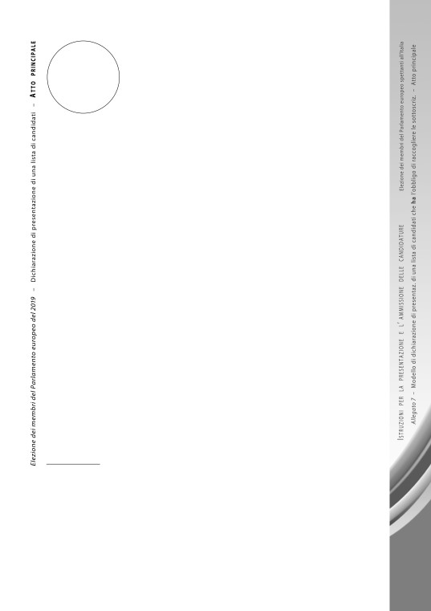
ALLEGATO
7
Elezione dei membri del Parlamento europeo
Contrassegno
spettanti all’Italia del 2019
della lista
dei candidati
Modello di dichiarazione di presentazione
di una lista di candidati che ha l’obbligo
Diametro cm 3
di raccogliere le sottoscrizioni
ATTO PRINCIPALE
ELEZIONE DEI MEMBRI DEL PARLAMENTO EUROPEO SPETTANTI ALL’ ITALIA DEL 2019
DICHIARAZIONE DI PRESENTAZIONE
DI UNA LISTA DI CANDIDATI
CHE HA L’ OBBLIGO
DI RACCOGLIERE LE SOTTOSCRIZIONI
I sottoscritti elettori, iscritti nelle liste elettorali dei Comuni compresi nella/e
regione/i che fa/fanno parte della circoscrizione
per l’elezione
dei membri del Parlamento europeo spettanti all’Italia del 2019, nel numero
di
, risultante dalle firme, debitamente autenticate, contenute in que-
sto foglio e in numero
atti separati nonché da numero
dichiarazioni rese nelle forme indicate dal’articolo 28, quarto comma, del testo
unico 16 maggio 1960, n. 570, e successive modificazioni,
DICHIARANO
di presentare una lista di candidati nella predetta circoscrizione nelle persone
e nell’ordine seguenti (1):
(1) Ciascuna lista deve comprendere un numero di candidati non inferiore a tre
e non maggiore del numero dei membri da eleggere nella circoscrizione (articolo 12,
ottavo comma, primo periodo, della legge n. 18/1979).
Il numero dei membri da eleggere in ogni circoscrizione viene determinato con il d.P.R.
emanato contemporaneamente a quello di convocazione dei comizi elettorali.
I candidati dello stesso sesso non possono eccedere la metà, con arrotondamento
all’unità; nell’ordine di lista, i primi due candidati devono essere di sesso diverso
(articolo
12, ottavo comma, secondo e terzo periodo, della legge 24 gennaio 1979, n. 18, come modificata
dall’articolo 1, comma 2, lettera a), della legge 22 aprile 2014, n. 65).
141
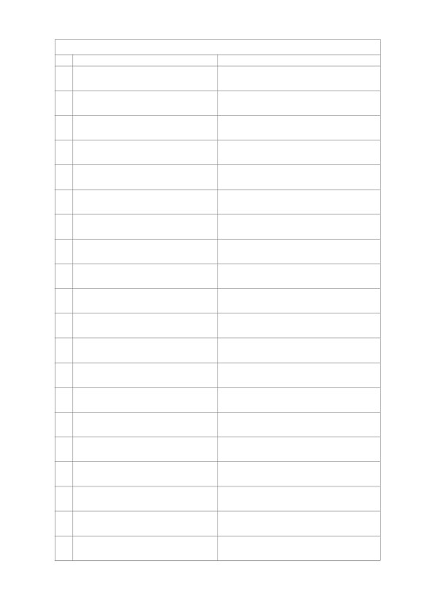
CANDIDATI DELLA LISTA
Nome e cognome
Luogo e data di nascita, codice fiscale
01
02
03
04
05
06
07
08
09
10
11
12
13
14
15
16
17
18
19
20
142
La lista è contraddistinta con il seguente contrassegno:
(2), depositato presso il Ministero dell’interno.
Ai sensi e per gli effetti previsti dall’articolo 12, nono comma, della legge 24
gennaio 1979, n. 18, dichiarano che la lista intende collegarsi con la lista espres-
sione della minoranza linguistica di lingua
, la quale ha il seguente
contrassegno:
(3).
oppure
Ai sensi e per gli effetti previsti dall’articolo 12, nono comma, della legge 24
gennaio 1979, n. 18, dichiarano che la lista è espressione della minoranza lingui-
stica di lingua
, la quale intende collegarsi con la lista avente il se-
guente contrassegno:
(3).
I sottoscritti nominano:
• delegato effettivo il sig
,
nato a
il
19
,
domiciliato in
;
• delegato supplente il sig
,
nato a
il
19
,
domiciliato in
I predetti delegati possono assistere, su convocazione dell’Ufficio elettorale
circoscrizionale costituito presso la Corte d’appello del capoluogo di circoscrizio-
ne, alle operazioni di sorteggio del numero progressivo da assegnare a ciascuna
lista e hanno la facoltà di designare i rappresentanti della lista medesima presso
ogni ufficio elettorale di sezione, presso gli Uffici elettorali provinciali e presso
l’Ufficio elettorale circoscrizionale.
Alla presente dichiarazione uniscono i seguenti documenti:
a) n
certificati, dei quali
collettivi, a dimostrazione che i
sottoscritti presentatori della lista sono iscritti nelle liste elettorali di comuni
delle regioni
comprese nell’ambito territoriale della circoscrizione;
b) n
dichiarazioni di accettazione della candidatura da parte dei
singoli candidati, firmate ed autenticate;
c) n
dichiarazioni sostitutive attestanti l’insussistenza della situazione
(2) Descrivere dettagliatamente il contrassegno con il quale viene contraddistinta la
lista dei candidati, come viene riportato in testa a questo modello e come depositato pres-
so il Ministero dell’interno in occasione delle elezioni europee del 2019.
(3) Questo periodo deve essere contenuto nella dichiarazione di presentazione di una
lista di candidati soltanto se ricorre il caso.
143
di incandidabilità di ciascun candidato a norma degli articoli 1 e 4 del d.lgs. 31
dicembre 2012, n. 235;
d)
n
certificati comprovanti l’iscrizione di ciascun candidato nelle liste
elettorali di un qualsiasi comune della Repubblica;
e)
per i candidati che siano cittadini di un altro Stato membro dell’Unione euro-
pea, n
dichiarazioni formali contenenti l’indicazione:
- della cittadinanza;
- del luogo e data di nascita;
- dell’ultimo indirizzo nello Stato membro di origine;
- dell’attuale indirizzo in Italia;
- del Comune o circoscrizione dello Stato membro di origine, nelle cui liste
sono iscritti;
- che non è candidato e che non presenterà la propria candidatura per la stes-
sa elezione del Parlamento europeo in alcun altro Stato membro UE;
- che non è decaduto dal diritto di eleggibilità nello Stato membro di origine
per effetto di una decisione giudiziaria individuale o di una decisione ammi-
nistrativa, purché quest’ultima possa essere oggetto di ricorso giurisdizio-
nale.
Per eventuali comunicazioni da parte dell’Ufficio elettorale circoscrizionale,
i sottoscritti eleggono domicilio presso il sig
,
in
, addì
20
(4)
ELENCO DEI SOTTOSCRITTORI DELLA LISTA DEI CANDIDATI
I sottoscritti elettori dichiarano di non aver sottoscritto nessun’altra dichiarazione di
presentazione di lista di candidati per l’elezione dei membri del Parlamento europeo
spettanti all’Italia.
Ai sensi dell’articolo 13 del regolamento generale sulla protezione dei dati
(regola-
mento UE 2016/679 del Parlamento europeo e del Consiglio dell’Unione europea del 27
aprile 2016), i sottoscritti elettori sono informati che il promotore / i promotori della sotto-
scrizione è / sono
(5)
con sede in
Sono, altresì, informati che i dati compresi nella presente dichiarazione, di cui è facol-
tativo il conferimento, sono di rilevante interesse pubblico
- ai sensi dell’articolo 9, para-
grafo 2, lettera g), del citato regolamento UE 2016/679, del considerando n. 56 premesso
(4) Indicare la data in cui la presente dichiarazione viene depositata alla cancelleria
della Corte d’appello.
(5) Indicare la denominazione del partito o gruppo politico oppure i nomi delle per-
144
sone che promuovono la sottoscrizione.
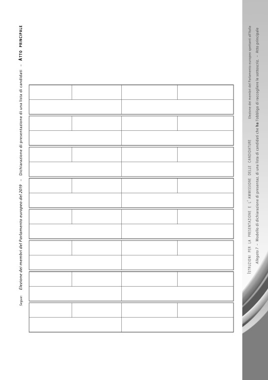
allo stesso atto e dell’articolo 2-sexies, comma 2, lettera f), del d.lgs. 30 giugno 2003, n. 196
- e saranno utilizzati per le sole finalità previste dalla legge 24 gennaio 1979, n. 18, e dal
testo unico di cui al d.P.R. 30 marzo 1957, n. 361, secondo modalità a ciò strettamente
collegate.
I dati saranno comunicati all’Ufficio elettorale circoscrizionale per l’elezione dei mem-
bri del Parlamento europeo spettanti all’Italia, costituito presso la Corte d’appello del capo-
luogo di circoscrizione, presso il quale l’interessato potrà esercitare i diritti previsti dagli
articoli da 15 a 22 del predetto regolamento.
Nome
Cognome
Luogo e data di nascita
Comune di iscrizione nelle liste
Firma del sottoscrittore
Estremi del documento di identificazione
Nome
Cognome
Luogo e data di nascita
Comune di iscrizione nelle liste
Firma del sottoscrittore
Estremi del documento di identificazione
Nome
Cognome
Luogo e data di nascita
Comune di iscrizione nelle liste
Firma del sottoscrittore
Estremi del documento di identificazione
Nome
Cognome
Luogo e data di nascita
Comune di iscrizione nelle liste
Firma del sottoscrittore
Estremi del documento di identificazione
Nome
Cognome
Luogo e data di nascita
Comune di iscrizione nelle liste
Firma del sottoscrittore
Estremi del documento di identificazione
Nome
Cognome
Luogo e data di nascita
Comune di iscrizione nelle liste
Firma del sottoscrittore
Estremi del documento di identificazione
Nome
Cognome
Luogo e data di nascita
Comune di iscrizione nelle liste
Firma del sottoscrittore
Estremi del documento di identificazione
Nome
Cognome
Luogo e data di nascita
Comune di iscrizione nelle liste
Firma del sottoscrittore
Estremi del documento di identificazione
La firma qui apposta da ciascuno dei sottoscrittori vale anche come consenso, a norma
degli articoli 6, 7 e 9 del regolamento UE 2016/679 del 27 aprile 2016.
(seguono le sottoscrizioni degli altri presentatori della lista di candidati)
￫
145
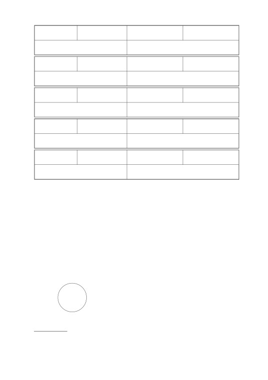
Nome
Cognome
Luogo e data di nascita
Comune di iscrizione nelle liste
Firma del sottoscrittore
Estremi del documento di identificazione
Nome
Cognome
Luogo e data di nascita
Comune di iscrizione nelle liste
Firma del sottoscrittore
Estremi del documento di identificazione
Nome
Cognome
Luogo e data di nascita
Comune di iscrizione nelle liste
Firma del sottoscrittore
Estremi del documento di identificazione
Nome
Cognome
Luogo e data di nascita
Comune di iscrizione nelle liste
Firma del sottoscrittore
Estremi del documento di identificazione
Nome
Cognome
Luogo e data di nascita
Comune di iscrizione nelle liste
Firma del sottoscrittore
Estremi del documento di identificazione
La firma qui apposta da ciascuno dei sottoscrittori vale anche come consenso, a norma
degli articoli 6, 7 e 9 del regolamento UE 2016/679 del 27 aprile 2016.
AUTENTICAZIONE DELLE FIRME DEI SOTTOSCRITTORI
A norma dell’articolo 21, comma 2, del d.P.R. 28 dicembre 2000, n. 445, certi-
fico che sono vere e autentiche le firme apposte in mia presenza dagli elettori
sopra indicati [specificare il numero degli elettori in cifre e in lettere:
], da me identificati con il documento segnato a margine
di ciascuno.
,
addì
20
Timbro
Firma leggibile (nome e cognome per esteso) e qualifica (6)
del pubblico ufficiale che procede all’autenticazione
(6) Può autenticare le firme dei sottoscrittori uno dei soggetti espressamente previsti
dall’articolo 14, comma 1, della legge 21 marzo 1990, n. 53, o l’autorità diplomatica o
146
consolare.
ALLEGATO
7-BIS
Elezione dei membri del Parlamento europeo spettanti all’Italia del 2019
MODELLO DI DICHIARAZIONE
DI PRESENTAZIONE
DI UNA LISTA DI CANDIDATI
CHE HA L’ OBBLIGO
DI RACCOGLIERE LE SOTTOSCRIZIONI
ATTO SEPARATO
(*)
(articolo 12, commi secondo, terzo, nono e decimo,
della legge 24 gennaio 1979, n. 18)
(*) Questo modello rappresenta la prosecuzione del modello di atto principale di cui
al precedente allegato 7.
147
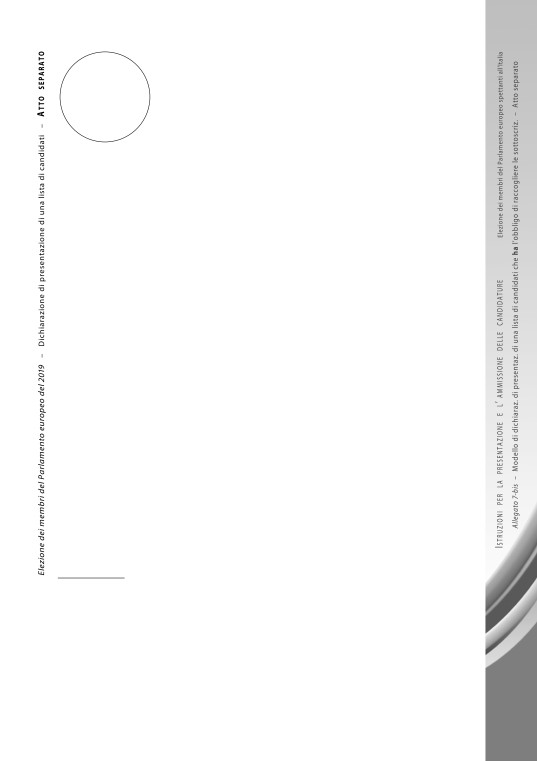
ALLEGATO
7-BIS
Elezione dei membri del Parlamento europeo
Contrassegno
spettanti all’Italia del 2019
della lista
dei candidati
Modello di dichiarazione di presentazione
di una lista di candidati che ha l’obbligo
Diametro cm 3
di raccogliere le sottoscrizioni
ATTO SEPARATO
ELEZIONE DEI MEMBRI DEL PARLAMENTO EUROPEO SPETTANTI ALL’ ITALIA DEL 2019
DICHIARAZIONE DI PRESENTAZIONE
DI UNA LISTA DI CANDIDATI
CHE HA L’ OBBLIGO
DI RACCOGLIERE LE SOTTOSCRIZIONI
ELENCO N
DEI SOTTOSCRITTORI,
ISCRITTI NELLE LISTE ELETTORALI DI COMUNI DELLA/E REGIONE/I
COMPRESA/E NELLA CIRCOSCRIZIONE ELETTORALE
,
DELLA LISTA
(1) COMPOSTA DAI SEGUENTI CANDIDATI
NELLE PERSONE E NELL’ ORDINE SEGUENTI :
(1) Ciascuna lista deve comprendere un numero di candidati non inferiore a tre
e non maggiore del numero dei membri da eleggere nella circoscrizione (articolo 12,
ottavo comma, primo periodo, della legge n. 18/1979).
Il numero dei membri da eleggere in ogni circoscrizione viene determinato con il d.P.R.
emanato contemporaneamente a quello di convocazione dei comizi elettorali.
I candidati dello stesso sesso non possono eccedere la metà, con arrotondamento
all’unità; nell’ordine di lista, i primi due candidati devono essere di sesso diverso
(articolo
12, ottavo comma, secondo e terzo periodo, della legge 24 gennaio 1979, n. 18, come modificata
dall’articolo 1, comma 2, lettera a), della legge 22 aprile 2014, n. 65).
149
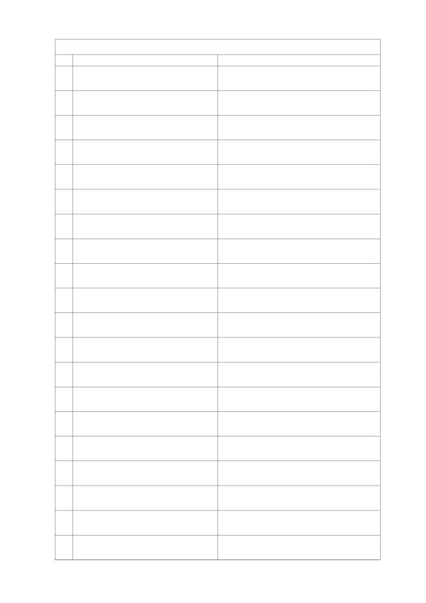
CANDIDATI DELLA LISTA
Nome e cognome
Luogo e data di nascita, codice fiscale
01
02
03
04
05
06
07
08
09
10
11
12
13
14
15
16
17
18
19
20
150
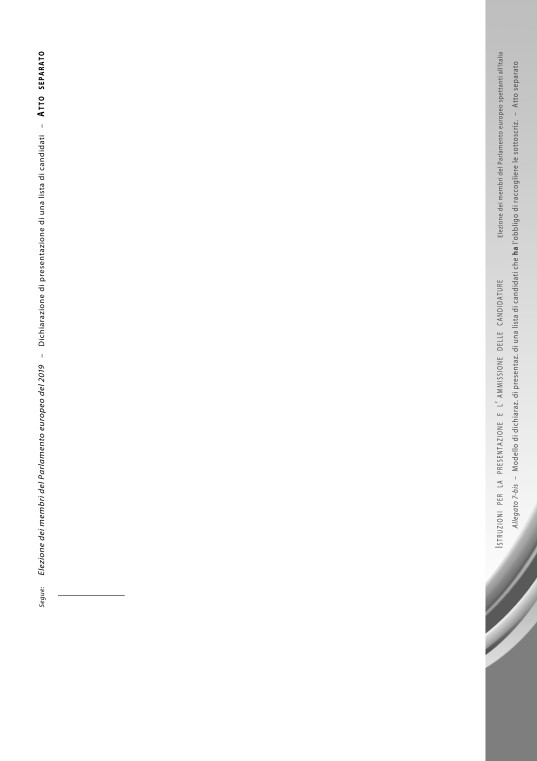
La lista è contraddistinta con il seguente contrassegno:
(2), depositato presso il Ministero dell’interno.
Ai sensi e per gli effetti previsti dall’articolo 12, nono comma, della legge 24
gennaio 1979, n. 18, dichiarano che la lista intende collegarsi con la lista espres-
sione della minoranza linguistica di lingua
, la quale ha il seguente
contrassegno:
(3).
oppure
Ai sensi e per gli effetti previsti dall’articolo 12, nono comma, della legge 24
gennaio 1979, n. 18, dichiarano che la lista è espressione della minoranza lingui-
stica di lingua
, la quale intende collegarsi con la lista avente il se-
guente contrassegno:
(3).
ELENCO DEI SOTTOSCRITTORI DELLA LISTA DEI CANDIDATI
I sottoscritti elettori dichiarano di non aver sottoscritto nessun’altra dichiarazione di
presentazione di lista di candidati per l’elezione dei membri del Parlamento europeo
spettanti all’Italia.
Ai sensi dell’articolo 13 del regolamento generale sulla protezione dei dati
(regola-
mento UE 2016/679 del Parlamento europeo e del Consiglio dell’Unione europea del 27
aprile 2016), i sottoscritti elettori sono informati che il promotore / i promotori della sotto-
scrizione è / sono
(4)
con sede in
Sono, altresì, informati che i dati compresi nella presente dichiarazione, di cui è facol-
tativo il conferimento, sono di rilevante interesse pubblico
- ai sensi dell’articolo 9, para-
grafo 2, lettera g), del citato regolamento UE 2016/679, del considerando n. 56 premesso
allo stesso atto e dell’articolo 2-sexies, comma 2, lettera f), del d.lgs. 30 giugno 2003, n. 196
- e saranno utilizzati per le sole finalità previste dalla legge 24 gennaio 1979, n. 18, e dal
testo unico di cui al d.P.R. 30 marzo 1957, n. 361, secondo modalità a ciò strettamente
collegate.
I dati saranno comunicati all’Ufficio elettorale circoscrizionale per l’elezione dei mem-
bri del Parlamento europeo spettanti all’Italia, costituito presso la Corte d’appello del capo-
luogo di circoscrizione, presso il quale l’interessato potrà esercitare i diritti previsti dagli
articoli da 15 a 22 del predetto regolamento.
(2) Descrivere dettagliatamente il contrassegno con il quale viene contraddistinta la
lista dei candidati, come viene riportato in testa a questo modello e come depositato pres-
so il Ministero dell’interno in occasione delle elezioni europee del 2019.
(3) Questo periodo deve essere contenuto nella dichiarazione di presentazione di una
lista di candidati soltanto se ricorre il caso.
(4) Indicare la denominazione del partito o gruppo politico oppure i nomi delle perso-
ne che promuovono la sottoscrizione.
151
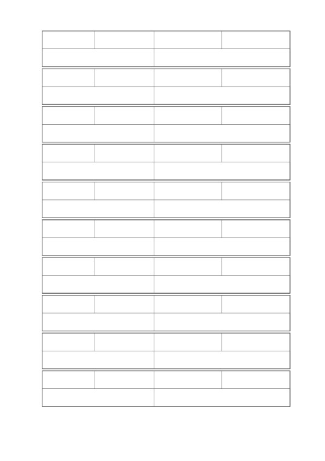
Nome
Cognome
Luogo e data di nascita
Comune di iscrizione nelle liste
Firma del sottoscrittore
Estremi del documento di identificazione
Nome
Cognome
Luogo e data di nascita
Comune di iscrizione nelle liste
Firma del sottoscrittore
Estremi del documento di identificazione
Nome
Cognome
Luogo e data di nascita
Comune di iscrizione nelle liste
Firma del sottoscrittore
Estremi del documento di identificazione
Nome
Cognome
Luogo e data di nascita
Comune di iscrizione nelle liste
Firma del sottoscrittore
Estremi del documento di identificazione
Nome
Cognome
Luogo e data di nascita
Comune di iscrizione nelle liste
Firma del sottoscrittore
Estremi del documento di identificazione
Nome
Cognome
Luogo e data di nascita
Comune di iscrizione nelle liste
Firma del sottoscrittore
Estremi del documento di identificazione
Nome
Cognome
Luogo e data di nascita
Comune di iscrizione nelle liste
Firma del sottoscrittore
Estremi del documento di identificazione
Nome
Cognome
Luogo e data di nascita
Comune di iscrizione nelle liste
Firma del sottoscrittore
Estremi del documento di identificazione
Nome
Cognome
Luogo e data di nascita
Comune di iscrizione nelle liste
Firma del sottoscrittore
Estremi del documento di identificazione
Nome
Cognome
Luogo e data di nascita
Comune di iscrizione nelle liste
Firma del sottoscrittore
Estremi del documento di identificazione
La firma qui apposta da ciascuno dei sottoscrittori vale anche come consenso, a norma
degli articoli 6, 7 e 9 del regolamento UE 2016/679 del 27 aprile 2016.
152
(seguono le sottoscrizioni degli altri presentatori della lista di candidati)
￫
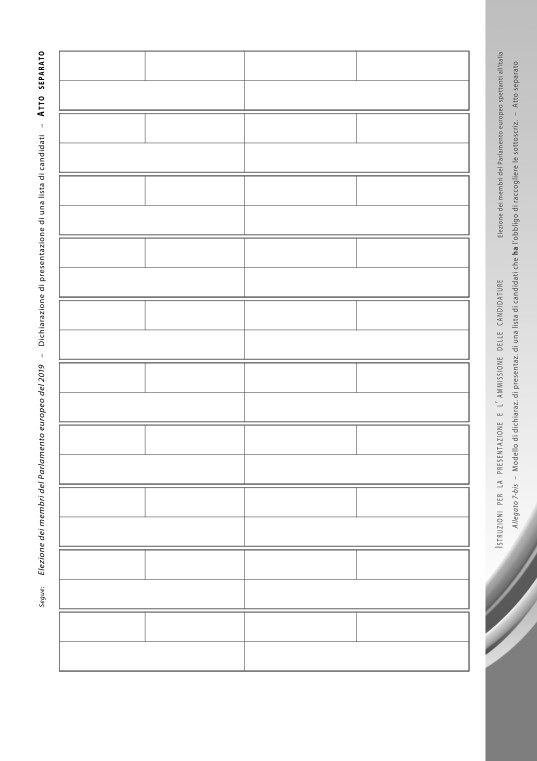
Nome
Cognome
Luogo e data di nascita
Comune di iscrizione nelle liste
Firma del sottoscrittore
Estremi del documento di identificazione
Nome
Cognome
Luogo e data di nascita
Comune di iscrizione nelle liste
Firma del sottoscrittore
Estremi del documento di identificazione
Nome
Cognome
Luogo e data di nascita
Comune di iscrizione nelle liste
Firma del sottoscrittore
Estremi del documento di identificazione
Nome
Cognome
Luogo e data di nascita
Comune di iscrizione nelle liste
Firma del sottoscrittore
Estremi del documento di identificazione
Nome
Cognome
Luogo e data di nascita
Comune di iscrizione nelle liste
Firma del sottoscrittore
Estremi del documento di identificazione
Nome
Cognome
Luogo e data di nascita
Comune di iscrizione nelle liste
Firma del sottoscrittore
Estremi del documento di identificazione
Nome
Cognome
Luogo e data di nascita
Comune di iscrizione nelle liste
Firma del sottoscrittore
Estremi del documento di identificazione
Nome
Cognome
Luogo e data di nascita
Comune di iscrizione nelle liste
Firma del sottoscrittore
Estremi del documento di identificazione
Nome
Cognome
Luogo e data di nascita
Comune di iscrizione nelle liste
Firma del sottoscrittore
Estremi del documento di identificazione
Nome
Cognome
Luogo e data di nascita
Comune di iscrizione nelle liste
Firma del sottoscrittore
Estremi del documento di identificazione
La firma qui apposta da ciascuno dei sottoscrittori vale anche come consenso, a norma
degli articoli 6, 7 e 9 del regolamento UE 2016/679 del 27 aprile 2016.
153
(seguono le sottoscrizioni degli altri presentatori della lista di candidati)
￫
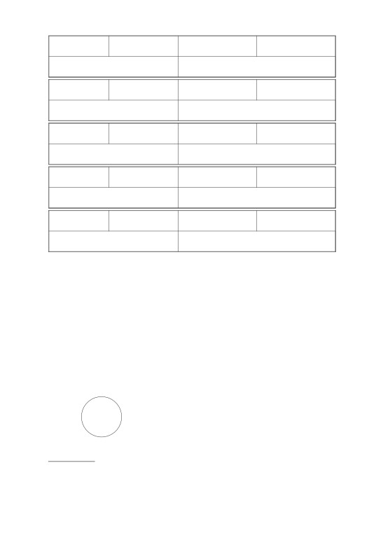
Nome
Cognome
Luogo e data di nascita
Comune di iscrizione nelle liste
Firma del sottoscrittore
Estremi del documento di identificazione
Nome
Cognome
Luogo e data di nascita
Comune di iscrizione nelle liste
Firma del sottoscrittore
Estremi del documento di identificazione
Nome
Cognome
Luogo e data di nascita
Comune di iscrizione nelle liste
Firma del sottoscrittore
Estremi del documento di identificazione
Nome
Cognome
Luogo e data di nascita
Comune di iscrizione nelle liste
Firma del sottoscrittore
Estremi del documento di identificazione
Nome
Cognome
Luogo e data di nascita
Comune di iscrizione nelle liste
Firma del sottoscrittore
Estremi del documento di identificazione
La firma qui apposta da ciascuno dei sottoscrittori vale anche come consenso, a norma
degli articoli 6, 7 e 9 del regolamento UE 2016/679 del 27 aprile 2016.
AUTENTICAZIONE DELLE FIRME DEI SOTTOSCRITTORI
A norma dell’articolo 21, comma 2, del d.P.R. 28 dicembre 2000, n. 445, certi-
fico che sono vere e autentiche le firme apposte in mia presenza dagli elettori
sopra indicati [specificare il numero degli elettori in cifre e in lettere:
], da me identificati con il documento segnato a margine
di ciascuno.
,
addì
20
Timbro
Firma leggibile (nome e cognome per esteso) e qualifica (5)
del pubblico ufficiale che procede all’autenticazione
(5) Può autenticare le firme dei sottoscrittori uno dei soggetti espressamente previsti
dall’articolo 14, comma 1, della legge 21 marzo 1990, n. 53, o l’autorità diplomatica o con-
154
solare.
ALLEGATO
8
Elezione dei membri del Parlamento europeo spettanti all’Italia del 2019
MODELLO DI DICHIARAZIONE
DI ACCETTAZIONE DELLA CANDIDATURA
DA PARTE DEL CANDIDATO
(articolo 12, settimo comma, della legge 24 gennaio 1979, n. 18
155
ALLEGATO
8
Elezione dei membri del Parlamento europeo
spettanti all’Italia del 2019
Modello di dichiarazione
di accettazione della candidatura
da parte del candidato
ELEZIONE DEI MEMBRI DEL PARLAMENTO EUROPEO SPETTANTI ALL’ ITALIA DEL 2019
DICHIARAZIONE DI ACCETTAZIONE DELLA CANDIDATURA
DA PARTE DEL CANDIDATO
. . . l. . . sottoscritt
,
(nome, cognome, eventuale pseudonimo)
nat. . . a
il
,
codice fiscale
,
DICHIARA
di accettare la candidatura nella lista recante il contrassegno
(1),
per l’elezione dei membri del Parlamento europeo spettanti all’Italia del 2019 nella
circoscrizione
Il sottoscritto dichiara altresì:
• di non aver accettato la candidatura in nessun’altra lista della stessa circoscrizione;
• di essersi presentato come candidato anche in liste con lo stesso contrassegno nelle
seguenti altre circoscrizioni:
-
;
-
;
-
;
-
;
oppure
(1)
Descrivere dettagliatamente il contrassegno con il quale viene contraddistinta
la lista dei candidati, come depositato presso il Ministero dell’interno in occasione dell’ele-
zione dei membri del Parlamento europeo spettanti all’Italia del 2019.
156
• di non essersi presentato come candidato in nessuna lista con lo stesso contrasse-
gno in altre circoscrizioni.
Firma leggibile del/della candidato/a
AUTENTICAZIONE DELLA FIRMA (2)
A norma dell’articolo 21, comma 2, del d.P.R. 28 dicembre 2000, n. 445, certifico
che è vera e autentica la firma apposta in mia presenza alla sopra estesa dichiarazione
di accettazione della candidatura dal sig
,
nato a
il
19
,
residente in
,
da me identificato con il seguente documento:
n
Il sottoscrittore è stato preventivamente ammonito sulla responsabilità penale
nella quale può incorrere in caso di dichiarazione mendace.
, addì
20
Timbro
Firma leggibile (nome e cognome per esteso) e qualifica
del pubblico ufficiale che procede all’autenticazione
(2)
L’autenticazione della firma deve essere effettuata da uno dei soggetti previsti
dall’articolo 14, comma 1, della legge 21 marzo 1990, n. 53, o dall’autorità diplomatica
o consolare.
157
ALLEGATO
8-BIS
Elezione dei membri del Parlamento europeo spettanti all’Italia del 2019
MODELLO DI DICHIARAZIONE DEL CANDIDATO
DI ALTRO STATO UE RESIDENTE IN ITALIA
(articolo 2, comma 6, del decreto-legge 24 giugno 1994, n. 408,
convertito, con modificazioni, dalla legge 3 agosto 1994, n. 483,
come modificato dall’articolo 1, comma 1, del d.lgs. 13 febbraio 2014, n. 11)
159
ALLEGATO
8-BIS
Elezione dei membri del Parlamento europeo
spettanti all’Italia del 2019
Modello di dichiarazione del candidato
di altro Stato UE residente in Italia
ELEZIONE DEI MEMBRI DEL PARLAMENTO EUROPEO SPETTANTI ALL’ ITALIA DEL 2019
DICHIARAZIONE DEL CANDIDATO
DI ALTRO STATO UE RESIDENTE IN ITALIA
(Articolo 2, comma 6, del decreto-legge 24 giugno 1994, n. 408,
convertito, con modificazioni, dalla legge 3 agosto 1994, n. 483,
come modificato dall’articolo 1, comma 1, del d.lgs. 13 febbraio 2014, n. 11)
1. Con il presente modulo il candidato dichiara che, in qualità di cittadino di un
altro Stato membro dell'Unione europea, non si candida alle elezioni del Parlamento
europeo in uno Stato membro diverso da quello in cui risiede attualmente e che non
è escluso dall'esercizio del diritto di eleggibilità nel suo Stato membro di origine.
Questa dichiarazione sarà trasmessa per verifica all'autorità competente dello Stato
membro di origine.
By this form you declare that, as a citizen of another Member State of the
European Union, you are not standing as a candidate for election to the European
Parliament in a Member State other than the one in which you are currently resident
and that you are not excluded from the right to stand for elections in your home
Member State. This declaration will be sent to the relevant authority of your home
Member State for verification.
a. Cognome / Family Name:
b. Nome/i / Given name(s):
c.
Indirizzo completo nello Stato membro di residenza / Full address in
Member State of residence:
d. Cittadinanza / Nationality:
e.
Data di nascita / Date of birth:
f.
Luogo di nascita / Place of birth:
g.
Ultimo indirizzo e luogo di residenza nello Stato membro di origine e, se
diversa, collettività locale o circoscrizione nelle cui liste elettorali il candi-
dato è stato iscritto (se disponibile) / Last address and place of residence
in the home Member State and, if different, the locality or constituency in
which his / her name was entered on the electoral roll (where available):
160
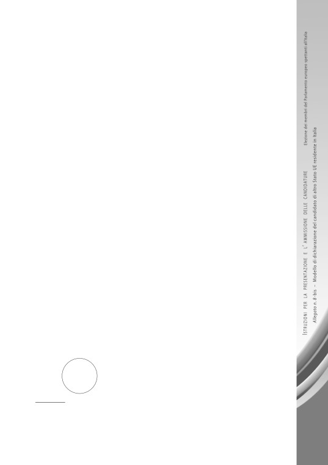
h. Numero di identificazione personale o equivalente nello Stato membro di
cittadinanza (se disponibile) / Personal identification number or equiva-
lent in the Member state of nationality (where available):
Firma del candidato / Signature by the candidate
2.
Dichiaro di non essere escluso dall'esercizio del diritto di eleggibilità nel mio
Stato membro di origine e di non candidarmi alle elezioni del Parlamento europeo in
uno Stato membro diverso da quello in cui risiedo attualmente.
Dichiaro inoltre di avere accettato la mia candidatura e di non essere a cono-
scenza di ostacoli alla mia elezione o di rimuovere tali ostacoli prima della data delle
elezioni del Parlamento europeo.
I hereby declare that I am not excluded from the right to stand for elections
in my home Member State and that I am not standing as a candidate for election to
the European Parliament in a Member State other than the one in which I am currently
resident.
I also declare to have accepted my candidacy and to be aware of no obsta-
cles to my election or to remove such obstacles before the European Parliament elec-
tion day.
Data / Date
Firma del candidato / Signature by the candidate
AUTENTICAZIONE DELLE FIRME (1)
A norma dell’articolo 21, comma 2, del d.P.R. 28 dicembre 2000, n. 445, certifico
che sono vere e autentiche le firme apposte in mia presenza dal sig
, nato a
il
19. . .
, residente in
,
da me identificato con il seguente documento:
n
Il sottoscrittore è stato preventivamente ammonito sulla responsabilità penale
nella quale può incorrere in caso di dichiarazione mendace.
, addì
20
Timbro
Firma leggibile (nome e cognome per esteso) e qualifica
del pubblico ufficiale che procede all’autenticazione
(1)
L’autenticazione delle firme deve essere effettuata da uno dei soggetti previsti
dall’articolo 14, comma 1, della legge 21 marzo 1990, n. 53, o dall’autorità diplomatica
o consolare.
161
ALLEGATO
9
Elezione dei membri del Parlamento europeo spettanti all’Italia del 2019
MODELLO DI DICHIARAZIONE SOSTITUTIVA
DEL CANDIDATO
ATTESTANTE L’ INSUSSISTENZA
DELLA CONDIZIONE DI INCANDIDABILITÀ
(articolo 5, comma 2, del d.lgs. 31 dicembre 2012, n. 235)
163
ALLEGATO
9
Elezione dei membri del Parlamento europeo
spettanti all’Italia del 2019
Modello di dichiarazione sostitutiva del candidato
attestante l’insussistenza della condizione di incandidabilità
ELEZIONE DEI MEMBRI DEL PARLAMENTO EUROPEO SPETTANTI ALL’ ITALIA DEL 2019
DICHIARAZIONE SOSTITUTIVA DEL CANDIDATO
ATTESTANTE L’ INSUSSISTENZA
DELLA CONDIZIONE DI INCANDIDABILITÀ
. . . l. . . sottoscritt
,
(nome, cognome, eventuale pseudonimo)
nat. . . a
il
,
codice fiscale
,
a norma degli articoli 1, 4 e 5, comma 2, del d.lgs. 31 dicembre 2012, n. 235,
DICHIARA
di non trovarsi in alcuna situazione di incandidabilità prevista dal citato d.lgs.
n. 235/2012 per l’elezione dei membri del Parlamento europeo che avrà luogo
nel 2019.
In particolare attesta:
a) di non aver riportato condanne definitive a pene superiori a due anni di reclusione
per i delitti, consumati o tentati, previsti dall’articolo 51, commi 3-bis e 3-quater,
del codice di procedura penale;
b) di non aver riportato condanne definitive a pene superiori a due anni di reclu-
sione per i delitti, consumati o tentati, previsti nel libro II, titolo II, capo I, del codice
penale;
164
c) di non aver riportato condanne definitive a pene superiori a due anni di reclusione
per delitti non colposi, consumati o tentati, per i quali sia prevista la pena della
reclusione non inferiore nel massimo a quattro anni, determinata ai sensi dell’arti-
colo 278 del codice di procedura penale.
, addì
20
Firma leggibile del/la candidato/a (1)
(1)
Trattandosi di una dichiarazione sostitutiva resa dal candidato /dalla candidata ai
sensi dell’articolo
46 del d.P.R. n. 445/2000 e dell’articolo
2, comma 2, del d.lgs.
n. 235/2012, non è richiesta alcuna autenticazione della firma del candidato / della can-
didata che effettua tale dichiarazione.
165
ALLEGATO
10
Elezione dei membri del Parlamento europeo spettanti all’Italia del 2019
MODELLO DI VERBALE DI RICEVUTA
DELLA PRESENTAZIONE
DI UNA LISTA DI CANDIDATI
PRESSO LA CANCELLERIA DELLA CORTE D’ APPELLO
DEL CAPOLUOGO DI CIRCOSCRIZIONE
IN CUI HA SEDE
L’UFFICIO ELETTORALE CIRCOSCRIZIONALE
167
ALLEGATO
10
Elezione dei membri del Parlamento europeo
spettanti all’Italia del 2019
Modello di verbale di ricevuta
della presentazione di una lista di candidati
presso la Cancelleria della Corte d’appello
del capoluogo di circoscrizione
in cui ha sede l’Ufficio elettorale circoscrizionale
ELEZIONE DEI MEMBRI DEL PARLAMENTO EUROPEO SPETTANTI ALL’ ITALIA DEL 2019
CIRCOSCRIZIONE
CANCELLERIA DELLA CORTE D’ APPELLO DI
VERBALE DI RICEVUTA
DELLA PRESENTAZIONE DI UNA LISTA DI CANDIDATI
L’anno duemila
, addì
del mese di
, alle ore
,
si è presentato presso questa Cancelleria il sig
il quale ha dichiarato di presentare una lista di candidati per l’elezione dei mem-
bri del Parlamento europeo spettanti all’italia del
2019 nella circoscrizione
contraddistinta con il seguente contrassegno:
,
depositato presso il Ministero dell’Interno ai sensi dell’articolo 11 della legge 24
gennaio 1979, n. 18.
Poiché dal predetto Ministero è stato comunicato che, a depositare la lista
avente il contrassegno
,
sarebbe stato il sig
oppure il sig
,
il sottoscritto procede a identificare il presentatore della lista e accerta che il
168
medesimo è il sig
,
come risulta dalla comunicazione pervenuta dal Ministero dell’Interno e che
viene allegata al presente verbale.
oppure:
e accerta che il medesimo è il sig
,
il cui nome non è tra quelli indicati nella comunicazione pervenuta dal Ministero
dell’Interno e che si allega al presente verbale.
Il predetto sig
ha depositato una lista di candidati per l’elezione dei membri del Parlamento
europeo spettanti all’Italia del 2019, allegando la seguente documentazione:
a) certificati individuali e certificati collettivi comprovanti la condizione di elet-
tori, in Comuni delle Regioni appartenenti alla predetta circoscrizione, dei sot-
toscrittori della dichiarazione di presentazione della lista dei candidati
(solo
per le liste tenute alla raccolta delle sottoscrizioni);
b) dichiarazioni di accettazione delle candidature;
c) dichiarazioni sostitutive attestanti l’insussistenza della situazione di incandi-
dabilità dei candidati;
d) certificati comprovanti l’iscrizione dei candidati nelle liste elettorali di un qual-
siasi comune della Repubblica;
e) dichiarazioni formali attestanti il godimento dell’elettorato passivo previsto
dall’articolo 2, comma 6, del decreto-legge 24 giugno 1994, n. 408, convertito,
con modificazioni, dalla legge 3 agosto 1994, n. 483, come modificato dal
d.lgs. 13 febbraio 2014, n. 11.
Le dichiarazioni di presentazione della lista dei candidati contiene - ai sensi
dell’articolo 12, undicesimo comma, della legge 24 gennaio 1979, n. 18 - la desi-
gnazione dei seguenti delegati della lista medesima:
• delegato effettivo il sig
,
nato a
il
19
,
domiciliato in
;
• delegato supplente il sig
,
nato a
il
19
,
domiciliato in
Il modello continua nella pagina seguente
￫
169
Alla lista dei candidati, secondo l’ordine di presentazione, viene attribuito
il seguente numero progressivo:
Di quanto sopra viene redatto in due esemplari il presente verbale, che viene
letto, confermato e sottoscritto.
, addì
20
Il presentatore
Bollo
Il Cancelliere
della
Cancelleria
170
ALLEGATO
11
Elezione dei membri del Parlamento europeo spettanti all’Italia del 2019
MODELLO DI MANIFESTO
CON LE LISTE DEI CANDIDATI
DELLA CIRCOSCRIZIONE
(articoli 13 e 51 della legge 24 gennaio 1979, n. 18,
e articolo 24, primo comma, numero 5), del testo unico
di cui al d.P.R. 30 marzo 1957, n. 361)
171
ALLEGATO
12
Elezione dei membri del Parlamento europeo spettanti all’Italia del 2019
MODELLO DI RICEVUTA DELLA DESIGNAZIONE
DEI RAPPRESENTANTI EFFETTIVI E SUPPLENTI
DI UNA LISTA DI CANDIDATI
PRESSO GLI UFFICI ELETTORALI DI SEZIONE
DI UN MEDESIMO COMUNE
175
ALLEGATO
12
Elezione dei membri del Parlamento europeo
spettanti all’Italia del 2019
Modello di ricevuta della designazione
dei rappresentanti effettivi e supplenti
di una lista di candidati presso gli uffici elettorali
di sezione di un medesimo comune
ELEZIONE DEI MEMBRI DEL PARLAMENTO EUROPEO SPETTANTI ALL’ ITALIA DEL 2019
CIRCOSCRIZIONE
COMUNE DI
RICEVUTA DELLA DESIGNAZIONE
DEI RAPPRESENTANTI EFFETTIVI E SUPPLENTI
DI UNA LISTA DI CANDIDATI
PRESSO GLI UFFICI ELETTORALI DI SEZIONE DEL COMUNE
L’anno duemila
, addì
del mese di
, alle ore
,
è stata presentata, presso questa Segreteria comunale, la dichiarazione scritta
- debitamente autenticata a norma dell’articolo 25 del testo unico di cui al d.P.R.
30 marzo 1957, n. 361, a firma del sig
(1),
quale delegato della lista di candidati contraddistinta con il n
e
recante il contrassegno
oppure
a firma del sig
(1),
espressamente autorizzato in forma autentica dai delegati della lista di candidati
(1) Indicare il cognome, il nome, il luogo e la data di nascita.
176
contraddistinta con il n
e recante il contrassegno
,
con la quale vengono designati i rappresentanti effettivi e i rappresentanti
supplenti della lista medesima presso tutti gli uffici elettorali di sezione di
questo Comune
oppure
presso gli uffici elettorali di sezione nn
.. di questo Comune.
, addì
20
Bollo
Il Segretario comunale
della
Segreteria
comunale
177
ALLEGATO
13
Elezione dei membri del Parlamento europeo spettanti all’Italia del 2019
MODELLO DI RICEVUTA DELLA DESIGNAZIONE
DEI RAPPRESENTANTI EFFETTIVO E SUPPLENTE
DI UNA LISTA DI CANDIDATI
PRESSO L’ UFFICIO ELETTORALE PROVINCIALE
COSTITUITO PRESSO IL TRIBUNALE
DEL CAPOLUOGO DI PROVINCIA
179
ALLEGATO
13
Elezione dei membri del Parlamento europeo
spettanti all’Italia del 2019
Modello di ricevuta della designazione
dei rappresentanti effettivi e supplenti di una lista di candidati
presso l’Ufficio elettorale provinciale
presso il Tribunale del capoluogo di provincia
ELEZIONE DEI MEMBRI DEL PARLAMENTO EUROPEO SPETTANTI ALL’ ITALIA DEL 2019
CIRCOSCRIZIONE
PROVINCIA DI
CANCELLERIA DEL TRIBUNALE DI
RICEVUTA DELLA DESIGNAZIONE
DEI RAPPRESENTANTI EFFETTIVI E SUPPLENTI
DI UNA LISTA DI CANDIDATI
PRESSO L’ UFFICIO ELETTORALE PROVINCIALE
L’anno duemila
, addì
del mese di
, alle ore
,
è stata presentata, presso questa Cancelleria, la dichiarazione scritta
- debita-
mente autenticata a norma dell’articolo 25 del testo unico di cui al d.P.R. 30
marzo 1957, n. 361, come richiamato dall’articolo 12, undicesimo comma, della
legge 24 gennaio 1979, n. 18 - a firma del sig
(1),
quale delegato della lista di candidati contraddistinta con il n
e recante il contrassegno
oppure
(1) Indicare il cognome, il nome, il luogo e la data di nascita.
180
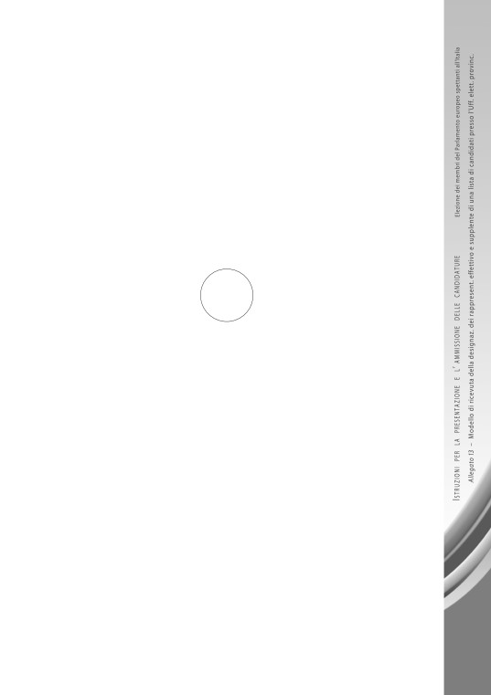
a firma del sig
(1),
espressamente autorizzato in forma autentica dai delegati della lista di candidati
contraddistinta con il n
e recante il contrassegno
, con la quale vengono designati il rappresentante effettivo e il rappresentante
supplente della lista medesima presso l’Ufficio elettorale provinciale costituito
nell’ambito di questo Tribunale.
Si rilascia la presente ricevuta per attestare l’avvenuto tempestivo deposito
della dichiarazione di cui sopra presso questa Cancelleria.
, addì
20
Bollo
Il Cancelliere
della
Cancelleria
181
ALLEGATO
14
Elezione dei membri del Parlamento europeo spettanti all’Italia del 2019
MODELLO DI RICEVUTA DELLA DESIGNAZIONE
DEI RAPPRESENTANTI EFFETTIVO E SUPPLENTE
DI UNA LISTA DI CANDIDATI
PRESSO L’ UFFICIO ELETTORALE CIRCOSCRIZIONALE
183
ALLEGATO
14
Elezione dei membri del Parlamento europeo
spettanti all’Italia del 2019
Modello di ricevuta della designazione
dei rappresentanti effettivi e supplenti di una lista di candidati
presso l’Ufficio elettorale circoscrizionale
ELEZIONE DEI MEMBRI DEL PARLAMENTO EUROPEO SPETTANTI ALL’ ITALIA DEL 2019
CIRCOSCRIZIONE
CANCELLERIA DELLA CORTE D’ APPELLO DI
RICEVUTA DELLA DESIGNAZIONE
DEI RAPPRESENTANTI EFFETTIVI E SUPPLENTI
DI UNA LISTA DI CANDIDATI
PRESSO L’ UFFICIO ELETTORALE CIRCOSCRIZIONALE
L’anno duemila
, addì
del mese di
, alle ore
,
è stata presentata, presso questa Cancelleria, la dichiarazione scritta
- debita-
mente autenticata a norma dell’articolo 25 del testo unico di cui al d.P.R. 30
marzo 1957, n. 361, come richiamato dall’articolo 12, undicesimo comma, della
legge 24 gennaio 1979, n. 18 - a firma del sig
(1),
quale delegato della lista di candidati contraddistinta con il n
e recante il contrassegno
oppure
a firma del sig
(1),
(1) Indicare il cognome, il nome, il luogo e la data di nascita.
184
espressamente autorizzato in forma autentica dai delegati della lista di candidati
contraddistinta con il n
e recante il contrassegno
, con la quale vengono designati il rappresentante effettivo e il rappresentante
supplente della lista medesima presso l’Ufficio elettorale circoscrizionale costitui-
to nell’ambito di questa Corte d’appello.
Si rilascia la presente ricevuta per attestare l’avvenuto tempestivo deposito
della dichiarazione di cui sopra presso questa Cancelleria.
, addì
20
Bollo
Il Cancelliere
della
Cancelleria
185
ALLEGATO
15
Elezione dei membri del Parlamento europeo spettanti all’Italia del 2019
MODELLO DI DESIGNAZIONE
DEL MANDATARIO ELETTORALE
DA PARTE DEL CANDIDATO
(articolo 7, comma 3, della legge 10 dicembre 1993, n. 515)
187
ALLEGATO
15
Elezione dei membri del Parlamento europeo
spettanti all’Italia del 2019
Modello di designazione del mandatario elettorale
a norma dell’articolo 7, comma 3,
della legge 10 dicembre 1993, n. 515
ELEZIONE DEI MEMBRI DEL PARLAMENTO EUROPEO SPETTANTI ALL’ ITALIA DEL 2019
CIRCOSCRIZIONE
CANCELLERIA DELLA CORTE D’ APPELLO DI
DESIGNAZIONE DEL MANDATARIO ELETTORALE
DA PARTE DEL CANDIDATO
AL COLLEGIO REGIONALE DI GARANZIA ELETTORALE
COSTITUITO PRESSO LA CORTE D’ APPELLO DI
Il sottoscritto / La sottoscritta
(1),
nato a / nata a
il
,
residente in
, via
,
avendo accettato la propria candidatura per l’elezione dei membri del Parla-
mento europeo del 2019 nella lista presentata nella circoscrizione
e contraddistinta con il contrassegno
,
188
(1)
- Nome, cognome, luogo e data di nascita.
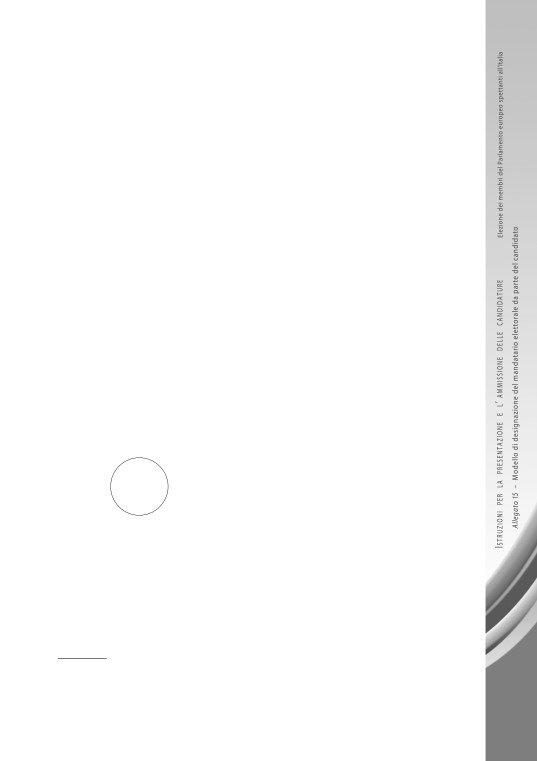
DESIGNA
ai sensi dell’articolo 7, comma 3, della legge 10 dicembre 1993, n. 515,
il sig. / la sig
,
nato / nata a
il
,
residente in
, via
,
quale mandatario elettorale per tutti gli adempimenti previsti dalla citata legge
n. 515/1993.
Firma del candidato
AUTENTICAZIONE DELLA FIRMA (1)
A norma dell’articolo 21, comma 2, del d.P.R. 28 dicembre 2000, n. 445, certifico
che è vera e autentica la firma apposta in mia presenza alla sopra estesa designazione
del mandatario elettorale dal sig
,
nato a
il
19
,
residente in
,
da me identificato con il seguente documento:
n
Il sottoscrittore è stato preventivamente ammonito sulla responsabilità penale
nella quale può incorrere in caso di dichiarazione mendace.
, addì
20
Timbro
Firma leggibile (nome e cognome per esteso) e qualifica
del pubblico ufficiale che procede all’autenticazione
(1)
L’autenticazione della firma deve essere effettuata da uno dei soggetti previsti
dall’articolo 14, comma 1, della legge 12 marzo 1990, n. 53, o da un’autorità diplomatica o
consolare.
189
Ideazione, progettazione grafica e cura del volume:
DIREZIONE CENTRALE DEI SERVIZI ELETTORALI
Stampa:
ISTITUTO POLIGRAFICO E ZECCA DELLO STATO S.p.A.
Marzo 2019